メガミゴロシミナゴロシ

「はあ……はあ……はあ……」
五島を抱えて走るには、この距離が限界だった。
おそらくまだ集落付近の森の中だろう。
五島を抱えて走るには、この距離が限界だった。
おそらくまだ集落付近の森の中だろう。
「先輩、もう降ろしてください。1人で歩けますから」
煙を吸って弱っていた五島もようやく調子を取り戻したようだ。
五島のお言葉に甘えて、身軽にならせてもらう。
煙を吸って弱っていた五島もようやく調子を取り戻したようだ。
五島のお言葉に甘えて、身軽にならせてもらう。
しかし、休憩しようにもさっきの大雨でまだ地面がぬかるんだままだ。
ここに座り込むのは、さすがに気が引ける。
特に山籠をしていない五島は嫌がるだろう。
チガ姉と話した廃屋までは20分以上かかるし、この辺で雨でぬれていない地面を探すしかない。
ここに座り込むのは、さすがに気が引ける。
特に山籠をしていない五島は嫌がるだろう。
チガ姉と話した廃屋までは20分以上かかるし、この辺で雨でぬれていない地面を探すしかない。

「あの先輩、私、気にしませんよ？ 服が汚れるくらい……」
「でも汚れないですむならその方がいいし、ここだと目立ってしまう。 お前はちょっとここで待ってろ。いい場所がないか探してくる。 1分で戻るからさ」
「すみません……」
「でも汚れないですむならその方がいいし、ここだと目立ってしまう。 お前はちょっとここで待ってろ。いい場所がないか探してくる。 1分で戻るからさ」
「すみません……」
私の体力ももう底が見えている。
あのなつみが差し出した煮物を食べておくべきだったか……。
結局毒が入っていたか分からないが、なつみは普通に食べていたし。
あのなつみが差し出した煮物を食べておくべきだったか……。
結局毒が入っていたか分からないが、なつみは普通に食べていたし。
ん？ これは……。

ほら穴か……。
もしかすると中は乾いてるかもしれない。
そろそろ1分経つな、戻らないと。
もしかすると中は乾いてるかもしれない。
そろそろ1分経つな、戻らないと。

「五島、いいところが見つかったぞ」

「ほんとですか？」
「ああ、何かほら穴みたいな感じでさ」
「中は確認しました？」
「いや、そこまで時間はなかったけど」
「誰かが使ってたりしませんよね……？」
「えっと、それは……」
「ああ、何かほら穴みたいな感じでさ」
「中は確認しました？」
「いや、そこまで時間はなかったけど」
「誰かが使ってたりしませんよね……？」
「えっと、それは……」
中に人の気配はなかったけど、誰かが頻繁に出入りしている可能性も否定できない。
あんなほら穴が誰の目にも留まらず放置されていたなんてないだろうし……。
でも、少しでも休めればいいんだ、少しでも。
あんなほら穴が誰の目にも留まらず放置されていたなんてないだろうし……。
でも、少しでも休めればいいんだ、少しでも。

五島を連れて穴に入ってみたが、やっぱり誰もいない。
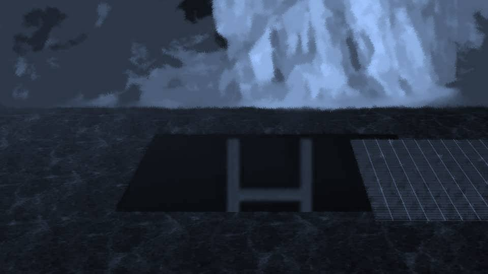
すみに置かれたゴザと、深そうな縦穴、そしてハシゴ。
地下へつながっているようだ。
のんびりと休むにはちょっと落ち着かない。
地下へつながっているようだ。
のんびりと休むにはちょっと落ち着かない。

「先輩、どうします……？」
「ちょっとだけ休憩しよう。私は気配には気をつけるからさ」
私は地面に腰を下ろした。
どうやら雨のほとんどはこの地下の方に流れ込んだようだ。
「ちょっとだけ休憩しよう。私は気配には気をつけるからさ」
私は地面に腰を下ろした。
どうやら雨のほとんどはこの地下の方に流れ込んだようだ。
五島も私にならい、腰を下ろす。
「先輩、お腹空いてませんか？
お昼も夕飯も食べてませんよね？」
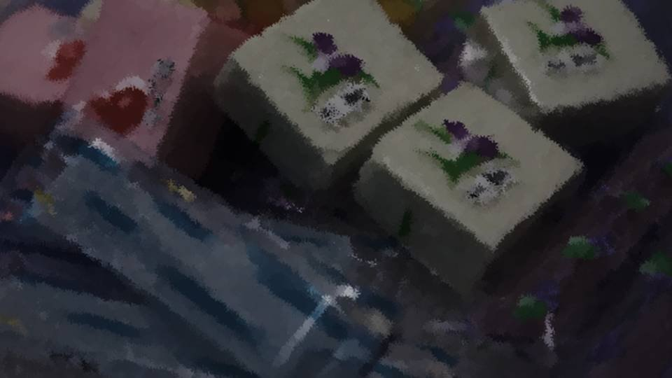
五島はポケットからたくさんの和菓子をとり出した。
「お前、どうしてそんなものを……」
「非常食になる物を、詰め込めるだけ詰めておきました。 和菓子は糖分多いし、腹持ちもいいですからね。 もちろん、どれも保存料入りなので安心です」
「非常食になる物を、詰め込めるだけ詰めておきました。 和菓子は糖分多いし、腹持ちもいいですからね。 もちろん、どれも保存料入りなので安心です」
「保存料って……まあ、ありがたくいただくよ」
どら焼きを手に取る。
ビニールの感触ですら懐かしいし、甘い味覚なんてすっかり忘れてしまった。
どら焼きを手に取る。
ビニールの感触ですら懐かしいし、甘い味覚なんてすっかり忘れてしまった。
「はは……甘いものなんて2年ぶりだ……」
「一気に食べないで下さいね。 慣れない糖分を一気にとると、鼻血が出たり高血糖になったりしますから」
私は五島の忠告に従い、思いきりかぶりつきたい衝動を抑え、半口分だけかじる。
「一気に食べないで下さいね。 慣れない糖分を一気にとると、鼻血が出たり高血糖になったりしますから」
私は五島の忠告に従い、思いきりかぶりつきたい衝動を抑え、半口分だけかじる。
山籠の時に口にできた甘い物と言えば、山に生る果物くらいだ。
だけど、いくら荒田のものでも、野生の果物はさほどおいしくない。
人間の手によって栽培された果物の方が、香りも甘さも豊かなのだ。
だけど、いくら荒田のものでも、野生の果物はさほどおいしくない。
人間の手によって栽培された果物の方が、香りも甘さも豊かなのだ。
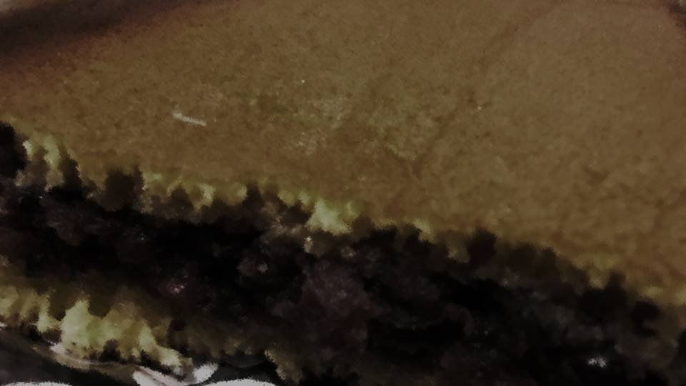
だから、この半口分のどら焼きの、天にも昇るほどに鮮烈な香りと甘さが、私の心までも満たしてくれる。
元木町にいた頃は大して噛まなかったが、今回ばかりは、その粉や小豆の皮の感触がなくなるまで噛み続けた。
元木町にいた頃は大して噛まなかったが、今回ばかりは、その粉や小豆の皮の感触がなくなるまで噛み続けた。
「はあ……たまらん……」
「えへ、よかったです」
五島は私にニカッと笑いかけた。
五島のこの顔も、本当に懐かしい。
「えへ、よかったです」
五島は私にニカッと笑いかけた。
五島のこの顔も、本当に懐かしい。
「五島、荒田駅で何があったんだ……？」
「そうですね、早く話しておかないと……」
「そうですね、早く話しておかないと……」
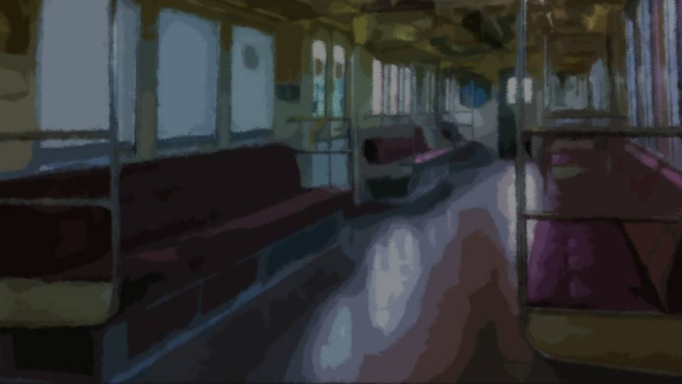
新村先輩が運転席を調べている時――。


「ん……声を出さないで、すぐに外に出て」
急にあの2人が電車の中に侵入し、私たちをあっという間に電車の外に連れ出しました。
そして――。
急にあの2人が電車の中に侵入し、私たちをあっという間に電車の外に連れ出しました。
そして――。
駅の外にはバギーがあり、それを大人の男が運転して集落まで。

「ん……ごめんね、ちょっとだけここで待ってて」
殴られたり拷問されたりはなかったんですが……
集落についてから、ちょっと古郡先輩の様子がおかしくなったんです。

「ねえ五島……怖い？」
「こ、怖いですよ……先輩は怖くないんですか？」
「こ、怖いですよ……先輩は怖くないんですか？」

「なんでだろう……ここに来てからあまり怖くないかな。
誰かに守られているような、そんな感じが……」
「な、何言ってるんですか……！ 私たち誘拐されたんですよ！？」
「五島、大丈夫だよ、この集落は安全。私の直感で分かるの。 ここにはね……女神様がいるから」
「な、何言ってるんですか……！ 私たち誘拐されたんですよ！？」
「五島、大丈夫だよ、この集落は安全。私の直感で分かるの。 ここにはね……女神様がいるから」
古郡先輩は危険察知しかできなかったのに、この集落は直感で安全だと言っていました。
それから古郡先輩は、ずっと恍惚とした顔で…… その……よく分からないことばかり言って。
『私は幸せ』だとか、『女神様に会える』だとか……。
それを聞いた集落の人たちは、古郡先輩を神使として迎え入れると言っていました。
それから古郡先輩は、ずっと恍惚とした顔で…… その……よく分からないことばかり言って。
『私は幸せ』だとか、『女神様に会える』だとか……。
それを聞いた集落の人たちは、古郡先輩を神使として迎え入れると言っていました。
「その神使って、何なんだ……？」
「日本神道で、神の使いを意味します。 どうやら古郡先輩を女神のしもべとするみたいです。 そもそも女神も神使も、このヴェルジ教でどういう役割なのか……」
「日本神道で、神の使いを意味します。 どうやら古郡先輩を女神のしもべとするみたいです。 そもそも女神も神使も、このヴェルジ教でどういう役割なのか……」
「なつみはここに来てから、何もされていないのに変になったんだな？」
「はい、私がずっと一緒でしたから、間違いありません。 あの……
「はい、私がずっと一緒でしたから、間違いありません。 あの……
私の言うこと、信じられますか？
もしかしたら私もおかしくなってるんじゃないかって、ずっと不安で……」
「もし五島がおかしいんだったら、私もおかしいさ。 だから私が正気なら、五島も正気だ」
「もし五島がおかしいんだったら、私もおかしいさ。 だから私が正気なら、五島も正気だ」
「遠まわしな言い方ですね……」
「何か、五島の気持ち分かり過ぎてさ…… 私もおかしいんじゃないかって」
「とりあえず、私と新村先輩の意思は同じってことですよね？」
「だな。自分はおかしくなってないと信じて、なつみを助け出さないといけない」
「何か、五島の気持ち分かり過ぎてさ…… 私もおかしいんじゃないかって」
「とりあえず、私と新村先輩の意思は同じってことですよね？」
「だな。自分はおかしくなってないと信じて、なつみを助け出さないといけない」
「そうだ……

そうですよ……！ 古郡先輩を早く助け出さないと！
でないと大変なことに……！」
「なんだ、何があるんだ？」
「何を言ってるんですか！？ 古郡先輩を神使として迎え入れるって、どういうことか分からないんですか！？ 神使っていうのは、女神のしもべってことですよ！？」
「なんだ、何があるんだ？」
「何を言ってるんですか！？ 古郡先輩を神使として迎え入れるって、どういうことか分からないんですか！？ 神使っていうのは、女神のしもべってことですよ！？」
ヴェルジと、サクラさんは、女神――つまり、死んだ人。
死んだ人のしもべになるってってことは……。
死んだ人のしもべになるってってことは……。
「おい！ だったらなつみ死んじまうじゃないか！」
「だからそう言ってるじゃないですか！ しかも古郡先輩、それがすごく名誉なことだって喜んでるんですよ！？」
「くそ、こうしちゃいられない……！」
「だからそう言ってるじゃないですか！ しかも古郡先輩、それがすごく名誉なことだって喜んでるんですよ！？」
「くそ、こうしちゃいられない……！」
ナイフを握り、立ち上がる――
が、足から力が抜け、へなへなと座り込んでしまった。
「な、何だよこれ……足が……」
「先輩大丈夫ですか！？
あの、お菓子に毒なんて入れてませんよ？」
「分かってるって。今日あちこち走り回って、ろくに休まなかったんだ。 多分、身体が無理やり休憩しようとしてるんだろうな……。 くそ……でもだからって、休んでもいられないし……」
「分かってるって。今日あちこち走り回って、ろくに休まなかったんだ。 多分、身体が無理やり休憩しようとしてるんだろうな……。 くそ……でもだからって、休んでもいられないし……」
座って食事をしたことで緊張の糸が切れ、疲れが押し寄せてくる。
もし横になったら、1分も経たずに眠ってしまうかもしれない。
もし横になったら、1分も経たずに眠ってしまうかもしれない。
「焦る気持ちは分かりますけど、確実に救出を成功させないと……。
ちゃんと作戦を立ててから動きましょうよ」
「何かいいアイディアでもあるのか？」
「えっと、それは……」
さすがの五島も、すぐになつみ奪還の作戦を立てられるわけではないらしい。
五島はこの辺の地形もよく知らないわけだし、無理もないと思うが……。
「何かいいアイディアでもあるのか？」
「えっと、それは……」
さすがの五島も、すぐになつみ奪還の作戦を立てられるわけではないらしい。
五島はこの辺の地形もよく知らないわけだし、無理もないと思うが……。
「そう言えば集会場で、誰か助けに来ませんでしたか？
私、混乱しててあまり覚えてないんですけど……」
「ああ、確かに来たよ」
「ああ、確かに来たよ」
 video: 桜.wmv
video: 桜.wmv
「すごい強さだった。あのチガ姉や夏菜を相手に一方的だった」
「誰なんですか？ あの人……」
「分からない。 白般若に白装束――荒田集落でも、あんな格好見たことないぞ」
「何か意味があるんでしょうかね……」
「誰なんですか？ あの人……」
「分からない。 白般若に白装束――荒田集落でも、あんな格好見たことないぞ」
「何か意味があるんでしょうかね……」
video: 桜.wmv「少なくとも、荒田集落の文化を知っているやつってことだろうな。
武器も鉈とメイスだった」
「もしかすると、まだ集落内に正気な人がいるのかもしれませんね」
「ああ、都合のいい話だけど、今は白般若が私たちの希望だ。 きっと、私たちを助けるために押し入ったんだよ」
「もしかすると、まだ集落内に正気な人がいるのかもしれませんね」
「ああ、都合のいい話だけど、今は白般若が私たちの希望だ。 きっと、私たちを助けるために押し入ったんだよ」
video: 桜.wmv「だったらきっと……古郡先輩も助けてくれてますよね？」
「どうだろうな……なつみは自分で神使になりたがってるんだろ？」
「…………」
「どうだろうな……なつみは自分で神使になりたがってるんだろ？」
「…………」
video: 桜.wmvあの白般若の正体は分からないが、少なくともヴェルジ教の敵対勢力と考えられる。
が、白般若の目的が分からない以上、その行動に期待することはできない。
やっぱり1番の問題は、なつみをどうやって助けるかだ。
しかも、なつみは自分の意思で神使になりたがっている。
助けてほしくない人を助けるなんて、簡単なことではない。
が、白般若の目的が分からない以上、その行動に期待することはできない。
やっぱり1番の問題は、なつみをどうやって助けるかだ。
しかも、なつみは自分の意思で神使になりたがっている。
助けてほしくない人を助けるなんて、簡単なことではない。
「じゃあさ、五島はどうしてあの集会場に連れて行かれたんだ？」
「よく分かりませんけど、私も仲間になる、とか……」
「はあ……五島にも呪いでもかけようってのか？。ほんとに邪教だよな…」
「呪いはありえませんけど、呪いに似たものはあるんでしょうね。 事実、古郡先輩もあんなことになったわけですし。 私に何をしようとしたかまでは分かりませんけど」
「よく分かりませんけど、私も仲間になる、とか……」
「はあ……五島にも呪いでもかけようってのか？。ほんとに邪教だよな…」
「呪いはありえませんけど、呪いに似たものはあるんでしょうね。 事実、古郡先輩もあんなことになったわけですし。 私に何をしようとしたかまでは分かりませんけど」
「いや、そうでもないぞ。なつみは新村家で、私に注射器を渡してきたんだ」
「え？ 新村先輩、古郡先輩に会ってたんですか？」
「まだ言ってなかったな。お前たちを探しに、最初に新村家に入ったんだ。 そしたら、なつみが自由に新村家を歩き回ってて。 んで、私に食事を勧めてきたかと思えば、次は注射器を渡してきたり――」
「え？ 新村先輩、古郡先輩に会ってたんですか？」
「まだ言ってなかったな。お前たちを探しに、最初に新村家に入ったんだ。 そしたら、なつみが自由に新村家を歩き回ってて。 んで、私に食事を勧めてきたかと思えば、次は注射器を渡してきたり――」
「食事と注射器……。
なるほど、それは重要な情報ですよ。
新村先輩は、勧められた食事は食べてないんですよね？」
「ああ、さすがに怪しかったし……。 でも、なつみは平然と食べてたな」
「ああ、さすがに怪しかったし……。 でも、なつみは平然と食べてたな」
「多分、その食事には本当に何も仕込まれていなかったんでしょうね。
古郡先輩の目的は新村先輩を安心させて、注射させることだったと思います。
いえ、もちろん新村先輩の体調を気遣ってのこともあったでしょうけど」
「じゃあなにか？ なつみはヴェルジ教にどっぷりはまってしまった以外は、やっぱり特に変わりはないってことか？」
「じゃあなにか？ なつみはヴェルジ教にどっぷりはまってしまった以外は、やっぱり特に変わりはないってことか？」
「多分そうだと思います。
私をさらった人たちも、手荒なことをしようとはしませんでしたから。
あの小さい子はちょっと怖かったですけど……」
小さい子というのは夏菜のことだろう。
確かに、夏菜はナイフを突きつけながら五島を集会場に入れていた。
小さい子というのは夏菜のことだろう。
確かに、夏菜はナイフを突きつけながら五島を集会場に入れていた。
「でも分からないな……。
五島を仲間にするってことなら、五島にも注射をする気だったんだろう。
でもどうして今の今まで注射されなかったんだろ……」
「うーん……もしかしたら注射だけが仲間になる条件ではないのかもしれませんね。
ほら、古郡先輩は注射もないのにあんなことになってしまったわけですから」
どちらにしても、今は五島でも真相を突き止めることもままならない。
どちらにしても、今は五島でも真相を突き止めることもままならない。
「よし五島、こうしよう。
今1番大事なのはなつみを救出することだ。
無理やりでも連れて帰って医者にでも見せたら何とかなるんじゃないか？
他の連中の目を覚まさせるのはそれからでもいいだろ」
「そうですね、それに警察も連れてきた方が心強いですし」
「そうですね、それに警察も連れてきた方が心強いですし」
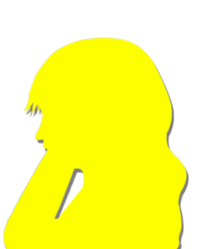
と五島はスマホを取り出した。
スマホも没収されてなかったなんて、ずいぶんとあいつら余裕だな。
スマホも没収されてなかったなんて、ずいぶんとあいつら余裕だな。
「もしもし、警察ですか？
はい――はい――」
どうやら無事に通じたようだ。
となると、無理になつみを連れ出すよりもひたすら隠れていた方が確実かもしれない。
どうやら無事に通じたようだ。
となると、無理になつみを連れ出すよりもひたすら隠れていた方が確実かもしれない。
「え！？
はい――はい――」
と、五島は電話を切らずにこちらを向く。
と、五島は電話を切らずにこちらを向く。
「先輩、大雨で土砂崩れが発生して、ここに着くのは明け方になるとか……」
「マジかよ……。 おい、ちゃんと電車の運転手が殺されてることも説明しろよ！？」
「マジかよ……。 おい、ちゃんと電車の運転手が殺されてることも説明しろよ！？」
と、五島はうなずいて電話に向かって状況説明を続ける。
そうか、土砂崩れでこっちに来られないってことは、運転手殺しすら発見されていないのか。
そうか、土砂崩れでこっちに来られないってことは、運転手殺しすら発見されていないのか。
「最悪、夜明けと同時にヘリで迎えに来てくれるそうです。
どこか広い場所はありますか？」
「この辺なら墓地広場だろうな。 あそこは草ばかりの平地で木も生えてないから。 ここから歩いて10分で着ける」
「じゃあ夜明けにヘリの音が聞こえたら移動ですね」
「ああ。だけど…… それまでに、なつみや私たちが無事ならいいけどな……」
「この辺なら墓地広場だろうな。 あそこは草ばかりの平地で木も生えてないから。 ここから歩いて10分で着ける」
「じゃあ夜明けにヘリの音が聞こえたら移動ですね」
「ああ。だけど…… それまでに、なつみや私たちが無事ならいいけどな……」
今はまだ日付すら過ぎていないだろう。
あと8時間はこのまま隠れ続けなくてはならない。
もしまた天気が崩れ、ヘリが飛べないとなったら……。
せめて五島だけでも逃がす方法も考えないと。
あと8時間はこのまま隠れ続けなくてはならない。
もしまた天気が崩れ、ヘリが飛べないとなったら……。
せめて五島だけでも逃がす方法も考えないと。
入り口から足音が……！
五島を私の後ろへ押し込み座ったままナイフを構える。
五島は私のすそを震える手でつかみ、じっと身を縮める。
足音は確実にこちらに向かっている。
さあ……来るなら来い……！
五島は私のすそを震える手でつかみ、じっと身を縮める。
足音は確実にこちらに向かっている。
さあ……来るなら来い……！

なつみ……！？
なつみは1人で来たのか……！？
しかし、もし大声でも出されたら、夏菜やチガ姉がすぐにこちらに来るだろう。
あの白般若はどうなったんだ！？ やっぱりなつみを助けなかったのか！？
なつみは1人で来たのか……！？
しかし、もし大声でも出されたら、夏菜やチガ姉がすぐにこちらに来るだろう。
あの白般若はどうなったんだ！？ やっぱりなつみを助けなかったのか！？
「なつみ！ 何しに来た……！」
なつみが私や五島を攻撃することはないだろう。
しかし、私は変わらずナイフを構え続ける。
後ろからチガ姉か夏菜が襲ってくるかもしれないからだ。
なつみが私や五島を攻撃することはないだろう。
しかし、私は変わらずナイフを構え続ける。
後ろからチガ姉か夏菜が襲ってくるかもしれないからだ。

「こ、古郡先輩！ 何しに来たんですか！？」
五島の震える声が洞窟内に響き渡る。
外に人がいれば、五島の声で私たちの存在に気づくだろう。
しかし、なつみが来た時点で私たちの存在を隠すことなど無意味だ。
五島はいち早くこの事態を打破する方法を探るため、敢えて声を出したのだろう。
五島の震える声が洞窟内に響き渡る。
外に人がいれば、五島の声で私たちの存在に気づくだろう。
しかし、なつみが来た時点で私たちの存在を隠すことなど無意味だ。
五島はいち早くこの事態を打破する方法を探るため、敢えて声を出したのだろう。
「ご、五島、どうするよ……！」
「説得するしか……」
「どうやってだよ……！」
「説得するしか……」
「どうやってだよ……！」
なつみはさらに少しずつ歩みを進め、こちらに近づいてくる。
しかし暗がりでその表情を見て取ることはできない。
しかし暗がりでその表情を見て取ることはできない。
…………！？
なつみがその場でばたりと倒れ込んだ。
何だこれは……新手の罠か？
こんなことして、どうするつもりだ……？
なつみがその場でばたりと倒れ込んだ。
何だこれは……新手の罠か？
こんなことして、どうするつもりだ……？

――昨日は夜更かししすぎた。
まぶたを貫通する太陽光は何時間も前から知覚していた。
しかし眠気もまた強く、眠気と覚醒の綱引きの間に落ちていた。
そしてついに綱引きに決着がつき、私は目を開ける。
まぶたを貫通する太陽光は何時間も前から知覚していた。
しかし眠気もまた強く、眠気と覚醒の綱引きの間に落ちていた。
そしてついに綱引きに決着がつき、私は目を開ける。
んん……と身体を伸ばす。
四月になると、さすがに暖かい。
春眠暁を覚えずとはよく言ったものだ。
こんなサバイバル生活をしているのに、やっぱり眠い時は眠い。
四月になると、さすがに暖かい。
春眠暁を覚えずとはよく言ったものだ。
こんなサバイバル生活をしているのに、やっぱり眠い時は眠い。
今日は……
少し集落に近づいてみようか。
祀耀802年四月八日はお母さんの三回忌。
私は山籠の身だから参加しないが、ちゃんと法要が行われるか気になる。
お母さんの追善供養が、ちゃんとなされるか。
祀耀802年四月八日はお母さんの三回忌。
私は山籠の身だから参加しないが、ちゃんと法要が行われるか気になる。
お母さんの追善供養が、ちゃんとなされるか。
この太陽の角度だと、今は8時くらいだろうか。
ここから集落までは私の足で1時間ほど。
入浴して、食事くらいはできそうだ。
ここから集落までは私の足で1時間ほど。
入浴して、食事くらいはできそうだ。

ついこの間まで、この辺は真っ白で殺風景な山だった。
例えるなら山の白骨死体とでもいうのだろうか。
でもその山がまた生まれ変わり、こうやって新しい命を芽生えさせる。
例えるなら山の白骨死体とでもいうのだろうか。
でもその山がまた生まれ変わり、こうやって新しい命を芽生えさせる。
山籠中は、この糸姫山で過ごさなくてはならない。
もちろん寒い冬場も山の中にいるわけだが……。
実は、この糸姫山には冬を過ごすための秘密があるのだ。
もちろん寒い冬場も山の中にいるわけだが……。
実は、この糸姫山には冬を過ごすための秘密があるのだ。

水面からもうもうと湧き上がる湯気。
これぞ糸姫山の秘湯、糸姫温泉（命名者、私）。
すぐに服を脱ぎ、そのまま湯気に向かってダイブする。
これぞ糸姫山の秘湯、糸姫温泉（命名者、私）。
すぐに服を脱ぎ、そのまま湯気に向かってダイブする。
最初は少し熱い。
でも最初だけ。じきに慣れてくる。
慣れてくると、少し物足りない。
そしたら少し川上へあがり、最も気持ちのいい温度を探り当てる。
探り当てると、適当なところで水面に浮いてみる。
でも最初だけ。じきに慣れてくる。
慣れてくると、少し物足りない。
そしたら少し川上へあがり、最も気持ちのいい温度を探り当てる。
探り当てると、適当なところで水面に浮いてみる。
山籠って、何だっけ……。
糸姫温泉に浸かっている時は、山籠の意味を忘れてしまう。
湯に浸かり、極楽極楽、とはよく言ったものだ。
山籠を行う上でもっとも過酷な「冬」というイベントも、この温泉の前では無力。
糸姫温泉に浸かっている時は、山籠の意味を忘れてしまう。
湯に浸かり、極楽極楽、とはよく言ったものだ。
山籠を行う上でもっとも過酷な「冬」というイベントも、この温泉の前では無力。
何百年も前から、山籠をする女たちはこの温泉で身体を温めていたそうだ。
それに不思議とこの温泉では湯冷めしないのだ。
ゆっくりと時間をかけて浸かれば、身体の芯から温まるのは言うまでもなく、半日くらいは身体が温かいままだ。
冬場は見えない湯たんぽを抱えているようであり、夏場は身体を冷やす汗をうっすらとかき続ける。
それに不思議とこの温泉では湯冷めしないのだ。
ゆっくりと時間をかけて浸かれば、身体の芯から温まるのは言うまでもなく、半日くらいは身体が温かいままだ。
冬場は見えない湯たんぽを抱えているようであり、夏場は身体を冷やす汗をうっすらとかき続ける。
さらに慣れてくると、短い時間浸かるだけでも身体がずっと温かいのだ。
ずっと冷えない身体へと生まれ変わらせてくれる。
ずっと冷えない身体へと生まれ変わらせてくれる。
山籠していると言っても、一応は私も女だ。
できる限り汚れたくはないし、きれいになれるのであれば、そうありたい。
そんな女の欲望を満たすかのように、肌にはうるおい、髪には艶、心には安らぎを与えてくれる。
できる限り汚れたくはないし、きれいになれるのであれば、そうありたい。
そんな女の欲望を満たすかのように、肌にはうるおい、髪には艶、心には安らぎを与えてくれる。
山籠ではヒマラヤやアルプスを想定したサバイバルなんか不要。
荒田で生き延びることができれば、それでいい。
だからこの温泉を楽しむことだって、立派な山籠なんだ。
荒田で生き延びることができれば、それでいい。
だからこの温泉を楽しむことだって、立派な山籠なんだ。
さて、そろそろ食事をして、集落へ向かおう。
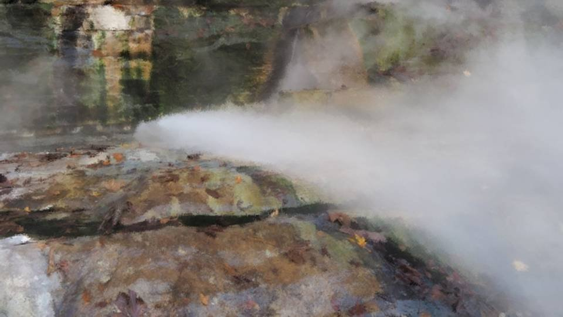
服を着て温泉の川上へ行き、源泉に沈めていたものを取り出す。
これは、木の葉でくるんだウサギの肉だ。
焼いてもおいしいが、この辺に自生する早春の木の実を砕いてまぶし、温泉で一晩茹で上げると、しっかりとした塩味と風味がつき、柔らかくおいしい。
焼いてもおいしいが、この辺に自生する早春の木の実を砕いてまぶし、温泉で一晩茹で上げると、しっかりとした塩味と風味がつき、柔らかくおいしい。
この方法だと木の葉が脂分とうまみを逃がさず、温泉の塩味がついてくる。
ウサギの肉なんて、鶏肉みたいなものだなあと思っていた。
だけど、この調理法だと鶏肉とウサギ肉の違いがはっきり分かる。
ウサギの肉なんて、鶏肉みたいなものだなあと思っていた。
だけど、この調理法だと鶏肉とウサギ肉の違いがはっきり分かる。
いや、もしかしたらこの味の違いは、荒田で獲れるウサギだからかもしれない。
このウサギの滋味もほんとうに素晴らしいのだ。
荒田の山で育ったウサギとブロイラーの鶏肉では、そりゃ味も違うはずだ。
このウサギの滋味もほんとうに素晴らしいのだ。
荒田の山で育ったウサギとブロイラーの鶏肉では、そりゃ味も違うはずだ。
初めのうちは、肉の茹で汁が入浴場に流れてくることに、少し抵抗があった。
まあ、それも慣れてしまえばどうと言うことはない。
川というのは30秒も流れると、自浄作用できれいな水に生まれ変わる。
まあ、それも慣れてしまえばどうと言うことはない。
川というのは30秒も流れると、自浄作用できれいな水に生まれ変わる。
よし、あとは柔らかくした木の繊維で歯を磨いたら、出発準備OKだ。
朝風呂、食事、歯磨き。高校の頃と変わりのない朝だ。
朝風呂、食事、歯磨き。高校の頃と変わりのない朝だ。
今から1時間ほど、この山道を走り集落に戻る。
今ならチガ姉や夏菜に近い運動能力があるから、疲れの心配もしていない。
今ならチガ姉や夏菜に近い運動能力があるから、疲れの心配もしていない。

ナイフは持っていこう。
帰りに獲物がいたら、今夜の食料にするのだ。
帰りに獲物がいたら、今夜の食料にするのだ。

――思っていた以上に、身体が軽い。
雪に埋もれていた山道も、ここ数日の晴天のおかげですっかり溶け、ぬかるみもなく、たくましい大地になった。
春の暖かい空気のおかげか、心も軽い。
1時間と見込んでいたが、45分で到着できるだろう。
雪に埋もれていた山道も、ここ数日の晴天のおかげですっかり溶け、ぬかるみもなく、たくましい大地になった。
春の暖かい空気のおかげか、心も軽い。
1時間と見込んでいたが、45分で到着できるだろう。
本を数冊だけ糸姫山に持ってきている。
サクラさんが声を出して読める物を持っていくようにと、アドバイスしてくれたのだ。
サクラさんが山籠した時、声を出さない生活を続けていたものだから、声もすっかり出なくなり、会話もしばらくの間はおぼつかなかったそうだ。
サクラさんが声を出して読める物を持っていくようにと、アドバイスしてくれたのだ。
サクラさんが山籠した時、声を出さない生活を続けていたものだから、声もすっかり出なくなり、会話もしばらくの間はおぼつかなかったそうだ。
そろそろ集落も近いはずだ。
集落から少し離れた杉の木の枝に腰かける。
集落から少し離れた杉の木の枝に腰かける。

ここなら、集落の様子がよく見える。
2年ぶりに来たが、さほど変わった様子はない。
人が歩いているのは分かるけど……。
2年ぶりに来たが、さほど変わった様子はない。
人が歩いているのは分かるけど……。
と言うか、別にこそこそとする必要もないかな。
2年間山にこもるのは私が勝手に決めたことだし、規定の1年間を過ごしたのだから、別に顔を合わせても……。
2年間山にこもるのは私が勝手に決めたことだし、規定の1年間を過ごしたのだから、別に顔を合わせても……。
だけど、急に会うのもちょっと恥ずかしいな。
何しろ、2年ぶりだし、サクラさんにしても夏菜にしても、会って何を言えばいいのか……。
何しろ、2年ぶりだし、サクラさんにしても夏菜にしても、会って何を言えばいいのか……。
よし、集会所の屋根に登ってみよう。
あそこなら、人に見つかりづらい。
あそこなら、人に見つかりづらい。

木や家の陰に隠れながら集会場に向かう。
そもそも隠れる理由はないのだけど、誰にも会う予定じゃなかったというだけで人目を避けている。
そもそも隠れる理由はないのだけど、誰にも会う予定じゃなかったというだけで人目を避けている。
あれ？ 人影はあるけど、みんな普通の格好しているな……。
誰も能面も赤装束も着けてないし……。
今日って四月八日だよな？
誰も能面も赤装束も着けてないし……。
今日って四月八日だよな？
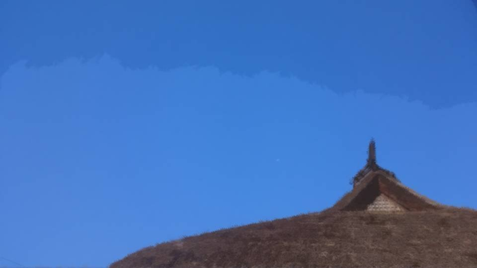
人目を避けて集会場の屋根に登るのは、造作もないことだった。
初めて集会場の屋根に登ったけど、きれいに掃除されている。
落ち葉やホコリなんかもほとんど溜まっていない。
最近誰かがこの屋根に登ったのだろうな。
それにしても……。
初めて集会場の屋根に登ったけど、きれいに掃除されている。
落ち葉やホコリなんかもほとんど溜まっていない。
最近誰かがこの屋根に登ったのだろうな。
それにしても……。
この集会場、人の気配が全くない。
太陽の角度では、もう10時を過ぎている。
三回忌は10時開始のはずだが……。
太陽の角度では、もう10時を過ぎている。
三回忌は10時開始のはずだが……。
それに何と言うか……
ちょっと集落の雰囲気が変だ。
うまく説明できないが、どこか落ち着かない空気。
うまく説明できないが、どこか落ち着かない空気。
――方針を変えた方がいいかもしれない。
この集落が今どうなっているのか、知っておく必要がある。
誰かに接触して、三回忌をやらない理由や、ちょっとおかしな雰囲気の理由を聞いてみよう。
この集落が今どうなっているのか、知っておく必要がある。
誰かに接触して、三回忌をやらない理由や、ちょっとおかしな雰囲気の理由を聞いてみよう。
「ん……春花？」
不意にすぐ後ろで声。
気配を感じさせずに屋根に登り、私の後ろに立っている。
でも、声の主を考えれば納得だ。
不意にすぐ後ろで声。
気配を感じさせずに屋根に登り、私の後ろに立っている。
でも、声の主を考えれば納得だ。
「チガ姉……！」
「ん……やっぱり春花。ずいぶん髪が伸びたわね」
「チガ姉、帰ってたんだな！」
「ん……春花こそお帰り。山籠本当に大変だったと思うわ」
「ん……やっぱり春花。ずいぶん髪が伸びたわね」
「チガ姉、帰ってたんだな！」
「ん……春花こそお帰り。山籠本当に大変だったと思うわ」
2年ぶりの人との会話。
会う前はちょっと気恥ずかしさがあったけど、いざこうして顔を合わせるとそんな気持ちもすぐに吹き飛んだ。
チガ姉は今年で22歳だったかな？
やっぱり、サクラさんに似てきている。
外見だけじゃなく、話し方も雰囲気も。
会う前はちょっと気恥ずかしさがあったけど、いざこうして顔を合わせるとそんな気持ちもすぐに吹き飛んだ。
チガ姉は今年で22歳だったかな？
やっぱり、サクラさんに似てきている。
外見だけじゃなく、話し方も雰囲気も。
「なあチガ姉、どうして今日は三回忌やってないんだ？」
「ん……春花、ちょっと場所を変えましょう」
「え？ ああ、そうだな、集会場の屋根で立ち話なんて、変だもんな」
「ん……じゃあついてきて。いい場所があるから」
「ん……春花、ちょっと場所を変えましょう」
「え？ ああ、そうだな、集会場の屋根で立ち話なんて、変だもんな」
「ん……じゃあついてきて。いい場所があるから」
チガ姉は、そっと音を立てないように屋根から降りる。
どうしたんだ？ 普通に屋根から飛び降りればいいのに……。
別に怪我をしている様子もないし……。
どうしたんだ？ 普通に屋根から飛び降りればいいのに……。
別に怪我をしている様子もないし……。
一応私もチガ姉と同じように音を立てないように、ゆっくりと屋根から下りる。

私が下りる間、チガ姉はきょろきょろと周囲を見回していた。
まるで人目を気にしているかのように。
まるで人目を気にしているかのように。
「ん……春花、ついてきて。話をするのにいい場所があるから」
「家の中とかじゃダメなのか？」
「家の中とかじゃダメなのか？」
チガ姉は私の質問に答えず走り出す。
やっぱり何かが変だ。
やっぱり何かが変だ。
もしかしたら、私と一緒にいるところを見られないようにしているのだろうか。
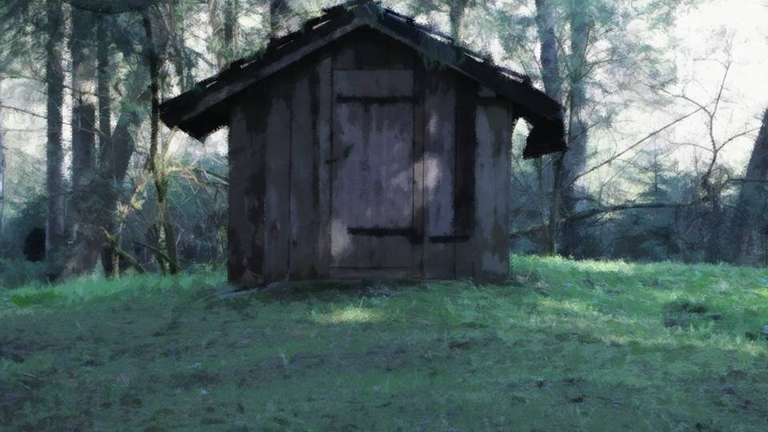
――着いたのは、廃屋のある小高い丘。
それにしても、チガ姉の足は速い。
2年間の山籠でも、チガ姉や夏菜にはまだまだかなわないだろう。
それにしても、チガ姉の足は速い。
2年間の山籠でも、チガ姉や夏菜にはまだまだかなわないだろう。
「はあ、はあ……チガ姉、やっぱり速いな……」
「ん……春花だって見違えるようよ？」
「でもよう……どうしてこんなところまで来たんだ？」
人影も動物の気配もなく、遠くで春の鳥のさえずりが聞こえるだけ。
明らかにチガ姉は人目を避けている。
「でもよう……どうしてこんなところまで来たんだ？」
人影も動物の気配もなく、遠くで春の鳥のさえずりが聞こえるだけ。
明らかにチガ姉は人目を避けている。
「ん……さあ、入って」
チガ姉に促されるまま、廃屋に入る。
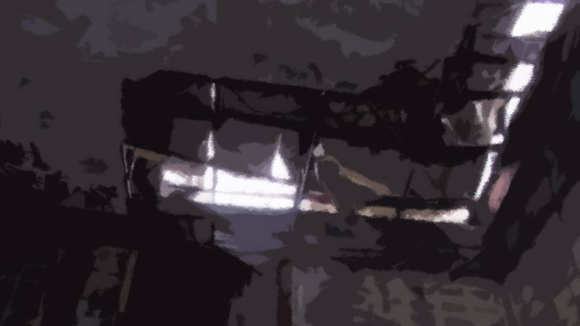
中はすっかり朽ちてぼろぼろ。
天井にも穴があき、雨宿りすらできないだろう。
ここでは風の音が余計に耳につく。
天井にも穴があき、雨宿りすらできないだろう。
ここでは風の音が余計に耳につく。
「あの、チガ姉……」
「ん……春花、言いたいことは分かるわ。
でも、誰もいないところに来ないといけなかったの」
やっぱりそうか、人前では話せないことを……。
あの集落のおかしな空気は気のせいではなかったようだ。
やっぱりそうか、人前では話せないことを……。
あの集落のおかしな空気は気のせいではなかったようだ。
もう2度目の春、かな。
俗世から離れ、この糸姫山にこもってもう2年近く経つ。
俗世から離れ、この糸姫山にこもってもう2年近く経つ。
この荒田独自の風習である山籠。
荒田集落は、もともと自警意識の強い軍事的な様相を持っていた。
その1人1人が強くあるために、このような山籠という通過儀礼を経て大人と認められるのだ。
荒田集落は、もともと自警意識の強い軍事的な様相を持っていた。
その1人1人が強くあるために、このような山籠という通過儀礼を経て大人と認められるのだ。
山籠は女子にだけ課せられる。
男は生物的に筋力があり、十分な戦力となる。
しかし女はどれほど鍛えようとも、男の腕力にはそうそう勝てない。
だから1年間の山籠を経て、筋力に頼らずとも戦力となる技術を身につけるのだ。
男は生物的に筋力があり、十分な戦力となる。
しかし女はどれほど鍛えようとも、男の腕力にはそうそう勝てない。
だから1年間の山籠を経て、筋力に頼らずとも戦力となる技術を身につけるのだ。
私のお母さんも、この山籠を経てお父さんと結婚した。
山籠に耐えられる嫁候補は、今ではほとんどいないそうだ。
それだけお母さんの意志は強く、そして私が生まれたのだ。
そんなお母さんの血を受け継いでいるのだから――山籠を甘く見ているわけではないが――私にだって成し遂げられるはずだ。
山籠に耐えられる嫁候補は、今ではほとんどいないそうだ。
それだけお母さんの意志は強く、そして私が生まれたのだ。
そんなお母さんの血を受け継いでいるのだから――山籠を甘く見ているわけではないが――私にだって成し遂げられるはずだ。
しかし、山籠が免除される例もある。
今それに該当するのは、チガ姉と夏菜だ。
もともと十分な戦力となる女子が山籠しても意味がないからだ。
あの姉妹は小さい頃から山でばかり遊んでいたから、習慣的に山籠をしていたと言ってもいいだろう。
今それに該当するのは、チガ姉と夏菜だ。
もともと十分な戦力となる女子が山籠しても意味がないからだ。
あの姉妹は小さい頃から山でばかり遊んでいたから、習慣的に山籠をしていたと言ってもいいだろう。
いずれにせよ、この荒田集落で暮らす以上、私も山籠を経てより強い集落にする。
ばあちゃんが亡くなり大魔女となったサクラさんは「何もそこまでする必要はない、今となってはただの伝統だから」と言ってくれたが――。
ばあちゃんが亡くなり大魔女となったサクラさんは「何もそこまでする必要はない、今となってはただの伝統だから」と言ってくれたが――。

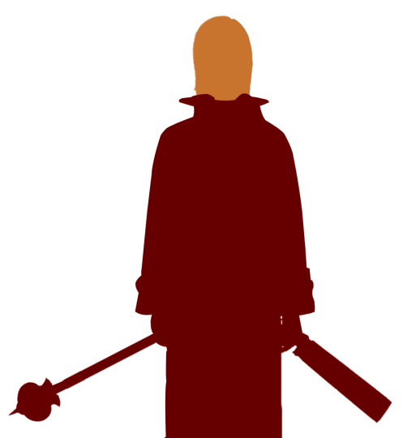
私は、2年前の事件でお母さんを失った。
なつみのお母さんに殺害されたのか、それとも自分自身の意思で姿を消したのか。
仮に殺害されたのだとしても、なつみのお母さんを恨んでいるわけではない。
そうなってしまった経緯については、私も十分に理解しているつもりだ。
なつみのお母さんに殺害されたのか、それとも自分自身の意思で姿を消したのか。
仮に殺害されたのだとしても、なつみのお母さんを恨んでいるわけではない。
そうなってしまった経緯については、私も十分に理解しているつもりだ。
だけど、どうして私のお母さんが消え、なつみのお母さんが五島の家に侵入したのか。
その理由は結局分かっていない。
その理由は結局分かっていない。

私は、普通よりも1年長く山籠を続けている。
18歳で山籠を始め、今月の20歳の誕生日に終える。
サクラさんは、そのヒントになるかもしれない情報を、私が20歳になる日に教えてくれると言っていた。
18歳で山籠を始め、今月の20歳の誕生日に終える。
サクラさんは、そのヒントになるかもしれない情報を、私が20歳になる日に教えてくれると言っていた。
いずれにしても、私が山を下りる日も近い。
あと20日ほどでその事実を教えてもらえる。
私の誕生日は四月三〇日で、今日は確か…… 四月七日。
明日はお母さんの命日だ。
なぜお母さんは消えただけなのに命日なのか。
あと20日ほどでその事実を教えてもらえる。
私の誕生日は四月三〇日で、今日は確か…… 四月七日。
明日はお母さんの命日だ。
なぜお母さんは消えただけなのに命日なのか。
元木町では四月八日にお母さんが消えてしまったが、その後のある出来事により、お母さんの死が明らかとなったのだ。
私はこうして火の前で目を閉じ、お母さんのことを想う。
2年前、元木町でなつみのお父さんの皮を剥いで殺害し、そして失踪してしまった。
私はこうして火の前で目を閉じ、お母さんのことを想う。
2年前、元木町でなつみのお父さんの皮を剥いで殺害し、そして失踪してしまった。
私のお母さんは、昔はとても気が弱く甘えん坊だったらしい。
そんなお母さんは私を生んでから、母親として強くあろうと頑張っていたそうだ。
だけど、お母さんは私のために強くあろうとし過ぎたのかもしれない。
そんなお母さんは私を生んでから、母親として強くあろうと頑張っていたそうだ。
だけど、お母さんは私のために強くあろうとし過ぎたのかもしれない。

私がいじめにあっていた時、お母さんは身を挺して私を助けようとしてくれた。
あの時のお母さんは、お父さんを亡くして病んでいたのに、私のために無理をしていた。
お母さんは、本当に強かった。
だけど、あの強さは無理したゆえの強さだったのだろう。
あの時のお母さんは、お父さんを亡くして病んでいたのに、私のために無理をしていた。
お母さんは、本当に強かった。
だけど、あの強さは無理したゆえの強さだったのだろう。
そんな深層心理と現実がずれすぎて、お母さんの心を壊してしまったのだろうか。
元木町に戻ってからも心が癒えることはなく、何かの間違いでお母さんは皮剥ぎ事件を起こしてしまった。
元木町に戻ってからも心が癒えることはなく、何かの間違いでお母さんは皮剥ぎ事件を起こしてしまった。
そうだ、何かの間違いだ。
お母さんが望んでそんなことをしたはずがない。
例えお母さんが犯人であっても、きっと無理をしてしまったから。
お母さんが望んでそんなことをしたはずがない。
例えお母さんが犯人であっても、きっと無理をしてしまったから。
私が荒田集落に着いた直後、ばあちゃんが亡くなった。
心筋梗塞での発作だったらしく、急きょ葬儀が執り行われた。
しかし、奇妙なことが起こった。
ばあちゃんを埋葬するために、墓地広場の土を掘り起こした時――。
心筋梗塞での発作だったらしく、急きょ葬儀が執り行われた。
しかし、奇妙なことが起こった。
ばあちゃんを埋葬するために、墓地広場の土を掘り起こした時――。

「おい！ 死体が埋まってるぞ！ まだ腐敗途中の死体だ！」
「誰だこれ、最近死んだやつなんていないぞ！」
このような騒ぎが起こったのだ。
「誰だこれ、最近死んだやつなんていないぞ！」
このような騒ぎが起こったのだ。
「ん……春花、夏菜、あっちに行きましょう」
私と夏菜は墓地広場から遠ざけられた。
私と夏菜は墓地広場から遠ざけられた。

「春花、これ……」
墓地広場から戻ってきたサクラさんから、薄汚れた写真を手渡された。
墓地広場から戻ってきたサクラさんから、薄汚れた写真を手渡された。
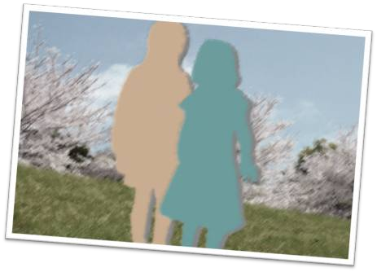
それは、小さな女の子が2人並んで写った古い写真。
この写真に見覚えがある。
お母さんがいつも大事に持っていた写真だ。
この写真に見覚えがある。
お母さんがいつも大事に持っていた写真だ。
サクラさんから聞かされたのは、見つかった死体は私のお母さんに間違いないと。
腐敗は進んでいたが、服装や体格、所持品からお母さんに違いない。
そして死後1ヶ月近く経っているとも言われた。
つまり、祀耀800年四月八日前後に亡くなったと言える。
腐敗は進んでいたが、服装や体格、所持品からお母さんに違いない。
そして死後1ヶ月近く経っているとも言われた。
つまり、祀耀800年四月八日前後に亡くなったと言える。
なぜ元木町で消えたはずのお母さんが、荒田の墓場に埋まっていたのか。
そんなこと誰にも分からない。
お母さんはこの地に埋まっていた。それは変えようもない事実。
そんなこと誰にも分からない。
お母さんはこの地に埋まっていた。それは変えようもない事実。

結局、私のお母さんの葬儀も一緒に行われることになった。
私はサクラさんにお願いして、お母さんの顔を見せてもらった。
ひどいありさまだった。
でも土まみれになった腐敗死体は、確かに私のお母さんだった。
荒田の慣習で、お母さんの命日は発見された日ではなく、死亡したと思われる日になった。
私はサクラさんにお願いして、お母さんの顔を見せてもらった。
ひどいありさまだった。
でも土まみれになった腐敗死体は、確かに私のお母さんだった。
荒田の慣習で、お母さんの命日は発見された日ではなく、死亡したと思われる日になった。
お母さんが死んでいるのではないか、ということは四月八日の1件から覚悟していた。
だから悲しみはあっても、お母さんを見つけられてよかったと、少しでも前向きな気持ちに切り替えることができた。
しかし、私にはまた別の感情が湧いてきたのだ。
だから悲しみはあっても、お母さんを見つけられてよかったと、少しでも前向きな気持ちに切り替えることができた。
しかし、私にはまた別の感情が湧いてきたのだ。
お母さんがこんな目に遭ったのは、きっと私のせいだ。
私がいかに弱く、お母さんを苦しめていたのか自覚した。
もう、弱い自分と決別したい。
お母さんはもういないけど、少しでも強くありたい。
私がいかに弱く、お母さんを苦しめていたのか自覚した。
もう、弱い自分と決別したい。
お母さんはもういないけど、少しでも強くありたい。
「山籠！？」
「ああ、すぐにでもやろうと思う」
「春花、もうそんな慣習に縛られる必要はないわ」
「私もここに住む以上は、みんなと同じ強さが必要なんだ。私は自分自身を鍛え直したい」
「ああ、すぐにでもやろうと思う」
「春花、もうそんな慣習に縛られる必要はないわ」
「私もここに住む以上は、みんなと同じ強さが必要なんだ。私は自分自身を鍛え直したい」
最初は反対されたけど、私の意思は変わらなかった。
自分の弱さゆえにお母さんを失ったのだったら、私は少しでも強くありたい。
そうでなければ、お母さんに顔向けできない。
自分の弱さゆえにお母さんを失ったのだったら、私は少しでも強くありたい。
そうでなければ、お母さんに顔向けできない。

荒田に着いた途端、ばあちゃんが亡くなってお母さんの死体が見つかったものだから、なつみや五島からのメッセージにまだ返答していなかった。

2人に今の私の状況を知らせたいが、

私はスマホの電源を切った。
自分の弱さを知った今、2人と接することに抵抗があったのだ。
2人に連絡を取るのは、私がもっと強くなってからだ。
もう、2人をこれ以上巻き込みたくない。
私の弱さで、また何かに巻き込んでしまったら……。
2人に連絡を取るのは、私がもっと強くなってからだ。
もう、2人をこれ以上巻き込みたくない。
私の弱さで、また何かに巻き込んでしまったら……。
お母さんの命日は祀耀800年の四月八日。
お母さん、安らかに眠ってください。
例え罪を犯し、地獄に落とされていたとしても、私はお母さんの冥福を祈る。
お母さん、安らかに眠ってください。
例え罪を犯し、地獄に落とされていたとしても、私はお母さんの冥福を祈る。
そう言えば以前、五島から聞いたことがある。
どんな流れだったかは覚えていないが、死後の世界について話をしたことがある。
どんな流れだったかは覚えていないが、死後の世界について話をしたことがある。

「1兆年！？」
「正確には1兆6653億年です。 仏教の地獄では最も罪が軽い者の刑期ですら、こんな気の遠くなる期間なんですよねえ。 等活地獄って言うんですけど、動物を殺したりいじめた者が堕ちるそうです」
「じゃ、じゃあ、刑期の1番長いところは……？」
「正確には1兆6653億年です。 仏教の地獄では最も罪が軽い者の刑期ですら、こんな気の遠くなる期間なんですよねえ。 等活地獄って言うんですけど、動物を殺したりいじめた者が堕ちるそうです」
「じゃ、じゃあ、刑期の1番長いところは……？」
「阿鼻地獄とか無間地獄っていうところです。
刑期は、1辺が7kmの巨大な立方体の石を、100年に1度薄い布で軽く払うんです。
その作業を繰り返し、石がすり減ってなくなるよりもさらに長い時間だそうですよ」
「もう壮大過ぎてリアリティないな……」
「こういうのは戒めのためですから、多少ぶっ飛んだ方が昔の人には分かりやすかったんじゃないですか？」
「そんなんじゃ地獄に落ちたやつの遺族なんて、大変だよなあ。 いくら法要をしたって、何兆年も出られないんだろ？」
「そんなんじゃ地獄に落ちたやつの遺族なんて、大変だよなあ。 いくら法要をしたって、何兆年も出られないんだろ？」
「実はそうではないんですよ。遺族の祈りって、すごく大事なんです！」
「そうなのか？」
「遺族たちがどれくらい供養してくれるかって、あの世での量刑では大事な指標だそうです。 だから、地獄に落ちるような悪人でも、一生懸命供養されるとその罪が軽減されるそうですよ。 追善供養って聞いたことありません？」
「そうなのか？」
「遺族たちがどれくらい供養してくれるかって、あの世での量刑では大事な指標だそうです。 だから、地獄に落ちるような悪人でも、一生懸命供養されるとその罪が軽減されるそうですよ。 追善供養って聞いたことありません？」
「ああ、聞いたことあるよ」
「追善、善行を追加する―― 地獄に落ちた人の代わりに、遺族が供養すると善が追加されるわけです。 だから、もし『この人地獄に落ちるだろうなあ』ってことがあれば、一生懸命供養してあげると、その人は早く救われると思いますよ」
「追善、善行を追加する―― 地獄に落ちた人の代わりに、遺族が供養すると善が追加されるわけです。 だから、もし『この人地獄に落ちるだろうなあ』ってことがあれば、一生懸命供養してあげると、その人は早く救われると思いますよ」
「ふーん……まあ、私には関係ないだろうけどなあ」
「ねえねえ、先輩……私が死んだら、追善供養してくれますか？」
「え？ お前、何か悪いことしたのか？」
「ねえねえ、先輩……私が死んだら、追善供養してくれますか？」
「え？ お前、何か悪いことしたのか？」

「大食も罪らしいので……」
「お前、知っていながら食い続けているなんて全然反省してないだろ……。 そんなやつに追善供養なんて贅沢だ！」
「お前、知っていながら食い続けているなんて全然反省してないだろ……。 そんなやつに追善供養なんて贅沢だ！」
「そんなひどい……！

あ、店員さんすみませーん！ お雑煮2つ追加くださーい！」
「お前は1度地獄で反省しろ！ っていうか、それもまた私のおごりになるんだろ！」
「お前は1度地獄で反省しろ！ っていうか、それもまた私のおごりになるんだろ！」
「だってえ、追善供養してもらえないなら、今のうちにたくさん供養してもらおうかなあって！」
「死んだらちゃんと供養してやるから、今日はもう勘弁してくれ！」
「死んだらちゃんと供養してやるから、今日はもう勘弁してくれ！」
――そんなたわいない思い出で、ちょっとだけ笑みが出る。
もし私が熱心に祈り続けたら、お母さんは早く地獄から出られるだろうか。
きっと今も、この火よりも熱い業火に焼かれているだろう。
もし私が熱心に祈り続けたら、お母さんは早く地獄から出られるだろうか。
きっと今も、この火よりも熱い業火に焼かれているだろう。
本当なら私も三回忌に出るべきだったのだろうけど、今は山籠の身。ここでお母さんの冥福を祈る。
私のために無理をし、望まない殺人をし、そして死んでいったお母さんに、少しでも安らぎを。
どうか、私の追善供養が届きますように。
私のために無理をし、望まない殺人をし、そして死んでいったお母さんに、少しでも安らぎを。
どうか、私の追善供養が届きますように。
正直、お母さんが死んだという実感が今でも薄い。
あの元木町での事件を境に、私の生活は大きく変わった。
色々なものが変わり過ぎて、お母さんの死を実感する間もなかった。
あの元木町での事件を境に、私の生活は大きく変わった。
色々なものが変わり過ぎて、お母さんの死を実感する間もなかった。
ただ、なつみや五島と連絡を絶ったのは私の意思だ。
山籠が終わるまで、なつみや五島とは連絡を取らない。
なつみが両親を失ったのも、きっと私のせいだ。
私に関わった人は、いつも不幸に見舞われる。
山籠が終わるまで、なつみや五島とは連絡を取らない。
なつみが両親を失ったのも、きっと私のせいだ。
私に関わった人は、いつも不幸に見舞われる。
なつみたちはどう思っているだろうか。
心配しているだろうか。怒っているだろうか。
それなら、まだいい。
もう忘れているだろうか。
私は1日たりとも忘れたことはない。
心配しているだろうか。怒っているだろうか。
それなら、まだいい。
もう忘れているだろうか。
私は1日たりとも忘れたことはない。
なつみと五島に会いたい――。
その煩悩を祓う意味でも、この山籠を続けている。
荒田集落の伝統に従い、そして克己し、自分自身を鍛え上げる。
その目的もあったのだが……。
その煩悩を祓う意味でも、この山籠を続けている。
荒田集落の伝統に従い、そして克己し、自分自身を鍛え上げる。
その目的もあったのだが……。
2年経っても、やっぱり私の意思は変わらない。
むしろ、20歳を心待ちにしている自分がいる。
山籠が終われば、なつみや五島に会える。
自分で決めたはずのルールが、逆に会いたさを助長していた。
むしろ、20歳を心待ちにしている自分がいる。
山籠が終われば、なつみや五島に会える。
自分で決めたはずのルールが、逆に会いたさを助長していた。
しょせん、私の克己心もこの程度だったわけだ。
私はこの2年間、何をしていたのだろうか。
肉体的に強くはなっただろう。
私はこの2年間、何をしていたのだろうか。
肉体的に強くはなっただろう。
しかし内面は――何も変わらない。
早く下界の楽な生活に戻りたい。
一方で、私の精神は未熟なまま。
私はまだ、修行が足りない。
早く下界の楽な生活に戻りたい。
一方で、私の精神は未熟なまま。
私はまだ、修行が足りない。
――大きくため息をつき、火に水をかける。
火の明かりに慣れてしまった視界が完全な闇に飲まれる。
しかし、10秒もすれば、その闇を満天の星が切り裂く。
しかし、10秒もすれば、その闇を満天の星が切り裂く。

もう0時を過ぎただろう。
ついに今日は、お母さんの三回忌か……。
祀耀802年四月八日、荒田集落ではお母さんの法要が行われるはずだ。
でも、私は出ない。
自分で決めた日まで、四月三〇日まで、私は誰にも会わない。
20歳になるまで、私は……。
ついに今日は、お母さんの三回忌か……。
祀耀802年四月八日、荒田集落ではお母さんの法要が行われるはずだ。
でも、私は出ない。
自分で決めた日まで、四月三〇日まで、私は誰にも会わない。
20歳になるまで、私は……。
お母さん、やっぱり地獄に落とされているのでしょうか。
だとしたら、私は少しでもお母さんの罪が軽くなるよう祈ります。
だとしたら、私は少しでもお母さんの罪が軽くなるよう祈ります。
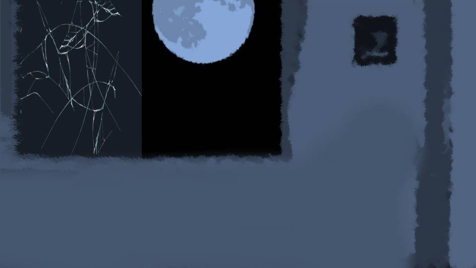
video: 桜.wmv
「だ、誰……？」
video: 桜.wmv
「動くな！ 武器を捨てろ！」
video: 桜.wmv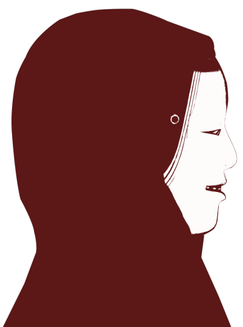
「ちくしょうーー！！」
video: 桜.wmv
「くそ……！ やっぱりダメか……！
古郡さん何してる！ 早く窓から逃げるんだ！」
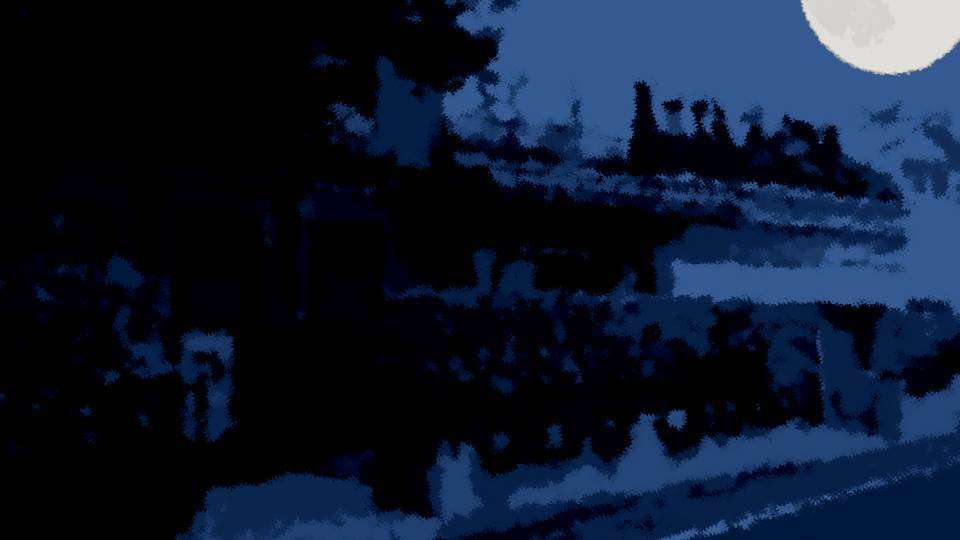
video: 桜.wmv銃弾をよけるような相手。逃げ切れるとも思えない。
video: 桜.wmv五島の家から銃声。
春花や五島はどうなってしまうのだろうか。
春花や五島はどうなってしまうのだろうか。

 video: 桜.wmv
video: 桜.wmvここは……中央公園？
 video: 桜吹雪風船なし.wmv
video: 桜吹雪風船なし.wmv
「なつみ……。信じ……なさい……。春花ちゃんを……」
「春花を……信じる……？」
「みんなを……みんなは……味方だよ」
「お父さん……！」
「春花を……信じる……？」
「みんなを……みんなは……味方だよ」
「お父さん……！」
「あなたがお父さんを殺したのね……」
「そこまでだ！ 公園は完全に包囲した！ 逃げ場はない！」
video: 桜.wmv

「なつみ……。
良治君は……お父さんはね……
最後の最後まで、私たちを守ろうとしたの。
せめて、あなたた――
うぐ！」
video: 桜.wmv
お母さんはすぐに病院に運ばれたが、到着前に救急車の中で息絶えてしまった。
おばさんは、どこへ行ったのかわからないそうだ。
お母さんの鉈や赤装束は、おばさんから奪ったものと推測されるらしい。
おばさんは、どこへ行ったのかわからないそうだ。
お母さんの鉈や赤装束は、おばさんから奪ったものと推測されるらしい。


「先輩たち、本当に行っちゃうんですか……？」
「まあ、仕方ないだろ？ 親があんなことしちゃったら、この町には居づらいしさ。 それにもう、家も家族もここにはないわけだし」
「また来るから。私のおばあちゃんの家、電車で1時間だから、すぐに会えるよ」
「まあ、仕方ないだろ？ 親があんなことしちゃったら、この町には居づらいしさ。 それにもう、家も家族もここにはないわけだし」
「また来るから。私のおばあちゃんの家、電車で1時間だから、すぐに会えるよ」
「お！ 私の電車が来たみたいだ」

「じゃあな！ また会おうな！」
「うん！ またね！」
「先輩！ 本気で愛してまーす！」
「うん！ またね！」
「先輩！ 本気で愛してまーす！」
しかし、春花から連絡が来ることは、2度となかった。
何度連絡を入れても。
1週間待っても。
1か月待っても。
1年待っても……。
何度連絡を入れても。
1週間待っても。
1か月待っても。
1年待っても……。
――2年後 祀耀802年四月八日

私はお父さんとお母さんの三回忌を終えて、電車に乗っていた。
「色々調べましたよ。新村家のこと……それでも行くんですよね。あの荒田集落に……。
先輩どうですか？ 何か、危険を感じますか？」
「どうだろう……ちょっと分からないかな……」
「どうだろう……ちょっと分からないかな……」
今から私は荒田集落に行く。
春花と……本物の魔女と……死神に会いに。
2年前の事件は、氷山の一角に過ぎない。
事件はまだ、終わっていない。
春花と……本物の魔女と……死神に会いに。
2年前の事件は、氷山の一角に過ぎない。
事件はまだ、終わっていない。
私がなつみや五島と連絡を取らなかった理由――。
それは弱い自分を鍛え上げるため。
私に関わる人はみんな不幸になってしまう。
だから私は、2年間山籠をしている。
それは弱い自分を鍛え上げるため。
私に関わる人はみんな不幸になってしまう。
だから私は、2年間山籠をしている。
もうすぐ、私が元木町を離れて2年経つ――。

――体感時刻は23時くらいか。
もうすぐ四月八日が終わる。
お母さんの三回忌が終わり、また普通の日々が始まろうとしている。
その普通の日々が、私にとって普通となるのかは分からない。
このまま何もしなければ、普通ではない日々になるだろう。
もうすぐ四月八日が終わる。
お母さんの三回忌が終わり、また普通の日々が始まろうとしている。
その普通の日々が、私にとって普通となるのかは分からない。
このまま何もしなければ、普通ではない日々になるだろう。
なつみや五島からの情報や推測によれば――
 video: 桜散る.wmv
video: 桜散る.wmv明日の朝には荒田集落は滅びる。
そして、荒田桜が住人の数だけ生まれることになる。
今日、外から来たものが荒田集落を滅ぼすという予言……。
あれはサクラさんの予言なのか、ヴェルジが何らかの情報を発信する手段を持っていたのか、それは定かではない。
そして、荒田桜が住人の数だけ生まれることになる。
今日、外から来たものが荒田集落を滅ぼすという予言……。
あれはサクラさんの予言なのか、ヴェルジが何らかの情報を発信する手段を持っていたのか、それは定かではない。
video: 桜散る.wmvでも、五島の推測通り荒田桜が宿主を探して住人たちを殺すなら、荒田集落が滅びるという意味合いが変わってくるはずだ。
みんなの意識が荒田桜に乗っ取られているのなら、荒田桜の意識ということになる。
つまり、
『荒田集落が滅びる＝住人が滅びる』
ではなく、
『荒田集落が滅びる＝荒田桜が滅びる』
となるのか……？
みんなの意識が荒田桜に乗っ取られているのなら、荒田桜の意識ということになる。
つまり、
『荒田集落が滅びる＝住人が滅びる』
ではなく、
『荒田集落が滅びる＝荒田桜が滅びる』
となるのか……？
video: 桜散る.wmvそう考えればつじつまが合う気がする。
もし、私もなつみも五島も、そして白般若も来なければ、荒田桜は何事もなく繁殖に成功していただろう。
だから、私たちが荒田桜を滅ぼし、みんなを救う可能性があると、荒田桜自身が知っているのだ。
もし、私もなつみも五島も、そして白般若も来なければ、荒田桜は何事もなく繁殖に成功していただろう。
だから、私たちが荒田桜を滅ぼし、みんなを救う可能性があると、荒田桜自身が知っているのだ。
video: 桜散る.wmvにしても、桜の木が人間に寄生して繁殖するなんて本当にあり得るのか……？
虫の脳を乗っ取る寄生虫とか、人間の身体で繁殖するとかの話は聞いたことあるけど……。
だけど、五島が言っていたように、今起きていることは常識はずれのことだから、常識はずれの発想が必要だ。
それは理解できるのだけど……。
虫の脳を乗っ取る寄生虫とか、人間の身体で繁殖するとかの話は聞いたことあるけど……。
だけど、五島が言っていたように、今起きていることは常識はずれのことだから、常識はずれの発想が必要だ。
それは理解できるのだけど……。
このような考えを、もう15分ほど繰り返している。
集会場を見張っていても、全く動きが見られない。
明かりが点いてるから、人がいるのは間違いなさそうだ。
このまま朝まで動きがない可能性も十分にある。
やっぱり、突入すべきか……？
集会場を見張っていても、全く動きが見られない。
明かりが点いてるから、人がいるのは間違いなさそうだ。
このまま朝まで動きがない可能性も十分にある。
やっぱり、突入すべきか……？
もう少し、もう少しだけ近寄ってみよう。
せめて、中の物音が聞こえるくらいに――。
せめて、中の物音が聞こえるくらいに――。

じっと呼吸を殺し、中の気配を探る。
………… いる…… たくさんいる。
中からわずかに咳払いが聞こえる程度だが、確実に多くの人間がいる。
見張りはいないのだろうか。
私はともかく、またあの白般若が来たら、住人たちにとって大変だと思うのだけど……。
………… いる…… たくさんいる。
中からわずかに咳払いが聞こえる程度だが、確実に多くの人間がいる。
見張りはいないのだろうか。
私はともかく、またあの白般若が来たら、住人たちにとって大変だと思うのだけど……。
いや……ちょっと待てよ。
それくらいの警戒心はあってもいいはずだ。
それがないってことは、まさかもう手遅れとか……？
もうみんな荒田桜に完全に乗っ取られているとしたら、助けられないじゃないか……！
それくらいの警戒心はあってもいいはずだ。
それがないってことは、まさかもう手遅れとか……？
もうみんな荒田桜に完全に乗っ取られているとしたら、助けられないじゃないか……！
――！！
不意に後ろに人の気配……！
不意に後ろに人の気配……！
素早くナイフを抜き振り向く。
チガ姉か！？ 夏菜か！？
チガ姉か！？ 夏菜か！？
「な……！」
白般若……！
白般若の能面は、女の怨霊を表現する面であり、恨みや復讐といった敵愾心を芸術化したものと言われている。
そして白の装束に身を包み、使い古した鉈とメイスを持っている。
白般若……！
白般若の能面は、女の怨霊を表現する面であり、恨みや復讐といった敵愾心を芸術化したものと言われている。
そして白の装束に身を包み、使い古した鉈とメイスを持っている。
「な、何だよお前……！ やっぱり敵か……！？」
と、白般若が鉈を振り上げる。
やっぱり、このまま私を……！
やっぱり、このまま私を……！
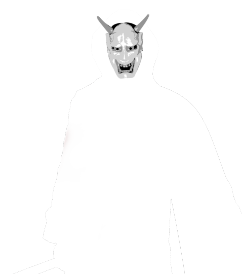
迷わず私の立っていた場所に振り下ろした。
私はそれをギリギリでかわすも、白般若があからさまな敵対行為を見せたことに焦りを感じる。
私はそれをギリギリでかわすも、白般若があからさまな敵対行為を見せたことに焦りを感じる。
白般若は私よりも早く体勢を整え、メイスの頭を私の足に絡めたかと思うと、私は氷の上を走る子供のように、宙で四分の一回転して尻もちをつく。
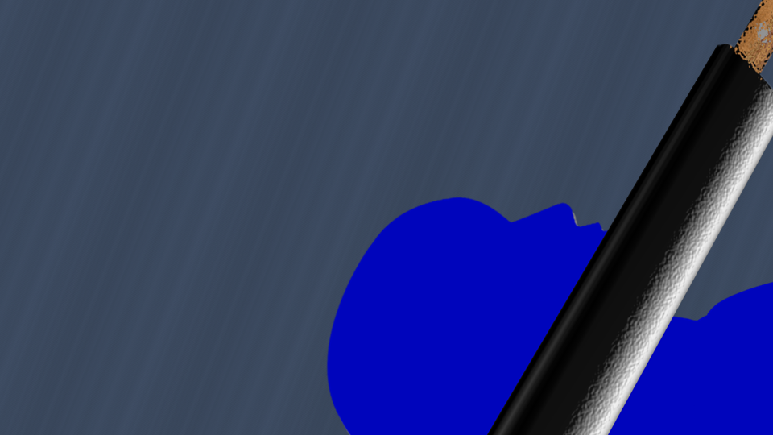
すかさず、私の首元に鉈が当てられる。
くそ……！ ここまでかよ……！
鉈はかなり刃こぼれしており、私の首を切り落とすどころか、動脈を切ることすらままならないだろう。
しかし、私の戦意を喪失させるには十分すぎる力の差だ。
どうする気だ……？ どうする気だよ……！
鉈はかなり刃こぼれしており、私の首を切り落とすどころか、動脈を切ることすらままならないだろう。
しかし、私の戦意を喪失させるには十分すぎる力の差だ。
どうする気だ……？ どうする気だよ……！
そして今度は思い切りメイスを振りかぶる。
相手は中腰で両手は武器でふさがっている。
チャンスだ……！
相手は中腰で両手は武器でふさがっている。
チャンスだ……！
白般若がメイスを振り下ろすよりも、私がナイフを投げる方が早かった。
ナイフは白般若の面に命中こそすれど、刺さることはなく地面にそのまま落ちる。
だが、白般若をわずかにひるませる効果はあったようだ。
その隙に立ち上がり、十分に間合いを広げる。
ナイフは白般若の面に命中こそすれど、刺さることはなく地面にそのまま落ちる。
だが、白般若をわずかにひるませる効果はあったようだ。
その隙に立ち上がり、十分に間合いを広げる。
くそ！ こいつは明らかに手加減している。
チガ姉や夏菜と戦った時はこんなもんじゃなかった。
どいつもこいつも私をバカにしてるのか……？
しかし、おかげで私はまだ無傷なわけだが……。
どうする？ ナイフはやつの足元で私は丸腰だ。
逃げるしかないか……？
チガ姉や夏菜と戦った時はこんなもんじゃなかった。
どいつもこいつも私をバカにしてるのか……？
しかし、おかげで私はまだ無傷なわけだが……。
どうする？ ナイフはやつの足元で私は丸腰だ。
逃げるしかないか……？
そもそも、私が背を向けて逃げたところで、追いかけられたらどうしようもない。
それなら、戦意がないことを見せるしかないだろう。
今私がやられてしまっては、なつみや五島を孤立させることになる。
それなら、戦意がないことを見せるしかないだろう。
今私がやられてしまっては、なつみや五島を孤立させることになる。

「ま、待ってくれ！ お前と戦う気はない！」
はっきりと戦う意思がないことを示し、ゆっくりと後ろに下がる。
はっきりと戦う意思がないことを示し、ゆっくりと後ろに下がる。
再び私は倒され、鉈を突きつけられる。
白般若がこちらにまっすぐ突進してくるのは分かった。
鉈の峰で大腿部を打たれ、メイスで突き飛ばされた。
それも、私が怪我しない程度での力でだ。
白般若がこちらにまっすぐ突進してくるのは分かった。
鉈の峰で大腿部を打たれ、メイスで突き飛ばされた。
それも、私が怪我しない程度での力でだ。
そう言えばこいつは、チガ姉たちと戦った時も一撃で倒そうとはせず、じわじわと攻めているようだった。
性格最悪だな……。
性格最悪だな……。
「な、何がしたいんだよ、お前は……！
やるならとっととやればいいだろ！ そんなに苦しめて殺したいのか！？
やっぱり、チガ姉や夏菜もこうやって殺したのか！？
だからここはこんなに静かなのか！？」
これは駆け引きではなく、正直な怒りの表現だ。
目的も見せず、私たちをじわじわとなぶり殺しにするかのような戦い方。
自分の怒りと相手の態度を認識すればするほど、さらに怒りが湧いてくる。
これは駆け引きではなく、正直な怒りの表現だ。
目的も見せず、私たちをじわじわとなぶり殺しにするかのような戦い方。
自分の怒りと相手の態度を認識すればするほど、さらに怒りが湧いてくる。
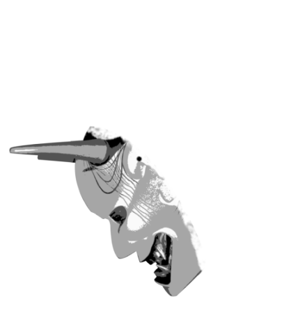
「おい、顔隠してないで何とか言えよ！
どうせお前だって独りよがりな正義で動いてるだけだろ！？
ほら、何とか言えよ！」
あからさまな挑発に白般若はどう動くだろうか。
私をすぐに殺す気がないなら、せめて罵倒で返すまでだ。
腕っぷしで勝てないなら、低俗な悪口で蔑んでやる……！
あからさまな挑発に白般若はどう動くだろうか。
私をすぐに殺す気がないなら、せめて罵倒で返すまでだ。
腕っぷしで勝てないなら、低俗な悪口で蔑んでやる……！
「ほら、顔も見せられない意気地なしの般若さんよ！
きっとお前はその面着けてる方がずっとイケメンなんだろうよ！
ほら、見せてみろよ、お前のブッサイクなご尊顔をよ！」
私の罵倒をどう思っているか知らないが、白般若はしばしその場に立ち尽くしていた。
私の罵倒に傷ついたのだろうか？
まさかな。次にどうやって私をいじめるか考えているだけだ。
私の罵倒をどう思っているか知らないが、白般若はしばしその場に立ち尽くしていた。
私の罵倒に傷ついたのだろうか？
まさかな。次にどうやって私をいじめるか考えているだけだ。
…………？
鉈を納めた……？
どういうつもりだ？
鉈を納めた……？
どういうつもりだ？
そして、白般若は瞬く間に私の前から消え去った。
罵倒する前から殺されることは覚悟していた。
でも、私の罵倒を取り合おうともせず、ただじっと私を見ていただけ。
何がしたかったんだよ、あいつは……。
私を襲った理由は何なんだ……？
でも、私の罵倒を取り合おうともせず、ただじっと私を見ていただけ。
何がしたかったんだよ、あいつは……。
私を襲った理由は何なんだ……？
白般若が立っていた場所に向かい、ナイフを拾う。
私があの時ナイフを投げなかったらどうなっていたんだ？
あのまま鉈で首を押さえつけられたまま、頭をメイスでたたきつぶされていたのか……？
私があの時ナイフを投げなかったらどうなっていたんだ？
あのまま鉈で首を押さえつけられたまま、頭をメイスでたたきつぶされていたのか……？
いや、今はそれよりも、この集会場をどうするかだ。
あれだけ騒いだのに集会場には何の変化もない。
本当にみんな、私を警戒していないのか、すでに手遅れなのか……。
五島の言葉を思い出す。
あれだけ騒いだのに集会場には何の変化もない。
本当にみんな、私を警戒していないのか、すでに手遅れなのか……。
五島の言葉を思い出す。
「とにかく、新村先輩の身を危険にさらすようなことはしないでください！
どうしても必要になったら、その前に絶対ここに戻ってきてください！」
約束したもんな。突入前に、1度戻って説明しないといけない。
………… …………。
いやでも、突入はしないから…… しないから、せめてちょっとだけ覗いてみよう。
入り口からそっと覗くだけ。
………… …………。
いやでも、突入はしないから…… しないから、せめてちょっとだけ覗いてみよう。
入り口からそっと覗くだけ。
音が鳴らないよう、そっと入り口を開けてみる。
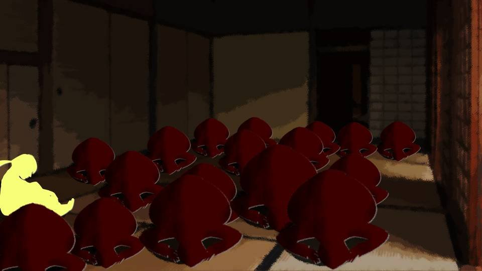
「う……！」
さっきの煙の臭いがまだ残っている。
息苦しさまでは感じないものの、この鼻をつく匂いは不快でしかない。
この臭いのせいで、嗅覚だけでは中の様子をうかがい知ることはできない。
もう少し、しっかり見えるように開けてみる。
さっきの煙の臭いがまだ残っている。
息苦しさまでは感じないものの、この鼻をつく匂いは不快でしかない。
この臭いのせいで、嗅覚だけでは中の様子をうかがい知ることはできない。
もう少し、しっかり見えるように開けてみる。
何してるんだ……？
赤装束をまとった人々が、ずっと畳の上で土下座するかのように伏せている。
彼らはずっと微動だにせず、顔を上げる気配すらない。
もしかして……もう、手遅れなのか……？
赤装束をまとった人々が、ずっと畳の上で土下座するかのように伏せている。
彼らはずっと微動だにせず、顔を上げる気配すらない。
もしかして……もう、手遅れなのか……？
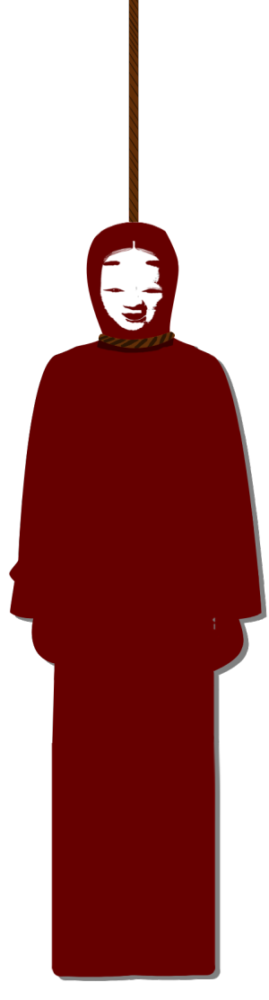
天井からは、相変わらずヴェルジのミイラが吊るされ、ひざまずく彼らをあざ笑うかのように、ぶらぶらと遊びほうけている。
私には何も感じないが、あいつが目に見えない『恵み』とやらを放出し続けているらしい。
私には何も感じないが、あいつが目に見えない『恵み』とやらを放出し続けているらしい。
今ならミイラを盗み出してさっさと燃やしてしまうなり、どこかへ隠すなりできそうだ。
見えないところでチガ姉か夏菜が見張っている可能性もあるが……。
それになつみたちと、勝手に突入はしない約束をした。
大人しく引き下がるか……？
見えないところでチガ姉か夏菜が見張っている可能性もあるが……。
それになつみたちと、勝手に突入はしない約束をした。
大人しく引き下がるか……？
いや、もしこれが一刻を争う状態ならば、すぐにでもミイラを持ち出すべきだ。
みんながどのような状況なのかは知らないが、もし制限時間があと1分だとしたら、なつみたちにいちいち突入の報告をすることなんて……。
さあ……どうするべきか……。
みんながどのような状況なのかは知らないが、もし制限時間があと1分だとしたら、なつみたちにいちいち突入の報告をすることなんて……。
さあ……どうするべきか……。
…………？
声……？
声が聞こえる。
子供の声だ。
それも……女の子の泣き声……。
声……？
声が聞こえる。
子供の声だ。
それも……女の子の泣き声……。
大声で泣くのではなく、かといって声を押し殺すのではなく、子供特有のさめざめと、そしてしくしくと泣く声――。
こんな声を出す住人と言えば……。
こんな声を出す住人と言えば……。
「お姉ちゃん……パパ……」
やっぱり夏菜の声だ。
夏菜にはまだはっきりとした意識があるようだ。
自然とナイフを握る手に力が入る。
やっぱり夏菜の声だ。
夏菜にはまだはっきりとした意識があるようだ。
自然とナイフを握る手に力が入る。
夏菜がこっちに向かってくる……！
急いで戸から顔を離し、壁の陰に隠れる。
もし夏菜に見つかったら、さっきの白般若のようにはいかないだろう。
もし夏菜に見つかったら、さっきの白般若のようにはいかないだろう。
そして戸が開かれる音の後、集会場から1人出てくる夏菜。
夏菜はどこへ向かうつもりなのか。
でも……変わらずにずっと泣き続けている。
まるで親とはぐれてしまった迷子のように、下を向いたまま集会場から出て行く。
と……。
夏菜はどこへ向かうつもりなのか。
でも……変わらずにずっと泣き続けている。
まるで親とはぐれてしまった迷子のように、下を向いたまま集会場から出て行く。
と……。

「春花ちゃん……？」
私に背を向けたまま名を呼ぶ夏菜。
「くそ……！」
さすがは夏菜だ。
こんな時でも私の気配を感じとり、不意打ちすらしようともしない。
ナイフを構え、戦わずに逃げる知恵を何とかして絞り出そうとする。
夏菜がゆっくりと、こちらに顔を向ける。
私に背を向けたまま名を呼ぶ夏菜。
「くそ……！」
さすがは夏菜だ。
こんな時でも私の気配を感じとり、不意打ちすらしようともしない。
ナイフを構え、戦わずに逃げる知恵を何とかして絞り出そうとする。
夏菜がゆっくりと、こちらに顔を向ける。

「…………
どうしたんだ……？」
夏菜の顔を見た瞬間、アドレナリンがすーっと引く。
そしてナイフを握る力すら緩めてしまう。
夏菜のその表情は、私から戦う気も逃げる気も奪い取ってしまった。
夏菜の顔は、それほどまでに悲壮なものだった。
夏菜の顔を見た瞬間、アドレナリンがすーっと引く。
そしてナイフを握る力すら緩めてしまう。
夏菜のその表情は、私から戦う気も逃げる気も奪い取ってしまった。
夏菜の顔は、それほどまでに悲壮なものだった。
そして夏菜は、まだ乾ききっていない地面に膝をつけ、大声で泣き出した。
親とはぐれて泣いていた子供が、親の亡骸を見つけたかのように。
私はお父さんもお母さんも失ったから、なぜ夏菜が泣いているのかが分かる。
夏菜はただ、怖くて、悲しくて、助けてほしくて泣いているのだ。
親とはぐれて泣いていた子供が、親の亡骸を見つけたかのように。
私はお父さんもお母さんも失ったから、なぜ夏菜が泣いているのかが分かる。
夏菜はただ、怖くて、悲しくて、助けてほしくて泣いているのだ。
だけど、私にはまだ警戒心が残り、すぐに夏菜に駆け寄ってあげることができず、優しい言葉もかけることもできず、ただ立ち尽くしていた。
「ねえ……
春花ちゃん……助けて……」
私はやはり、これに答えてやるべきなのだろうか。
それとも……罠……？
私はやはり、これに答えてやるべきなのだろうか。
それとも……罠……？
「夏菜、話せよ……。どうしたんだ？」
近づけない代わりに、なるべく夏菜が安心できるような声色で返事をしたつもりだ。
近づけない代わりに、なるべく夏菜が安心できるような声色で返事をしたつもりだ。
と、

夏菜がよろよろと立ち上がり、こちらに歩き出した。
私に抱きつこうと手を前に伸ばし、ふらふらと向かってくるものの、私は少しだけ後ずさりをしてしまう。
それでも夏菜はまっすぐ向かい、ついに私の身体を腕に収めた。
私に抱きつこうと手を前に伸ばし、ふらふらと向かってくるものの、私は少しだけ後ずさりをしてしまう。
それでも夏菜はまっすぐ向かい、ついに私の身体を腕に収めた。

「春花ちゃん……ごめんなさい……。
私……ずっと怖かった……。
みんな、ずっと前からおかしくなっちゃって……。
ママも……殺されちゃって……」
私に思いきりしがみつきながら夏菜は心の内を吐き出し、そしてまた膝の力が抜けたかのように、地面に座り込む。
でも夏菜は、私から手を離そうとしなかった。
私に思いきりしがみつきながら夏菜は心の内を吐き出し、そしてまた膝の力が抜けたかのように、地面に座り込む。
でも夏菜は、私から手を離そうとしなかった。
私もしゃがんで夏菜と目を合わせた。
「ほら、話せよ。何が怖かったんだ？ みんなおかしくなったけど、夏菜だけはおかしくならなかったのか？」
――夏菜は黙ってうなずく。
そしてまた、しくしくと泣き出す。
「ほら、話せよ。何が怖かったんだ？ みんなおかしくなったけど、夏菜だけはおかしくならなかったのか？」
――夏菜は黙ってうなずく。
そしてまた、しくしくと泣き出す。
「みんなおかしくなったから、夏菜もそれに合わせて動いてたのか？」
――そしてまた、夏菜はうなずく。
「おかしくならなかったのは、夏菜だけか？」
――夏菜はうなずく。
「チガ姉も幸太郎さんも、もうダメなのか？」
――夏菜はうなずく。
――そしてまた、夏菜はうなずく。
「おかしくならなかったのは、夏菜だけか？」
――夏菜はうなずく。
「チガ姉も幸太郎さんも、もうダメなのか？」
――夏菜はうなずく。
「どうして夏菜だけおかしくならなかったんだ？」
――夏菜は首を横に振る。
「どうしてこんなことになったのか、分かるか？」
――夏菜は首を横に振る。
「何も分からないのか？」
――夏菜はうなずく。
――夏菜は首を横に振る。
「どうしてこんなことになったのか、分かるか？」
――夏菜は首を横に振る。
「何も分からないのか？」
――夏菜はうなずく。
と、その時――。
集会場の戸が開かれる。
すると中から、裸足のままの住人たちがぞろぞろと出てきた。
私はすぐにナイフを構える。
すると中から、裸足のままの住人たちがぞろぞろと出てきた。
私はすぐにナイフを構える。
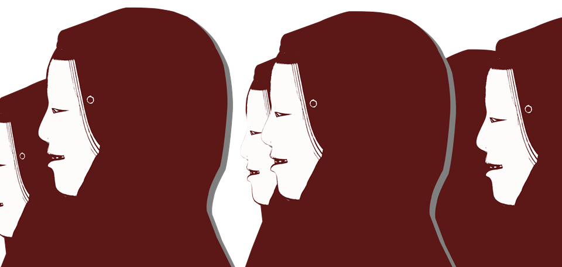
「みんな……どこへ行くの……？
ねえ……」
夏菜は座り込んだまま、叫び声にならない叫びを上げる。
住人たちは私たちの方を見ることすらせず、どことも知れぬ方向へ歩いて行く。
そして最後に、チガ姉と幸太郎さんが中から現れた。
夏菜は座り込んだまま、叫び声にならない叫びを上げる。
住人たちは私たちの方を見ることすらせず、どことも知れぬ方向へ歩いて行く。
そして最後に、チガ姉と幸太郎さんが中から現れた。
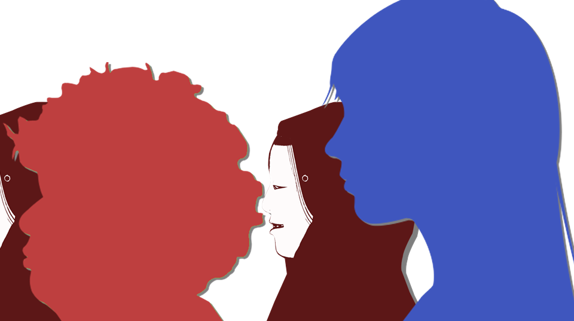
「お姉ちゃん！ パパ！ どこ行くの！？」
その涙声に、チガ姉と幸太郎さんは何の反応も見せない。
何の表情もない2人は、曲がった背筋と垂れた両手でどこかへ向かう。
その涙声に、チガ姉と幸太郎さんは何の反応も見せない。
何の表情もない2人は、曲がった背筋と垂れた両手でどこかへ向かう。
もう完全に荒田桜に意識を乗っ取られたのだろうか。
五島の言っていたように、宿主の身体を操り、発芽に最適な場所へ移動し、そこで力尽きるのだろうか。
もう、みんな死体と同じなのだろうか。
間に合わなかったってことか……？
五島の言っていたように、宿主の身体を操り、発芽に最適な場所へ移動し、そこで力尽きるのだろうか。
もう、みんな死体と同じなのだろうか。
間に合わなかったってことか……？
夏菜は立ち上がり、チガ姉の方へ力なく駆け寄る。
「ねえお姉ちゃん！ お姉ちゃんってば！」
チガ姉の腕を引っ張って揺らしても、チガ姉はただ歩くだけだ。
歩くことだけをプログラムされたロボットのように、ただ歩くだけ。
「ねえお姉ちゃん！ お姉ちゃんってば！」
チガ姉の腕を引っ張って揺らしても、チガ姉はただ歩くだけだ。
歩くことだけをプログラムされたロボットのように、ただ歩くだけ。
「痛……！」
幸太郎さんが夏菜の足を思いきり踏みつけた。
しかしこれは意図して踏んだのではなく、たまたま夏菜の足があったと言うだけ。
幸太郎さんが夏菜の足を思いきり踏みつけた。
しかしこれは意図して踏んだのではなく、たまたま夏菜の足があったと言うだけ。
そして幸太郎さんは、そのままバランスを崩し倒れてしまった。
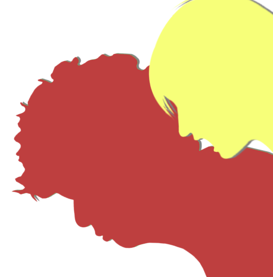
「ねえパパ！ 動かないで！ 歩かないで！」
夏菜が幸太郎さんにのしかかる。
幸太郎さんは倒れたまま、足だけ歩く動きを見せる。
チガ姉はそんな2人に全く興味を示さず、歩き続ける。
夏菜が幸太郎さんにのしかかる。
幸太郎さんは倒れたまま、足だけ歩く動きを見せる。
チガ姉はそんな2人に全く興味を示さず、歩き続ける。
「ねえパパ！ パパってば！」
「夏菜、もうやめろ……！」
「夏菜、もうやめろ……！」
私は見ていられなくなり、夏菜を幸太郎さんから引き離した。

すると幸太郎さんは、生まれたての小鹿のように不器用な起立を見せ、チガ姉の後を追う。
引き離された夏菜は、暴れることもなく、そのまま動きを止めた。
引き離された夏菜は、暴れることもなく、そのまま動きを止めた。
「パパも……お姉ちゃんも……
肌が冷たかった……」
やっぱり、手遅れだったのか……。
私が集会場に着いた時点で、助けることは不可能だっただろう。
その時には既に、彼らの体温は失われていた。
やっぱり、手遅れだったのか……。
私が集会場に着いた時点で、助けることは不可能だっただろう。
その時には既に、彼らの体温は失われていた。
みんなはバラバラの方へ歩いていく。
しかしきちんと集落の道をたどり、その様はまるで、自分の家に帰るかのようだ。
人間としての最後の帰巣本能なのだろうか。
自分の家で最期を迎えるつもりらしい。
しかしきちんと集落の道をたどり、その様はまるで、自分の家に帰るかのようだ。
人間としての最後の帰巣本能なのだろうか。
自分の家で最期を迎えるつもりらしい。
また夏菜が、声を上げて泣き出した。
「私……本当にひとりぼっちになっちゃった……。 みんな、どうなっちゃうの？ ねえ、どうしてみんな何も答えてくれないの？」
そうか、五島の説は推測とはいえ、夏菜はまだ荒田桜の生態について知らないのか。
みんな桜の木に寄生されて命を落とすなんてこと、私から言うべきなのだろうか。
こいつ、まだ12歳だろ……？
と――。
「私……本当にひとりぼっちになっちゃった……。 みんな、どうなっちゃうの？ ねえ、どうしてみんな何も答えてくれないの？」
そうか、五島の説は推測とはいえ、夏菜はまだ荒田桜の生態について知らないのか。
みんな桜の木に寄生されて命を落とすなんてこと、私から言うべきなのだろうか。
こいつ、まだ12歳だろ……？
と――。
白般若が、武器も持たずにじっとこちらを見ている。
「おい白般若！ お前、どういうつもりだ！ さっきはみんなを助けるのを邪魔するつもりだったのか！？」
白般若に詰め寄り、邪魔したことを咎める。
相変わらず私をじっと見たまま、返事どころか動こうとすらしない。
「おい白般若！ お前、どういうつもりだ！ さっきはみんなを助けるのを邪魔するつもりだったのか！？」
白般若に詰め寄り、邪魔したことを咎める。
相変わらず私をじっと見たまま、返事どころか動こうとすらしない。
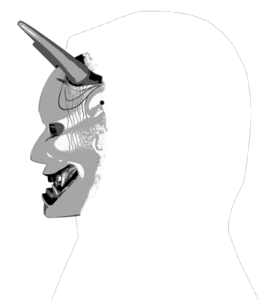
「何とか言えよ！」
片手で白般若を突き飛ばすと、1歩だけ後ろに下がった。
しかし、それだけで何もやり返してこようともしない。
片手で白般若を突き飛ばすと、1歩だけ後ろに下がった。
しかし、それだけで何もやり返してこようともしない。
「おい、答えろ！ お前こうなることを知ってて私の邪魔をしたのか！？」
と、白般若はうつむいてしまった。
「何黙ってんだよ！ ふざけんじゃねえよ！」
今度は左腿に蹴りを食らわせる。
すると白般若は、まるで普通の人間のようによろめいてしまった。
「何黙ってんだよ！ ふざけんじゃねえよ！」
今度は左腿に蹴りを食らわせる。
すると白般若は、まるで普通の人間のようによろめいてしまった。
「なに弱いふりしてんだよ……私がいじめてるみたいじゃないか……」
ただ、私の罵倒を受けとめ、そして怒りをその肉体で受け止める。
ただ、私の罵倒を受けとめ、そして怒りをその肉体で受け止める。
「ったく……」
気が抜けてしまった。
こいつは私の怒りを受け止め『その怒り、ごもっともです』とでも言いたげだ。
気が抜けてしまった。
こいつは私の怒りを受け止め『その怒り、ごもっともです』とでも言いたげだ。
「バカバカしい……。
夏菜、行こうぜ。なつみたちと隠れてる場所があるんだ。いい感じのほら穴があってな」
「ほら穴って……もしかして地下のハシゴがあるとこ？
だったらそこ、私の秘密基地だよ？」
「ああ、やっぱりそうなのか……。1歩間違えたら大変だったな……」
「ああ、やっぱりそうなのか……。1歩間違えたら大変だったな……」
――！！
私の喉元に冷たい感覚――
私の喉元に冷たい感覚――
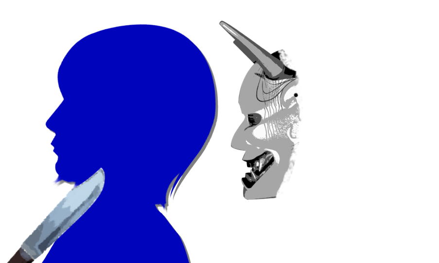
ナイフだ！
やっぱり夏菜は……！
やっぱり夏菜は……！
いや、夏菜じゃない……。
夏菜は何も持たず、私の後ろにいる者を怯えた顔で見ている。
そして私の後ろからは、こもった息づかいが聞こえる。
夏菜は何も持たず、私の後ろにいる者を怯えた顔で見ている。
そして私の後ろからは、こもった息づかいが聞こえる。
「何だよ、弱虫……」
白般若がまた、私の邪魔をする。
今度は夏菜をなつみたちに合流させるなと言っているのか……？
白般若がまた、私の邪魔をする。
今度は夏菜をなつみたちに合流させるなと言っているのか……？
「あんたが私たちを助けてくれたり、重要な情報をくれたりしたことには感謝する。
でも、それはお前のためであって、私たちのためじゃないんだろ？
お前は何がしたいんだ？
みんなが死んで桜の木になるところを、なつみや五島と一緒に眺めろと言っているのか？」
「みんなが桜の木に……！？」
しまった……夏菜にはまだ言いそびれていたことだ……。
しまった……夏菜にはまだ言いそびれていたことだ……。
「春花ちゃん……そう言うことだったらいいよ。
それっぽいこと、前に聞いてたから。
みんなもう、助からないんでしょ？
だったらパパとお姉ちゃんの最期くらい、看取ってあげたいから……」
「おい、夏菜……！」
「おい、夏菜……！」
「いいの、私が1年間ずっと黙っていたからこんなことになったの。
だから……それくらいはするよ。
パパとお姉ちゃんと、最期くらい一緒に居させて……」
夏菜は力なく、足を新村家の方に向けた。
「ごめんね春花ちゃん……さっきはナイフ突き付けたり、殴ったりして……」
夏菜はこちらを向かずに歩き出した。
同時に、白般若もナイフを収める。
夏菜はこちらを向かずに歩き出した。
同時に、白般若もナイフを収める。
「なあ、夏菜は私たちを騙しているわけじゃないんだよな？
本当に夏菜は正気なんだよな？」
白般若は返事もせず、否定するそぶりも見せない。
沈黙を以って肯定するってことか？
白般若は返事もせず、否定するそぶりも見せない。
沈黙を以って肯定するってことか？
「だったらそれでいい。
私は朝になったら、なつみたちとここを脱出する。
そして夏菜を引き取って、元木町で一緒に暮らす。
だから……
だから、もう邪魔しないでくれ……」
集会場を後にし、夏菜の秘密基地へ戻ることにした。
夏菜のことも気になるが、今は思うようにさせてやる。
夏菜のことも気になるが、今は思うようにさせてやる。
白般若は私の後を追うこともせず、その場で私を見送った。
今できることは、ただなつみたちの元へ向かうことだけだ。
もう、みんなを助ける手段はない。
何もかも、手遅れだった。
今できることは、ただなつみたちの元へ向かうことだけだ。
もう、みんなを助ける手段はない。
何もかも、手遅れだった。
「よう、なつみ！ 気がついたか！？」
「ん……あれ？」
私は努めて明るく目覚めのあいさつをする。
なつみへの警戒を解いたわけではない。
ただ他にどうやって声をかけたらいいか、分からないだけだ。
私は努めて明るく目覚めのあいさつをする。
なつみへの警戒を解いたわけではない。
ただ他にどうやって声をかけたらいいか、分からないだけだ。
なつみは起き上がると、周囲を見回し、私と五島の顔を確認した後、自分の身体に触れる。
今何が起こっているのか、なつみには理解できていないようだ。
そういう演技かもしれないが……。
私はいつでもナイフを取り出せるよう、ばれないように身構える。
今何が起こっているのか、なつみには理解できていないようだ。
そういう演技かもしれないが……。
私はいつでもナイフを取り出せるよう、ばれないように身構える。
「古郡先輩、大丈夫ですか？」
五島は私よりも警戒しているように見える。
五島は私よりも警戒しているように見える。
「うん、大丈夫だけど……。
あれ？ 私さっきまで集会場に居たのに……」
その言葉を聞いて私はナイフに手をかけ、周囲の気配をうかがう。
その言葉を聞いて私はナイフに手をかけ、周囲の気配をうかがう。
五島は私の後ろにさっと隠れる。
集会場の記憶があるってことは、まだなつみがおかしいままの可能性がある。
そんな警戒心むき出しの私たちに気づいたのだろうか―― なつみは私たちの方をじっと見ている。
と――。
集会場の記憶があるってことは、まだなつみがおかしいままの可能性がある。
そんな警戒心むき出しの私たちに気づいたのだろうか―― なつみは私たちの方をじっと見ている。
と――。
「あ、ああ！ 待って！ ちょっと待って！
私、今までどうして、どうして……！」
突如なつみが頭を抱えて地面に伏せてしまった。
「違う、違うの春花！ あれは私じゃないの！ 私がそんな……！」
そして命乞いするかのように怯えた声で、聞かれてもいない言い訳を始める。
突如なつみが頭を抱えて地面に伏せてしまった。
「違う、違うの春花！ あれは私じゃないの！ 私がそんな……！」
そして命乞いするかのように怯えた声で、聞かれてもいない言い訳を始める。
「お、おいなつみ……」
こうなると私もどうやって接してやればいいのか分からない。
五島もまだ私の後ろに隠れたままだ。
仕方ない、なつみには私を大けがさせるほどの腕力はないだろうし――。
こうなると私もどうやって接してやればいいのか分からない。
五島もまだ私の後ろに隠れたままだ。
仕方ない、なつみには私を大けがさせるほどの腕力はないだろうし――。
「おいなつみ！ しっかりしろよ！」
なつみを無理やり起こし、顔をこちらに向けさせる。
なつみを無理やり起こし、顔をこちらに向けさせる。
「は、は、春花……！」
呼吸が荒く、目に涙を浮かべているなつみ――。
なつみに、こんな演技なんてできただろうか。
こいつはバカ正直で、人を騙すのが苦手――それは分かっている。
だから……。
呼吸が荒く、目に涙を浮かべているなつみ――。
なつみに、こんな演技なんてできただろうか。
こいつはバカ正直で、人を騙すのが苦手――それは分かっている。
だから……。
「なつみ、落ち着いてくれ。私も五島も、なつみの味方だから、な？」
そしてなつみの肩をしっかりとつかみ、背筋を伸ばさせる。
そしてなつみの肩をしっかりとつかみ、背筋を伸ばさせる。

なつみは肩に乗った私の手の上に、さらに手を乗せる。
少しは落ち着いてくれただろうか……。
少しは落ち着いてくれただろうか……。
「春花……ごめんなさい……」
「正気に戻ったんだな？」
「…………」
そしてなつみはゆっくりとうなずく。
それを確認し、なつみの肩を抱きしめる。
「正気に戻ったんだな？」
「…………」
そしてなつみはゆっくりとうなずく。
それを確認し、なつみの肩を抱きしめる。
「なつみも怖かったんだよな？」
「ほんとに、ごめん……あれ、私じゃないから」
「分かってるって。 ほら五島、もう大丈夫だから」
「ほんとに、ごめん……あれ、私じゃないから」
「分かってるって。 ほら五島、もう大丈夫だから」
ずっとなつみと目を合わせようとしなかった五島も、ようやく少しだけ落ち着いたようだ。
「…………」
「五島……」
しかし、妙に2人の雰囲気がおかしい。
私の知らないところで何かあったのだろうか。
「五島……」
しかし、妙に2人の雰囲気がおかしい。
私の知らないところで何かあったのだろうか。
「五島、さっきは本当にごめん」
「古郡先輩が元に戻ったのなら、謝る必要もないですよ」
なつみの謝罪を素直に受け入れているように見えるが、まだ浮かない顔だ。
「古郡先輩が元に戻ったのなら、謝る必要もないですよ」
なつみの謝罪を素直に受け入れているように見えるが、まだ浮かない顔だ。
「なつみ、明日の朝に助けが来ることになっているから安心しろ。
他のみんなをどうやって助けるかなんて、あとから考えればいいだけの話だ」
「うん……」
「あと、さっきまでの記憶はあるんだよな？ ここは安全なのか？」
「うん……」
「あと、さっきまでの記憶はあるんだよな？ ここは安全なのか？」
「えっと……多分今夜は大丈夫だと思う。
もうみんな、集会場にこもる時間だと思うから」
「集会場にこもるって、どういうことだ？」
「えっと……私も全部は知らないんだけど……」
「集会場にこもるって、どういうことだ？」
「えっと……私も全部は知らないんだけど……」
なつみはそれから、ポツポツと語り始めた。
「今日はずっとみんなで、あのヴェルジのミイラと一緒に朝まで過ごすんだって。
それで『繁栄の儀』が終わるとか……」
「何だよ、繁栄の儀って……」
「あの時私が感じたのは『光栄』ってこと。 女神様のために命を捧げられるのが、嬉しかった」
「何だよ、繁栄の儀って……」
「あの時私が感じたのは『光栄』ってこと。 女神様のために命を捧げられるのが、嬉しかった」
「女神様ってヴェルジのことか？」
「ううん、違うと思う。 ヴェルジからは『恵み』が出ているってだけであんなに大切にされているの。 多分、女神様って、また別の存在だと思う」
「ううん、違うと思う。 ヴェルジからは『恵み』が出ているってだけであんなに大切にされているの。 多分、女神様って、また別の存在だと思う」
どういうことだ？
女神はヴェルジってさんざん言われていたし、現に古い本にもそう記載されている。
どうも、何かがかみ合わないな……。
女神はヴェルジってさんざん言われていたし、現に古い本にもそう記載されている。
どうも、何かがかみ合わないな……。
「それでね『繁栄の儀』が終わると、みんな死ぬ……
のかな……」
「やっぱりそっち系かよ……！ タイムリミットは朝までなのか！？」
「うん……朝になると、みんな半分死人のような状態になると思う。 みんなが女神様の一部として新しい生を受ける。それだけは、なんとなく理解できた」
「やっぱりそっち系かよ……！ タイムリミットは朝までなのか！？」
「うん……朝になると、みんな半分死人のような状態になると思う。 みんなが女神様の一部として新しい生を受ける。それだけは、なんとなく理解できた」
「もしかして五島の言っていた通りなんじゃないのか？
人間の身体を使って増殖していくって言う……」
「そうかもしれませんね。 桜っていうのは種子ではなく、人の手で挿し木や接ぎ木によって増えていく植物です。 桜の木、特にソメイヨシノはそのすべてがオリジナルのクローンであるとも言えます。 つまり、人の手がなければいずれ滅びる品種なんです」
「そうかもしれませんね。 桜っていうのは種子ではなく、人の手で挿し木や接ぎ木によって増えていく植物です。 桜の木、特にソメイヨシノはそのすべてがオリジナルのクローンであるとも言えます。 つまり、人の手がなければいずれ滅びる品種なんです」
「え？ 桜ってそんなに貧弱なものなのか？」
「自家不和合性っていう性質です。 これは同じ植物同士ではなく、他の植物に受粉することで初めて繁殖できるんです。 つまり自然界において、同じ品種は2つと存在しえない植物―― その1つが桜なんです」
「自家不和合性っていう性質です。 これは同じ植物同士ではなく、他の植物に受粉することで初めて繁殖できるんです。 つまり自然界において、同じ品種は2つと存在しえない植物―― その1つが桜なんです」
「だから、桜が他の生物を頼って繁殖するのは、自然界では当たり前のことなんです。
でも、荒田桜はどうやっても繁殖させることのできなかった植物――
荒田桜もソメイヨシノ同様、自家不和合性と推測されます。
だから、荒田桜も必ず他の『何らかの生物』を媒介して繁殖するはずなんです」
「それが……人間？」
「古郡先輩の話を絡めてみてもつじつまが合います。 つまり、荒田桜の生態はこうです――」
「古郡先輩の話を絡めてみてもつじつまが合います。 つまり、荒田桜の生態はこうです――」
 video: 111.wmv
video: 111.wmv「ソメイヨシノは種子では純粋な子孫を残すことのできない自家不和合性という性質を持っている。
しかし、荒田桜は種子でも挿し木でも接ぎ木でも、子孫が増えることはなかった。
つまり、放っておいて増えるような品種ではない。
これはソメイヨシノによく似ています」
video: 111.wmv「そのために必要なのが人間。
身体能力を高めるドローガは人間にとって魅力的であり、これがあれば生存競争で勝つことができる。
しかし、ドローガは単なる餌でしかなく、血液を媒介することで寄生する対象者を増やしていく」
video: 111.wmv「そしてある世代になると『繁殖』が行われる。
繁殖方法は、第三世代の死体から発生する『恵み』と言われる物質、おそらく植物で言う花粉のようなもの。
これを吸引した第一世代および第二世代は、次の荒田桜を生やすための胚、つまり苗床となる」
video: 111.wmv「結果、今回の例に当てはめると、第三世代であるヴェルジのミイラから放出された『恵み』により、明朝には彼らの体内では次世代の荒田桜が発芽し、やがて死に至る。
そして荒田桜は再びこの荒田地区の山を覆う存在となる」
video: 111.wmv「なぜ第三世代が思春期になると人を殺したくなるのかはまだ分かりませんが、おそらくこれは、荒田桜の繁殖に適した何らかの環境を作るために必要なのだろうと思います。
そして予知能力というのは、荒田桜が感染者に与えたフェイクの能力です」
video: 111.wmv「私の危険予知がフェイク……？」
「古郡先輩はこの集落に来た時『ここは安全』と言っていました。 つまり、荒田桜の『恵み』を受けた時に予知の性質が変化した。 ということは、荒田桜の作用により古郡先輩の直感も変わるということです」
「古郡先輩はこの集落に来た時『ここは安全』と言っていました。 つまり、荒田桜の『恵み』を受けた時に予知の性質が変化した。 ということは、荒田桜の作用により古郡先輩の直感も変わるということです」
video: 111.wmv「例えば、テレパシーのようなものです。
ドローガを摂取して『恵み』を受けると、先ほどの住人たちのようにおかしな行動をしてしまう。
同じように、第二世代の人間には荒田桜の声――
つまり危険予知らしきものが聞こえる。
もしそのような予知能力があれば、その社会では重宝され、その人の警告にみんな従うようになってしまう」
video: 111.wmv「ミイラになったサクラさんは、何らかの理由でヴェルジの『恵み』を受けてしまった。
もし『恵み』を受けたサクラさんが「危険だからみんなドローガを使いなさい」と言ったらどうなるでしょう？
これまで集落の命綱だったサクラさんの言うことなら聞いてしまうのではないでしょうか」
video: 111.wmv「じゃあ予知能力っていうのは、人間を騙すための――」
「はい、だからフェイクの能力なんです。 どのようなメカニズムで危険予知を可能としていたのかは分かりませんが、色々と仮説は立てられます」
「はい、だからフェイクの能力なんです。 どのようなメカニズムで危険予知を可能としていたのかは分かりませんが、色々と仮説は立てられます」
video: 111.wmv「テレパシーは、人間の脳波を媒介するパイプがあれば科学的に実現可能です。
現実にインターネットと電極を使って、そのような実験も成功しているようですから。
例えば、空気中の荒田桜の花粉、あるいは普通の桜の花粉でも可能かもしれませんが、それらの花粉を中継して荒田桜から第二世代の人間へテレパシーを送るなんてことも、原理的には実現できるはずです」
「ドローガというのは、人間の能力を高めることができる発明品ではなく、荒田桜が繁殖するための罠だったと思われます」
「いやでも、ドローガってのは発明されてから500年しかも経てないんだろ？ その前の桜はどうなんだよ……」
「いやでも、ドローガってのは発明されてから500年しかも経てないんだろ？ その前の桜はどうなんだよ……」
「何も宿主は人間だけとは限りません。
植物の根をむさぼるイノシシもいれば、樹皮をかじる熊だっています。
彼らが荒田桜の一部を食うことで、ドローガの成分を積極的に摂取する習慣があるとすれば、十分に繁殖する機会はあったでしょうね」
「ただ残念ながら、人間が移り住んでからというもの、動物たちが荒田桜を独り占めする人間たちにかなうわけもなく、人間しか宿主がいなくなってしまったというわけでしょうね」
「だとしたら、みんなを助けようと思ったら五島の言うように、ヴェルジのミイラを燃やすか隠すかしないといけないのか……。
そしてできれば、新村本家の桜の木を完全に消して……」
だけどそのためにはチガ姉や夏菜たちに見つからないように、ヴェルジのミイラを盗まなくてはならない。
難易度の高い怪盗劇になるだろう。
だけどそのためにはチガ姉や夏菜たちに見つからないように、ヴェルジのミイラを盗まなくてはならない。
難易度の高い怪盗劇になるだろう。
「ねえ、だとしたら私はどうなの？
私、治ったっぽいんだけど……」
するとなつみは考え込むようにあごに手を当てる。
するとなつみは考え込むようにあごに手を当てる。
「そうだ！ 私、集会場で意識が朦朧としていた時に、誰かに助け出してもらったの！」
「もしかしたら白般若か！？」
「どうだろう……よく覚えてないけど、顔は分からなかったな……。 このほら穴の入り口まで運ばれた後、えっと……」
「もしかしたら白般若か！？」
「どうだろう……よく覚えてないけど、顔は分からなかったな……。 このほら穴の入り口まで運ばれた後、えっと……」

と、なつみは右腕の袖をまくり始めた。
「やっぱりそうだ……。
私、注射されたんだよ。
どんなのかよく分からないけど、透明な液体だったような……」
「透明……ってことは、なつみが私に差し出したやつとは違うんだよな？ あれはピンク色だったし」
「うん、春花に渡すのはドローガだって幸太郎さんが言ってたから」
「やっぱりドローガか……。 ドローガを使った奴が寄生されてしまうってことなんだな」
「透明……ってことは、なつみが私に差し出したやつとは違うんだよな？ あれはピンク色だったし」
「うん、春花に渡すのはドローガだって幸太郎さんが言ってたから」
「やっぱりドローガか……。 ドローガを使った奴が寄生されてしまうってことなんだな」
「我ながら妄想的な推理だと思いましたけど、そんなに外れてはいないっぽいですね」
「よし……大方の謎は解けたってところか？」
「全部推測ですけどね……」
「推測でもそれなりに根拠はあるし筋も通ってるだろ？ だったら…… お前らはここに残れ。私がヴェルジのミイラを盗み出してくる」
「よし……大方の謎は解けたってところか？」
「全部推測ですけどね……」
「推測でもそれなりに根拠はあるし筋も通ってるだろ？ だったら…… お前らはここに残れ。私がヴェルジのミイラを盗み出してくる」
「ちょっと待ってよ春花！ 1人でなんて、危ないよ！」
「悪いけど、お前たちは足手まといだ。 ここからはある程度動けるやつじゃないと難しい」
「先輩……」
とはいえ、私の疲労もかなり溜まっている。
普段ほど動けないだろうが、疲れているのは2人も同じだ。
余計に連れていけない。
「悪いけど、お前たちは足手まといだ。 ここからはある程度動けるやつじゃないと難しい」
「先輩……」
とはいえ、私の疲労もかなり溜まっている。
普段ほど動けないだろうが、疲れているのは2人も同じだ。
余計に連れていけない。
「春花……私は行ってほしくないよ……。
みんなを見殺しにしたくない気持ちは分かるけど……。
ここに居ようよ……」
「私も古郡先輩に賛成です。 まともな作戦もなしにミイラを盗みに行くなんて、……。 本当にミイラ取りがミイラになっちゃいますよ……」
「私も古郡先輩に賛成です。 まともな作戦もなしにミイラを盗みに行くなんて、……。 本当にミイラ取りがミイラになっちゃいますよ……」
やっぱり賛成はしてくれないようだ。
賛成しない気持ちも理屈も分かるけど……。
賛成しない気持ちも理屈も分かるけど……。
「まともな作戦か……。
じゃあ仮に行くとして、何かすぐに立てられる作戦はないか？」
「これまた無茶振りですね……」
「うーん……」
行くことに賛成はしなくても、作戦を一緒に考えることはしてくれるらしいが……。
無理な相談をしていることくらいは自覚している。
行くことに賛成はしなくても、作戦を一緒に考えることはしてくれるらしいが……。
無理な相談をしていることくらいは自覚している。
「ねえ春花、さっき言ってた白般若ってどうなの？
私たちの味方になってくれるんじゃないの？」
「あいつ、助けてくれたけど、まだ正体もつかめないし、私たちと一緒に行動してくれるかどうか……」
「単に私たちと利害が一致したから助けただけかもしれませんよ？ ちょっと間違えたら敵対することだってあり得ます」
「あいつ、助けてくれたけど、まだ正体もつかめないし、私たちと一緒に行動してくれるかどうか……」
「単に私たちと利害が一致したから助けただけかもしれませんよ？ ちょっと間違えたら敵対することだってあり得ます」
「確かに白般若が力を貸してくれればいいけど……。
どこにいるか分からないし、五島の言うように目的も分からない」
「そう言えば白般若は、新村先輩にこの本を渡したんですよね？ それって、この本の中身をしっかりと読んでおいて、外のことは白般若に任せろってことじゃないんですか？」
「うーん……」
「そう言えば白般若は、新村先輩にこの本を渡したんですよね？ それって、この本の中身をしっかりと読んでおいて、外のことは白般若に任せろってことじゃないんですか？」
「うーん……」
白般若は確かにヴェルジについての本を渡した。
渡したのは、私たちに有益な情報となるからなのか、それともほかの意図があるのか……。
渡したのは、私たちに有益な情報となるからなのか、それともほかの意図があるのか……。
「やっぱり私は行くことにする。
でも、しばらく集会場の外で様子見をする。
夜明けが近くなっても白般若に動きがなかったら、1度ここに戻ってくるよ。
それならいいだろ？」
「うーん、様子見だけなら……」
「うーん、様子見だけなら……」
「新村先輩、白般若が現れたとしても、絶対に新村先輩は集会場に入らず、白般若にヴェルジのことを任せるって約束してください！」
「おいおい、白般若がヴェルジのミイラを盗むって決まったわけじゃないだろ……」
「もう、そんなことはどっちでもいいんです！ とにかく、新村先輩の身を危険にさらすようなことはしないでください！ どうしても突入が必要になったら、その前に絶対ここに戻ってきてください！」
「もう、そんなことはどっちでもいいんです！ とにかく、新村先輩の身を危険にさらすようなことはしないでください！ どうしても突入が必要になったら、その前に絶対ここに戻ってきてください！」
「もう……分かったよ。
今から様子見するだけだ。危ないことはしない」
「本当に、お願いしますよ？」
「私たちは春花を連れて帰るためだけに来たんだからね？ 絶対にそれを忘れないでよ！？」
「本当に、お願いしますよ？」
「私たちは春花を連れて帰るためだけに来たんだからね？ 絶対にそれを忘れないでよ！？」
「お、おい……なつみ……」
なつみの腕を少しつついてみる。
しかし、反応はない。
さっき煙吸って倒れてたし、本当に身体に不調を来したのなら、放っておくわけにもいかないが……。
なつみの腕を少しつついてみる。
しかし、反応はない。
さっき煙吸って倒れてたし、本当に身体に不調を来したのなら、放っておくわけにもいかないが……。
「五島、私は外を見てくる。お前はなつみを見ててくれ」
「え！？ でも……」
「大丈夫、１分で戻って来るから」
疲労で動きづらい足に無理やり命令を送り、岩壁に手を添えて立ち上がる。
「え！？ でも……」
「大丈夫、１分で戻って来るから」
疲労で動きづらい足に無理やり命令を送り、岩壁に手を添えて立ち上がる。
「先輩……早く戻ってきて……！」
座り込んだままの五島の頭を少しだけ撫で、ほら穴の出口に向かう。
座り込んだままの五島の頭を少しだけ撫で、ほら穴の出口に向かう。
――すっかり雲が晴れ、星空が見えている。
そして周囲の気配を感じ取るべく、五感を研ぎ澄ませる。
そして周囲の気配を感じ取るべく、五感を研ぎ澄ませる。
視覚――
わずかな動きも見逃さないように。
聴覚―― わずかな物音も聞き逃さないように。
嗅覚―― わずかな異臭にも気を配る。
味覚―― 少しだけ口を開き、空気中の成分を探る。
触覚―― 特に温度変化に気を付ける。
聴覚―― わずかな物音も聞き逃さないように。
嗅覚―― わずかな異臭にも気を配る。
味覚―― 少しだけ口を開き、空気中の成分を探る。
触覚―― 特に温度変化に気を付ける。
…………
いる。
誰かが私を見ている。
誰だ……！？
気配は1つだけだ。
チガ姉か！？ 夏菜か！？
それとも――。
誰かが私を見ている。
誰だ……！？
気配は1つだけだ。
チガ姉か！？ 夏菜か！？
それとも――。
白般若だ……！
こいつがずっと私を見ていたのか？
私たちがここに隠れていたことも知っている。
やっぱり、こいつは味方……？
こいつがずっと私を見ていたのか？
私たちがここに隠れていたことも知っている。
やっぱり、こいつは味方……？
「誰だ？ お前は……」
仮にこいつが敵だとしたら、あの動きに対抗するなどとても無理だ。
だから、ここで敢えてナイフを収め、敵意がないことを示す。
何か反応を見せてくれるだろうか。
仮にこいつが敵だとしたら、あの動きに対抗するなどとても無理だ。
だから、ここで敢えてナイフを収め、敵意がないことを示す。
何か反応を見せてくれるだろうか。
と、白般若が 懐 から何かを取り出した。
古い本……？
そしてそれを足元に置き――
そしてそれを足元に置き――
再び風のように森の中へ消えていった。
今度こそ、完全に人の気配が消えた。
この周囲には誰もいない、つまり安全ということだ。
今度こそ、完全に人の気配が消えた。
この周囲には誰もいない、つまり安全ということだ。
白般若が置いていった本を手に取る。
暗くて見づらいが、どうやら昔の文体で書かれているようだ。
五島なら読むことができるだろうか。
暗くて見づらいが、どうやら昔の文体で書かれているようだ。
五島なら読むことができるだろうか。
…………？
奥から五島の泣き声が……。
声を押し殺すような、それでいて耐え切れないほどに怯えた泣き声。
どうしたのだろうか。
奥から五島の泣き声が……。
声を押し殺すような、それでいて耐え切れないほどに怯えた泣き声。
どうしたのだろうか。
「うう……う……う……」
「おい五島、どうした？」
見たところ五島もなつみも特に変わった様子はないのだが……。
「おい五島、どうした？」
見たところ五島もなつみも特に変わった様子はないのだが……。
「先輩……バカ……」
「え？」
「え？」
「もう1人にしないで下さい……！ 怖くて……」
「あ、ああ、悪い……」
どうやら怖くて泣いていただけのようだ。
すぐに五島のそばに寄り、頭を抱いてやる。
「あ、ああ、悪い……」
どうやら怖くて泣いていただけのようだ。
すぐに五島のそばに寄り、頭を抱いてやる。
「ったく、バカかよ……。
ここが危ないって知ってたなら、元木町にいればよかったのに……」
「古郡先輩だけを1人で行かせられませんよ……」
「まあ、そうだな……。 こいつの鋼鉄メンタルだと、どんな無茶するか分からないもんな……」
いまだに目覚める様子のないなつみに目を向ける。
「まあ、そうだな……。 こいつの鋼鉄メンタルだと、どんな無茶するか分からないもんな……」
いまだに目覚める様子のないなつみに目を向ける。
「そうだ五島、これ読めるか？ 昔の本みたいなんだけど……」
五島は涙を拭いながら本を受け取り、スマホのライトを起動する。
五島は涙を拭いながら本を受け取り、スマホのライトを起動する。
しばし五島はその本に見入り、辺りが静まり返る。
五島の本をめくる音だけが、ほら穴の中に響く。
五島の本をめくる音だけが、ほら穴の中に響く。
「先輩、この本、どこで見つけたんですか？」
「さっきの白般若だ。 ほら穴の外で出くわして、これを置いていったんだ」
「白般若……なるほど……」
「さっきの白般若だ。 ほら穴の外で出くわして、これを置いていったんだ」
「白般若……なるほど……」
そして五島は、本の表紙を私に見せてきた。
「この本、女神ヴェルジについて書かれています」
「ほ、ほんとか！？ 全部読めるか！？」
「うーん、ちょっと雑な感じがあって、ちぐはぐなところもあるんですが……」
「ほ、ほんとか！？ 全部読めるか！？」
「うーん、ちょっと雑な感じがあって、ちぐはぐなところもあるんですが……」

「女神ヴェルジとは、祀耀352年――450年前に生まれ、14歳で亡くなった少女のようです。
この荒田集落を守るために自ら命を絶ったとか――」
「ああ、それならチガ姉から聞いたよ」
「ああ、それならチガ姉から聞いたよ」
「死後ヴェルジと呼ばれた少女――
生前は『トミ』と呼ばれていたそうです。
荒田集落には身分格差はなかったそうで、ごくごく普通の少女だったそうですが――。
トミは生まれつき、片目が緑色の少女だったそうです。
しかし、両親は異邦人との交わりのない純然たる大和民族でした」
「純粋な日本人から生まれたのに片目が緑……？」
「そうです、トミはたいそう珍しがられて、大切に育てられたとのことです。 しかし、ある日事件が発生します」
「そうです、トミはたいそう珍しがられて、大切に育てられたとのことです。 しかし、ある日事件が発生します」
「荒田集落の中に、突如緑色の目に変質した住人が現れ、人々を虐殺し始めた、と」
「虐殺！？ トミがやったのか！？」
「いえ、緑の目に変質し、虐殺を行ったのは、トミとは別の大人の女性だったそうです。 そして正確には虐殺ではなく、気が狂ったかのように1人で住人たちを皆殺しにしようとしたみたいです」
「虐殺！？ トミがやったのか！？」
「いえ、緑の目に変質し、虐殺を行ったのは、トミとは別の大人の女性だったそうです。 そして正確には虐殺ではなく、気が狂ったかのように1人で住人たちを皆殺しにしようとしたみたいです」
「でもその人は女性だった上に、カマやクワのような武器しか使っていなかったので、すぐに取り押さえられました」
「何だよそれ……。 緑の目になった女が人を殺し始めたってことだろ？」
「何だよそれ……。 緑の目になった女が人を殺し始めたってことだろ？」
「はい、しかもそのまま症状は治まることなく、発狂死してしまった。
この後、住人達がとった行動とは――
数十年前に移住してきた西洋人たち、そしてその子孫たちへの疑いです。
青の目を持った異邦人たちを受け入れてしまったがために、住人の目が緑になってしまったのではないか。
そしてトミも何らかの影響で緑の目をもって生まれてしまったのではないか。
荒田集落は、西洋人たちによって呪われてしまったのではないか」
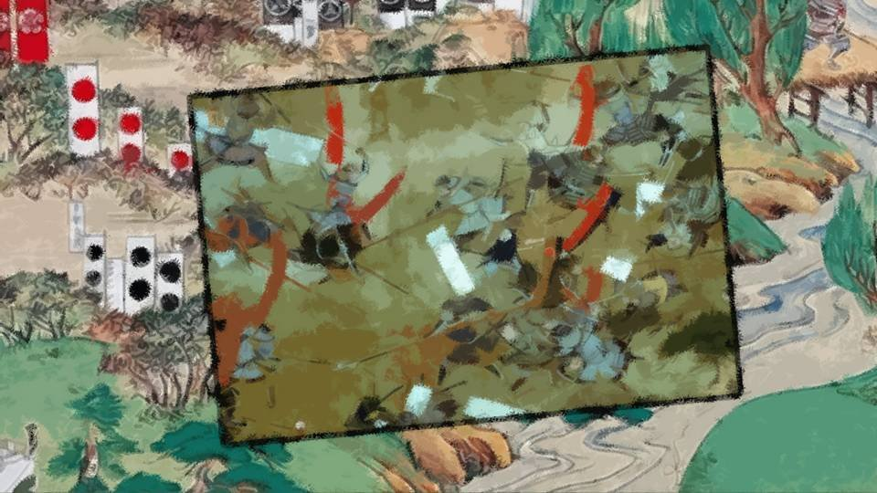
「そして数日の間、荒田の先住民と西洋人との間で内戦が起こりました。
これが祀耀340年四月の出来事です。
その数十年前に荒田集落で開発されたドローガを使った戦だったそうで、それは熾烈なものだったようです。
でも、本当に大変なのはこれからです」
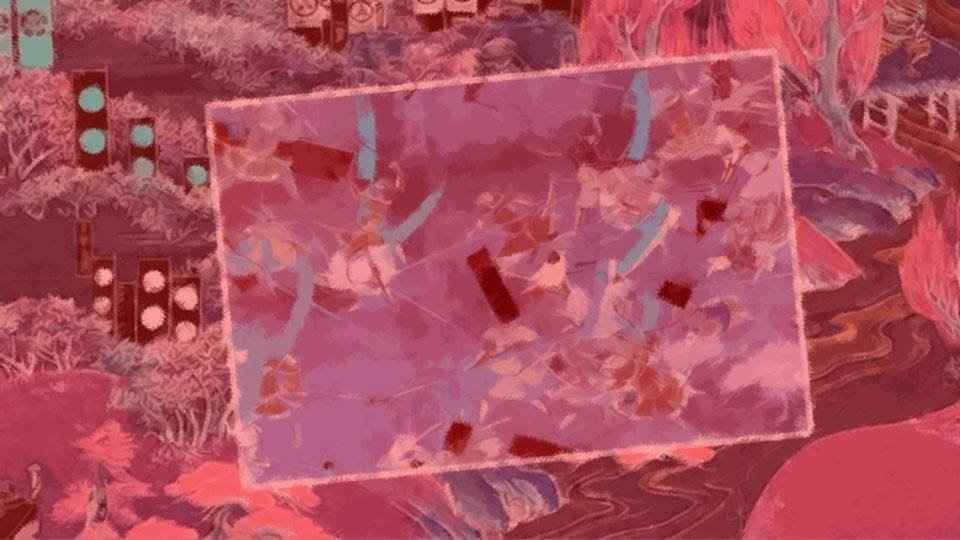
「戦で死亡した者の血を浴びた者が緑の目になり、無差別に人々を虐殺し始めたんです。
緑目の者たちは次第に増え、戦どころではなくなりました。
彼らは一時的に休戦することにし、協力して『緑の目』による虐殺を武力で阻止しました。
当時100名ほどだった荒田集落の人口は、この戦と事件で50名ほどまでに減ってしまいました」
「先住民も西洋人も気づきました。
『西洋人が荒田集落にやってきたから緑の目の呪いが起きたのではない』と。
『もし西洋人のせいなら、西洋人側に被害が及ぶはずない』と。
『であれば、きっとドローガがその原因になってしまったのだろう』と」
「いずれにしても緑目の者は排除するしかない――
これが彼らの共通認識となり、緑目の者は全員殺されました。
では、トミはどうなってしまったのでしょうか」
「彼女は生まれながらの翠眼。
当時まだ2歳だったトミは、ドローガを使った経験もなく、人を襲う気配もない。
人々は彼女の処遇を話し合いました」
「――ある者は言いました。
『トミはまだ何もしていない。だから、罰することなど意味のないことだ』
――またある者は言いました。
『何もしていない今だからこそ間に合う。今すぐ殺すべきだ』
――別の者は言いました。
『トミは呪いに打ち勝つ特別な存在なのではないか』」
「次第に彼女は特別視されるようになり、先程も言ったように大切に育てられました。
そして12年が経過。
ついに恐れていたことが起こったのです」
「トミは夜中に外に飛び出し、大声でのた打ち回りました。
その騒ぎに気づいた住人たちは『ついに始まってしまったのか』と怯えつつもトミを殺そうと武器を手に取りました。
でも、トミはのた打ち回りながら言うのです」
「『私は誰も殺したくない、でも殺さないと私が死んでしまう。
私の目が緑だから殺したくなるのであれば、こんな目はいらない』」
「そしてトミは――。
素手で自分の緑の目をえぐり出したのです。
そのおぞましい光景に住人たちは凍りつき、トミを殺そうとしていた者ですら後ずさりを始めました」
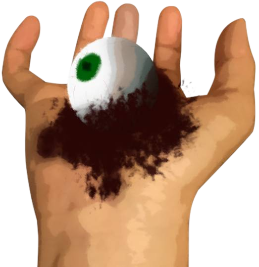
「『ほら、見て……
目、取れた……
取れたよ』
トミは耐え難い殺人欲求と目の痛みで悶えつつも、手のひらに自分の眼球を乗せて住人たちに見せました。
しかし、トミは続けて言います。
『でも、まだ殺したい。
目を取っても、まだ殺したい。
もう、ダメ』と」
「そしてトミは、えぐり出した目の穴に思いきり手を突っ込み、脳をかきまわして自害しました。
その壮絶な最期を目の当たりにした住人たちは、トミをこのまま呪われた者として葬っていいのか――
最後まで呪いに抗い続けたトミを敬うべきなのではないか」

「そして彼女の肉体はミイラとされ、住人たちの崇拝対象となりました。
名前もヴェルジという神の名がつけられました。
ちなみにヴェルジと言うのは、ポルトガル語で『緑色』と言う意味です」
「それからと言うもの、この荒田集落には2つの 掟 ができました。
1つは、もうドローガには手を出さないこと。
そしてもう1つは、女神ヴェルジを信仰し続けること」
「この本が執筆されたのは、祀耀354年の六月――
トミが死亡してから2年2か月後ですね」
「ヴェルジが信仰される背景は分かったけどさ…… どうしてそんなことだけで、この現代の住人は急に出てきたヴェルジを盲信し続けるんだ？ 私だって知らなかったんだぞ？」
「ヴェルジが信仰される背景は分かったけどさ…… どうしてそんなことだけで、この現代の住人は急に出てきたヴェルジを盲信し続けるんだ？ 私だって知らなかったんだぞ？」
「考えられる可能性は2つです。
長い時間を経て住人たちは子孫に信仰心を伝えることに失敗し、ヴェルジはただの祭具のようなものになり、廃棄に近い扱いで保管された。
そして最近になってミイラが発見され、住人たちはまた信仰するようになった」
「いやいや、そりゃ変だろ。 それだけでサクラさんがミイラにされたり、いきなりヴェルジを盲信したりするなんて……」
「いやいや、そりゃ変だろ。 それだけでサクラさんがミイラにされたり、いきなりヴェルジを盲信したりするなんて……」
「そうです、あまりにもこじつけが過ぎます。
そしてもう1つの可能性が出てくるわけですが……。
その……
ちょっと現実離れしすぎてて……」
「もう何もかも現実離れしてるだろ……。 今さら驚かないって」
「もう何もかも現実離れしてるだろ……。 今さら驚かないって」
「分かりました。じゃあ、これは私の推測なんですが……」
メモ帳を所持していない五島は目を閉じ、記憶を探るようにして顔をうつむける。
しかも、なかなか話そうともしない。
しかも、なかなか話そうともしない。
「五島、大丈夫か？」
「はい……。 話すにしても、やっぱり事柄を整理しないといけないので……」
五島が時間をかけて物事を整理するって、よっぽどのことじゃないか？
そして五島は目を閉じ顔をうつむけたまま、ゆっくりと口を動かし始めた。
「はい……。 話すにしても、やっぱり事柄を整理しないといけないので……」
五島が時間をかけて物事を整理するって、よっぽどのことじゃないか？
そして五島は目を閉じ顔をうつむけたまま、ゆっくりと口を動かし始めた。
「第四世代の存在――
そして……
寄生種のせいかもしれません……」
世代？ 寄生？
何のことだ？
今までそんな話、出てなかっただろうに……。
世代？ 寄生？
何のことだ？
今までそんな話、出てなかっただろうに……。
「私はここへ来る前に、色々な情報を集めたと言いましたが、ドローガについての情報も多少なりとも手に入りました。
第一世代：ドローガを使用した者
第二世代：第一世代の血を浴びた者
第三世代：第二世代の血を浴びた者」
第一世代：ドローガを使用した者
第二世代：第一世代の血を浴びた者
第三世代：第二世代の血を浴びた者」
「さらに、
第一世代：ドローガ使用直後のみ、人間離れした怪力を得られる
第二世代：桜の季節に特定条件下で予知能力を得られる
第三世代：緑色の目になる」
第一世代：ドローガ使用直後のみ、人間離れした怪力を得られる
第二世代：桜の季節に特定条件下で予知能力を得られる
第三世代：緑色の目になる」
「じゃあ、なつみとサクラさんは第二世代で、ヴェルジや夏菜は第三世代ってことになるのか？」
「私も第三世代に関する情報は『緑の目』ということしか分かりませんでした」
「私も第三世代に関する情報は『緑の目』ということしか分かりませんでした」
「だけどこの本によると、緑目の者は思春期程度の年齢になると人を殺そうとするようですね。
自分の意思では制御しきれないほどの殺意に見舞われる」
「ヴェルジは第三世代のままミイラとなり、現代までその肉体は存在し続けています。
実はドローガの世代別症状は、第三世代までしか分かっていません。
なぜなら、第三世代は発狂後に高確率で殺害されるか発狂死してしまうため、第四世代以降のデータが存在しないんです」
「ですから『第三世代の血を浴びたらどうなるのか』という疑問が残ります。
これを仮に第四世代としてみましょう」
「第三世代による人々の虐殺が発生する理由はよく分かりませんが、殺し合いのせいで、最終的に生き残るのは1人になると思われます。
第三世代で生き残った人は、その後どのようにして生きていくのか――。
いえ、1人になってしまった後、どのような社会を築いていくのか。
これは蜂やアリのようなものだと思ってください」
「おいおい、人間を蜂やアリと同じように考えるのか？」
「だって、さっき見てきたじゃないですか。
「だって、さっき見てきたじゃないですか。
video: 111.wmvヴェルジという『女王蜂』を守る働き蜂のような荒田集落の住人達――。
これが統制された虫のような社会と言わずに何と言いますか？」
video: 111.wmv「なぜこのような社会を築くのかは分かりません。
しかし、新村先輩があのチガ姉という人から聞いた情報も併せて考えてみると、ドローガを使用した者による本当の世代の役割が見えてくると思います」
video: 111.wmv第一世代：寄生および繁殖開始
第二世代：寄生範囲の拡張
第三世代：寄生宿主の選別
第四世代：繁殖の達成
このように考えてみたらどうでしょうか。
第二世代：寄生範囲の拡張
第三世代：寄生宿主の選別
第四世代：繁殖の達成
このように考えてみたらどうでしょうか。
video: 111.wmv「あ、あのさ、五島さん……。
いきなり寄生とか、繁殖の達成とか、よく分からないんだけど……」
「じゃあ人間ばかりに着目せずに、荒田桜の立場で考えてみてください。 どうして荒田桜は、ドローガという魅力的な物質を人間に供給できるように進化したのか。 必ず生物としての最終目的があるはずです」
「じゃあ人間ばかりに着目せずに、荒田桜の立場で考えてみてください。 どうして荒田桜は、ドローガという魅力的な物質を人間に供給できるように進化したのか。 必ず生物としての最終目的があるはずです」
video: 111.wmv「荒田桜は荒田地区独特の希少種でありながら、70年前まではこのエリアで繁殖していた。
しかし、桜の木は1本しか残っておらず、絶滅する運命にある。
どうして繁殖できないんでしょうか？
苗とか種とか使えば、もう一度桜をよみがえらせることだって可能なはずです」
「ちょ、ちょっと待ってくれ五島！
あの、私の頭じゃさすがについていけないからさ……
とりあえず背景よりも、この最悪な状況を打破する方法を知りたいんだけど……」
「あ、すみません……。 もし私の仮説……と言うか、推測が正しいなら、やることは2つです。 1つはヴェルジのミイラを完全に消滅させること。 そしてもう1つは荒田桜を完全に滅ぼすことです」
「あ、すみません……。 もし私の仮説……と言うか、推測が正しいなら、やることは2つです。 1つはヴェルジのミイラを完全に消滅させること。 そしてもう1つは荒田桜を完全に滅ぼすことです」
「ミイラと桜を……？」
「はい、住人たちの話を聞いたところだと、おそらくミイラがその肉体から何らかの物質―― 『恵み』と言われるものが放出され、住人たちを覚醒状態にしています。 その元凶となっているのが荒田桜です。 荒田桜は仲間を欲しがっています。 その仲間を増やすことはすなわち、荒田集落の滅亡とも言えます」
「はい、住人たちの話を聞いたところだと、おそらくミイラがその肉体から何らかの物質―― 『恵み』と言われるものが放出され、住人たちを覚醒状態にしています。 その元凶となっているのが荒田桜です。 荒田桜は仲間を欲しがっています。 その仲間を増やすことはすなわち、荒田集落の滅亡とも言えます」
「桜が仲間を増やしたがっているって……まさか……」
「そうです、荒田桜が人間を宿主にして繁殖する生態だとしたら――。 ドローガを使用した者の血を媒体として感染を広げ、最も宿主として適した者を探し当てる。 最後にその者を中心に周囲の者を皆、宿主とし、冬虫夏草のように肉体を乗っ取られ、桜の苗床になってしまう」
「そうです、荒田桜が人間を宿主にして繁殖する生態だとしたら――。 ドローガを使用した者の血を媒体として感染を広げ、最も宿主として適した者を探し当てる。 最後にその者を中心に周囲の者を皆、宿主とし、冬虫夏草のように肉体を乗っ取られ、桜の苗床になってしまう」
「五島……さすがに全然現実味がないよ……」
「分かってます、自分で妄想が過ぎると自覚しています。 ただ、これまでの経緯やドローガの性質、そして荒田桜の生態を総合してまとめると、これが1番しっくり来るんです」
「分かってます、自分で妄想が過ぎると自覚しています。 ただ、これまでの経緯やドローガの性質、そして荒田桜の生態を総合してまとめると、これが1番しっくり来るんです」
五島の推測を私なりにまとめるとこうだ。
荒田桜は人間に寄生する生物で、ドローガは荒田桜の種。
それを血液感染で最適な宿主を探し当て、その宿主を女王蜂（第三世代）のような立ち位置で周囲の者も桜の宿主にしてしまう。
つまりこのドローガによる世代間感染は、荒田桜が繁殖をするために必要なもの。
荒田桜は人間に寄生する生物で、ドローガは荒田桜の種。
それを血液感染で最適な宿主を探し当て、その宿主を女王蜂（第三世代）のような立ち位置で周囲の者も桜の宿主にしてしまう。
つまりこのドローガによる世代間感染は、荒田桜が繁殖をするために必要なもの。
「新村先輩、とりあえず今のは私の妄想だと思ってください。
無理やり理屈付けすることもできるんだなくらいに」
と、
と、
なつみがもぞもぞと動き出した。
気がついたのだろうか。
気がついたのだろうか。
外は月明かりで照らされていた。
すっかり雨が上がり、夜のすがすがしい風が吹き抜ける。
すっかり雨が上がり、夜のすがすがしい風が吹き抜ける。
しかし、風はすがすがしくても、大気がよどんでいる。
時間が経つにつれ、どこからか禍々しい気の流れを感じる。
これは、チガ姉や夏菜、なつみから感じたあの空気。
ヴェルジを盲信し、目的のためには手段を選ばない―― そんな人間たちが放つどす黒い空気だ。
時間が経つにつれ、どこからか禍々しい気の流れを感じる。
これは、チガ姉や夏菜、なつみから感じたあの空気。
ヴェルジを盲信し、目的のためには手段を選ばない―― そんな人間たちが放つどす黒い空気だ。
家々から少しずつ住人が姿を現し始めた。
能面と赤装束をまとい、集会場に入っていく。
こんな時間から何を始めるつもりなのだろうか。
まさか、今さらお母さんの三回忌をするなんてことはないだろうし。
能面と赤装束をまとい、集会場に入っていく。
こんな時間から何を始めるつもりなのだろうか。
まさか、今さらお母さんの三回忌をするなんてことはないだろうし。
こうして木の上から集落を眺めている間にも、私はなつみとの会話を思い返していた。
なつみとの会話で引っかかっていたことが何だったのか、ようやく気づいた。
なつみとの会話で引っかかっていたことが何だったのか、ようやく気づいた。
なつみは『注射していない』と言ったのに、あのような状態になっていた。
おそらく、あの女神様の血っていうのを注射するとチガ姉や夏菜のようになるのだろう。
だから、なつみが注射もなしであんな状態になったのは演技だと、最初は思っていたのだけど……。
おそらく、あの女神様の血っていうのを注射するとチガ姉や夏菜のようになるのだろう。
だから、なつみが注射もなしであんな状態になったのは演技だと、最初は思っていたのだけど……。
なつみは仲間と、認められたらしい。
そして幸太郎さんから女神様の血を受け取った。
そして幸太郎さんから女神様の血を受け取った。

私は幸太郎さんのことをなつみに話してないから、少なくとも幸太郎さんとの接触があったに違いない。
最低でも、幸太郎さんの名を知ることのできるコミュニケーションがあったはず。
最低でも、幸太郎さんの名を知ることのできるコミュニケーションがあったはず。
その時点で、なつみが注射をせずとも仲間だなんて、演技だけで騙し通せるものではない。
つまり、なつみは本当に注射なしであんな状態になった。
これが引っかかっていたこと――なつみが無条件で仲間と認められたことだ。
つまり、なつみは本当に注射なしであんな状態になった。
これが引っかかっていたこと――なつみが無条件で仲間と認められたことだ。
でも、それ以上のことはさっぱりだ。
五島と合流できれば、なつみを助ける方法も見つかるかもしれないが……。
五島と合流できれば、なつみを助ける方法も見つかるかもしれないが……。
――！！
際立って小さい2つの人影が集会場に近づいていく。
あれは……
際立って小さい2つの人影が集会場に近づいていく。
あれは……


五島と夏菜だ……！
やっぱり、夏菜はずっと五島についていたんだ。
五島は自分の足で歩いている。
どうやら怪我はなさそうだ。
でもあの2人だけ能面と赤装束がないな。
やっぱり、夏菜はずっと五島についていたんだ。
五島は自分の足で歩いている。
どうやら怪我はなさそうだ。
でもあの2人だけ能面と赤装束がないな。
夏菜は五島にナイフを向け、無理やり歩かせているようだ。
ということは、五島は脅されて歩いている、つまり、まだ正気なはずだ。
何とかして助け出したいけど、夏菜が相手では勝ち目はないし、不意打ちだって通用しないだろう。
やっぱり、隙を見て助け出すしか……。
ということは、五島は脅されて歩いている、つまり、まだ正気なはずだ。
何とかして助け出したいけど、夏菜が相手では勝ち目はないし、不意打ちだって通用しないだろう。
やっぱり、隙を見て助け出すしか……。
2人は集会場へ入っていった。
やっぱり集会場で何かが始まるんだ。
やっぱり集会場で何かが始まるんだ。
――！！
あれは……
あれは……

なつみか？
なつみはチガ姉と一緒だ。
チガ姉はいつの間にかなつみと合流していたらしい。
なつみはチガ姉と一緒だ。
チガ姉はいつの間にかなつみと合流していたらしい。
チガ姉はナイフを持っておらず、なつみも迷うこともなく集会場に向かっている。
これは五島とは決定的に違う。
なつみは自分の意思で集会場に向かっているのだ。
この集会場で何が始まるのだろうか。
これは五島とは決定的に違う。
なつみは自分の意思で集会場に向かっているのだ。
この集会場で何が始まるのだろうか。
なつみはともかく、五島まで連れて行かれるってことは……いい予感はしないな。
もしかしたら、五島に無理やり女神様の血とやらを注射するつもりなのかもしれない。
早いところ助け出さないと、手遅れになってしまう……！
もしかしたら、五島に無理やり女神様の血とやらを注射するつもりなのかもしれない。
早いところ助け出さないと、手遅れになってしまう……！
そう言えばサクラさんだけ見当たらないな。
もう集会場の中だろうか。
とにかく、動きが見えたら中の様子をうかがい、隙を見て五島を助け出し、なつみを元に戻す方法を探る。
もう集会場の中だろうか。
とにかく、動きが見えたら中の様子をうかがい、隙を見て五島を助け出し、なつみを元に戻す方法を探る。
何やら騒がしくなってきたな。
打楽器か鐘の音だろうか。
今までどんな儀式でもこんな音聞いたことない。
木から下り、中の様子を探ることにする。
打楽器か鐘の音だろうか。
今までどんな儀式でもこんな音聞いたことない。
木から下り、中の様子を探ることにする。

集会場の戸を少し開け、そっと中を覗いてみる。

大勢の能面と赤装束を着た住人達。
しかし、新村家の面々はいつも通りの格好だ。
しかし、新村家の面々はいつも通りの格好だ。
なつみと五島もいる。
五島は後ろ手に縛られており、拘束されている身のようだ。
なつみは拘束されず、新村家と同じように顔を並べている。
と、何やらぶらぶらと揺れるものが目に入る。
五島は後ろ手に縛られており、拘束されている身のようだ。
なつみは拘束されず、新村家と同じように顔を並べている。
と、何やらぶらぶらと揺れるものが目に入る。
ヴェルジのミイラが吊るされ、そのそばでたいまつが焚かれている。
私が新村家で見た時のように、ミイラからわずかに血が滴っている。
そう言えばあの血は、ミイラではなく赤装束の方に染み込んでいたわけだけど、何の意味があるのだろうか。
少なくとも偽物の血ではなさそうだ。
私が新村家で見た時のように、ミイラからわずかに血が滴っている。
そう言えばあの血は、ミイラではなく赤装束の方に染み込んでいたわけだけど、何の意味があるのだろうか。
少なくとも偽物の血ではなさそうだ。
この感じだと、新村家となつみがこのヴェルジ教とやらの幹部ってところか？
この耳をつく打楽器は、夏菜が叩いているようだ。
五島は前の方で正座させられ、幸太郎さんが五島を縛るロープを握っている。
そして、中央にはチガ姉。
この耳をつく打楽器は、夏菜が叩いているようだ。
五島は前の方で正座させられ、幸太郎さんが五島を縛るロープを握っている。
そして、中央にはチガ姉。
サクラさんはどうしたんだ……？
やっぱりサクラさんは大魔女だから、ここぞという時に登場するのだろうか。
やっぱりサクラさんは大魔女だから、ここぞという時に登場するのだろうか。
いずれにしても、私はこんな儀式見たことがない。
って言うか私のお母さんの三回忌はどうしたんだよ……。
私のお母さんの追善供養は……。
って言うか私のお母さんの三回忌はどうしたんだよ……。
私のお母さんの追善供養は……。
「ん……みなさん、今日は四月八日。
今日が何の日かは、ご存じのことと思います」
ついに真ん中に立っていたチガ姉が口を開いた。
なんでチガ姉が仕切ってるんだ？
こういうのって、大魔女であるサクラさんがやるもんじゃないのか？
ついに真ん中に立っていたチガ姉が口を開いた。
なんでチガ姉が仕切ってるんだ？
こういうのって、大魔女であるサクラさんがやるもんじゃないのか？
「ん……今日は、私の母……
新村サクラの一周忌――
そしてヴェルジ様が現れてちょうど1年経ちました」
サクラさんの一周忌！？
同じ日にヴェルジが現れたってことは、ヴェルジのミイラが発見されたってことか？
何なんだよこの偶然は……！
いや、偶然なんかで済まされるものじゃないだろ……！
サクラさんの一周忌！？
同じ日にヴェルジが現れたってことは、ヴェルジのミイラが発見されたってことか？
何なんだよこの偶然は……！
いや、偶然なんかで済まされるものじゃないだろ……！
「ん……それではお披露目致します。
女神となった新村サクラが今宵、みなさんの前に降臨いたします。
みなさん、新村サクラ改め『女神ブルーシャ』の姿をどうぞ、その目にお納めください」
何だ、新キャラか？
ヴェルジの次はブルーシャって……。
何だ、新キャラか？
ヴェルジの次はブルーシャって……。
って言うか、チガ姉の言うこと、おかしくないか？
昼間は一神教とか言っていたのに、これでは女神が2人じゃないか。
こんな設定ガバガバのいい加減な宗教なのに、やっていることだけは過激だ。
昼間は一神教とか言っていたのに、これでは女神が2人じゃないか。
こんな設定ガバガバのいい加減な宗教なのに、やっていることだけは過激だ。
夏菜がこれまた軽そうな人間を運んできた。
これも能面と赤装束をまとった軽そうな人間。
まるでミイラのように軽そうな人間。
今、ミイラになっている可能性がある人間って…… まさか……。
これも能面と赤装束をまとった軽そうな人間。
まるでミイラのように軽そうな人間。
今、ミイラになっている可能性がある人間って…… まさか……。
「ご覧ください！
生まれ変わったわが母の、新しい姿を！」
夏菜が運んできた人間の能面と赤装束がはぎ取られた。
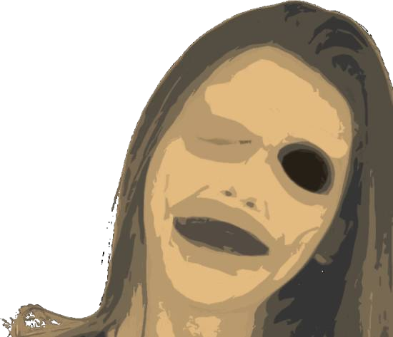
その姿は、まさにミイラだった。
チガ姉の話が本当なら、このミイラはサクラさんだ。
髪の生え方もまだ新しく生々しい。
サクラさんは1年前に死亡し、何らかの理由でミイラにされ、ブルーシャという名の女神として祀られている。
チガ姉の話が本当なら、このミイラはサクラさんだ。
髪の生え方もまだ新しく生々しい。
サクラさんは1年前に死亡し、何らかの理由でミイラにされ、ブルーシャという名の女神として祀られている。
住人達は 恭 しく頭を床につけ、念仏のような声があちこちから上がり始めた。
何なんだよ、こんなの完全に邪教じゃないか！
ともかく、この邪教の解明なんて後回しだ！ 今は五島を助け出す方法を考えないと……！
この集落は想像以上にやばいことになっている！
何なんだよ、こんなの完全に邪教じゃないか！
ともかく、この邪教の解明なんて後回しだ！ 今は五島を助け出す方法を考えないと……！
この集落は想像以上にやばいことになっている！
でも、これだけの衆人環視で、しかもチガ姉と夏菜もいる状態では、とても五島を助け出すことなんて……。
それに、こいつらは私がこの集落に紛れ込んでいるのを知っているくせに、警戒する様子が見られない。
私なんて、警戒するまでもない相手ということか？
それに、こいつらは私がこの集落に紛れ込んでいるのを知っているくせに、警戒する様子が見られない。
私なんて、警戒するまでもない相手ということか？
確かにチガ姉や夏菜に比べたら大したことないけど、ちょっとは強くなったつもりだ。
いつまでもそんな扱い方されていたら、さすがにプライドが傷つく。
何か騒ぎを起こし、混乱に乗じて五島を助け出すことができれば……。
いつまでもそんな扱い方されていたら、さすがにプライドが傷つく。
何か騒ぎを起こし、混乱に乗じて五島を助け出すことができれば……。
でも、どんな方法がいい？
火事を起こすか？
さっきまで大雨だったから大して燃えないだろうが、この中だけでも放火すれば、こいつら慌てふためくよな？
ミイラだって燃えてしまうかもしれないし。
火事を起こすか？
さっきまで大雨だったから大して燃えないだろうが、この中だけでも放火すれば、こいつら慌てふためくよな？
ミイラだって燃えてしまうかもしれないし。
ちょうどヴェルジの隣にはたいまつが置かれている。
何に使うのか知らないが、あれを倒すことができれば……。
何に使うのか知らないが、あれを倒すことができれば……。
「ん……しかしみなさん、残念なお知らせがあります」
チガ姉が声を上げると、住人達がゆっくりと頭を起こす。
チガ姉が声を上げると、住人達がゆっくりと頭を起こす。
「ん……実は、ブルーシャからはヴェルジ様のような『恵み』は放たれていません。
皆さんもお気づきでしょうが、このブルーシャの肉体からは『恵み』が放たれていないのです」
チガ姉がそこまで言うと、住人達がどよめき始める。
しかし、なつみや新村家の面々は表情を変えない。
チガ姉がそこまで言うと、住人達がどよめき始める。
しかし、なつみや新村家の面々は表情を変えない。
「ん……ヴェルジ様と違い、ブルーシャからは『恵み』がない。
恵みがないミイラは、もはやただの 屍 」
チガ姉の言っている意味がよく分からないけど、私が知っている言葉に置き換えてみる。
チガ姉の言っている意味がよく分からないけど、私が知っている言葉に置き換えてみる。
どうやらこのヴェルジ教が求める物は、女神が放つ『恵み』らしい。
しかもその『恵み』とは、人間に感知できるものであるらしいけど、私には何も分からない。
この頭がおかしくなったやつらにだけ感知できるってことか？
しかもその『恵み』とは、人間に感知できるものであるらしいけど、私には何も分からない。
この頭がおかしくなったやつらにだけ感知できるってことか？
「ん……この出来そこないの女神となってしまい、新村家の汚点となってしまったわが母……
ブルーシャを天に帰します」
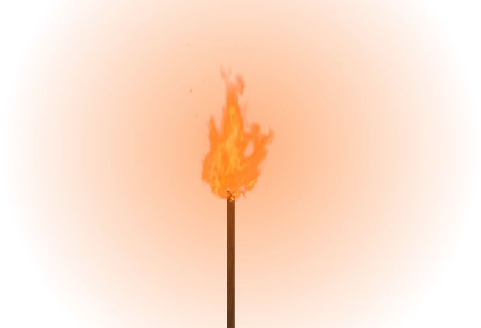
チガ姉はたいまつを手に取る。
お、おい、ちょっと待てよ……。
サクラさんを天に帰すって、もしかしてここで燃やすつもりか？
お、おい、ちょっと待てよ……。
サクラさんを天に帰すって、もしかしてここで燃やすつもりか？
私もボヤで混乱を起こすつもりだったけど、人間サイズの乾物を燃やしたらボヤどころじゃすまないだろ……！
私がたくらんでいたことよりももっと派手なことをするつもりらしい。
でも、それならさらに混乱に乗じて……。
私がたくらんでいたことよりももっと派手なことをするつもりらしい。
でも、それならさらに混乱に乗じて……。
いや、ダメだ。
チガ姉も夏菜も、私がここで乱入してくることを想定しているはずだ。
幸太郎さんもいるのだから、私の何手も先を読んで行動しているに違いない。
多分、今私がここにいることにも気づいている。
チガ姉も夏菜も、私がここで乱入してくることを想定しているはずだ。
幸太郎さんもいるのだから、私の何手も先を読んで行動しているに違いない。
多分、今私がここにいることにも気づいている。
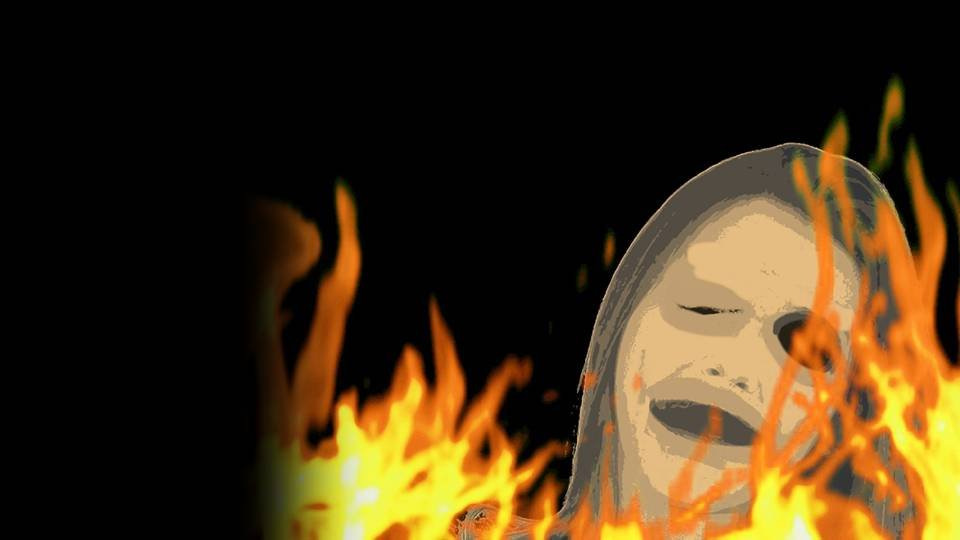
チガ姉は迷うことなくブルーシャに火をつける。
火はすぐにミイラの全身を覆いつくし、集会場に悪臭が満ち始める。
チガ姉は本当に自分の母親を躊躇することなく処分するつもりだ。
何だよ……サクラさんよりもあのヴェルジの方が大事なのかよ……。
そもそも、どうしてサクラさんはあんなことに……。
火はすぐにミイラの全身を覆いつくし、集会場に悪臭が満ち始める。
チガ姉は本当に自分の母親を躊躇することなく処分するつもりだ。
何だよ……サクラさんよりもあのヴェルジの方が大事なのかよ……。
そもそも、どうしてサクラさんはあんなことに……。
しかし、ミイラに薬品でも塗っていたのだろうか。
燃えてはいるけど、火の勢いはさほどではない。
代わりに、ものすごい悪臭が放たれている。
それなのに、住人もなつみも逃げ出そうとしない。
唯一五島だけが、苦しそうに咳き込んでいる。
燃えてはいるけど、火の勢いはさほどではない。
代わりに、ものすごい悪臭が放たれている。
それなのに、住人もなつみも逃げ出そうとしない。
唯一五島だけが、苦しそうに咳き込んでいる。
この臭いには覚えがある。
葬儀で使うファルシフィカソだ。
ファルシフィカソは熱を加えると強烈な悪臭が放たれ、それを嗅ぐと気分を悪くする。
葬儀で使うファルシフィカソだ。
ファルシフィカソは熱を加えると強烈な悪臭が放たれ、それを嗅ぐと気分を悪くする。
と、チガ姉がサクラさんに毛布のように大きな布を掛けた。
布は濡れていたのか、すぐに炎が消え、じめっとした黒い煙だけが立ち始めた。
熱は収まりつつあるが、あの黒い煙からの悪臭は収まる気配がない。
布は濡れていたのか、すぐに炎が消え、じめっとした黒い煙だけが立ち始めた。
熱は収まりつつあるが、あの黒い煙からの悪臭は収まる気配がない。
と、
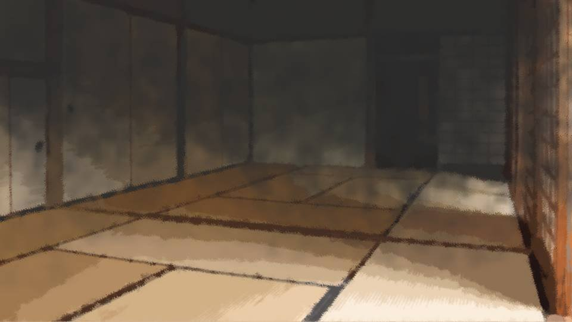
なつみがふらっと倒れた。
それを夏菜がすかさず支える。
やっぱりなつみにもこの臭いは堪えるようだ。
でも他のやつらは平気なのだろうか。
それを夏菜がすかさず支える。
やっぱりなつみにもこの臭いは堪えるようだ。
でも他のやつらは平気なのだろうか。
いや、平気ではないようだ。
夏菜もチガ姉も、咳き込みながら袖や布で顔を覆っている。
よく見ると、住人達も顔を伏せ、苦しそうな咳をしている。
夏菜もチガ姉も、咳き込みながら袖や布で顔を覆っている。
よく見ると、住人達も顔を伏せ、苦しそうな咳をしている。
だとしたら、これはチャンスだ！
今なら、五島を救い出すことができるかもしれない！
どうみてもこれはチガ姉たちも予想していないトラブルだ！
これ以上のチャンス、もうめぐって来ないだろう。
よく分からないが、サクラさんのミイラにはファルシフィカソが塗られていたらしい。
今なら、五島を救い出すことができるかもしれない！
どうみてもこれはチガ姉たちも予想していないトラブルだ！
これ以上のチャンス、もうめぐって来ないだろう。
よく分からないが、サクラさんのミイラにはファルシフィカソが塗られていたらしい。
ナイフを取り出し、五島の位置を確認する。
五島のすぐそばには幸太郎さんだけ。
さあ、チャンスは今しかない！
肺いっぱいに空気を取り込み、息を止める。
五島のすぐそばには幸太郎さんだけ。
さあ、チャンスは今しかない！
肺いっぱいに空気を取り込み、息を止める。
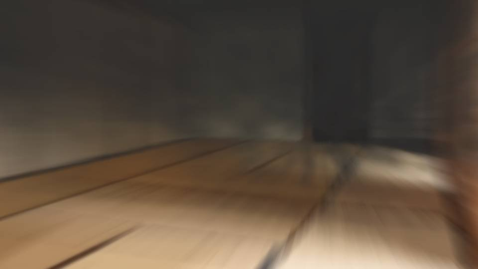
黒々とした霧の中を五島の方をめがけて走る。
ここから五島までの距離は15メートル程度。
3秒もかからない距離だ。
ここから五島までの距離は15メートル程度。
3秒もかからない距離だ。
問題は五島に私の存在を知らせ、なおかつ五島を連れて安全な場所まで避難することだ。
避難を完了させるまでの間、五島の協力的な姿勢も必要だ。
この1つ1つの行動に素早い動作が求められるが、五島の頭の回転の速さを信じるしかない……！
避難を完了させるまでの間、五島の協力的な姿勢も必要だ。
この1つ1つの行動に素早い動作が求められるが、五島の頭の回転の速さを信じるしかない……！
――つかんだ！
これは五島の腕に間違いない……！
「――せ……
げほっげほ！」
「五島、すぐに逃げるぞ」
五島に耳打ちし、逃走を促す。
「五島、すぐに逃げるぞ」
五島に耳打ちし、逃走を促す。
五島もすぐに状況を飲みこめたらしく、後ろ手を縛られたまま立ち上がる。
よし！ あとは集会場から出て、どこか物陰に隠れれば……！
――！！
チガ姉だってバカじゃない。
このボヤが起これば、私がどんな行動をするかくらい読めるだろう。
そして、チガ姉ににらまれた瞬間、私の足が凍ってしまうことも――。
チガ姉だってバカじゃない。
このボヤが起これば、私がどんな行動をするかくらい読めるだろう。
そして、チガ姉ににらまれた瞬間、私の足が凍ってしまうことも――。
「ん……そう、春花の仕業ね。お母さんのミイラに細工をしたのは」
「な、何のことだよ……」
「ん……その子、五島ちゃんは大事なお客様なの。 勝手に連れ出したらダメでしょ？」
「う、うるさい！」
「な、何のことだよ……」
「ん……その子、五島ちゃんは大事なお客様なの。 勝手に連れ出したらダメでしょ？」
「う、うるさい！」
五島の前に立ち、ナイフをチガ姉に向ける。
もう、話し合いの余地などない。
本当に殺すつもりでやらなくては、こっちがやられる。
切り傷の1つでもつけられるか怪しいが、だからと言って五島をおめおめと渡すわけにはいかない。
もう、話し合いの余地などない。
本当に殺すつもりでやらなくては、こっちがやられる。
切り傷の1つでもつけられるか怪しいが、だからと言って五島をおめおめと渡すわけにはいかない。
「五島、隙見て逃げろ……！」

「げほ……そんなこと、できません……」
「いいか五島、よく聞け！ このままだと誰1人助からないんだ！ 今は1人でも多く助かる方法を考えろ！ お前なら分かるだろ！？」
「で、でも……」
「いいか五島、よく聞け！ このままだと誰1人助からないんだ！ 今は1人でも多く助かる方法を考えろ！ お前なら分かるだろ！？」
「で、でも……」
「ん……春花、あまり作戦会議をさせてあげられる時間はないわ」
「くそ……！」
「くそ……！」
ナイフをチガ姉に向けて振り下ろす。
しかし、ナイフは当然のように空を切り、チガ姉は最小限の動きで鮮やかにかわす。
だがそんなの、想定済みだ！
しかし、ナイフは当然のように空を切り、チガ姉は最小限の動きで鮮やかにかわす。
だがそんなの、想定済みだ！
そのままの勢いで大きく回し蹴りを放つ。
大回しでの蹴りは左右への回避を許さない。
大回しでの蹴りは左右への回避を許さない。
チガ姉は予想通り、後ろへ身を下げる。
そして再度チガ姉に近づきナイフに大きく水平な弧を描かせる。
そして再度チガ姉に近づきナイフに大きく水平な弧を描かせる。
これも左右の回避は許さず、更にチガ姉を後ろに下げさせる。
これを繰り返し、少しでもチガ姉と五島の距離を離すのだ。
そうすることで五島に逃げる隙が生まれるはず。
五島――！ お前は絶対に逃げろ……！
そうすることで五島に逃げる隙が生まれるはず。
五島――！ お前は絶対に逃げろ……！
「ぐ……！」
チガ姉はナイフを握るようにして素手で受け止めた。
チガ姉はナイフを握るようにして素手で受け止めた。
「ん……春花、ナイフの研ぎが甘いわ。振ってても刃こぼれが目立つわよ？」
ナイフはサクラさんに習った通り研いだし、昨夜だって手入れをした！
チガ姉は遠まわしに私の腕を見下しているのだ……！
ナイフはサクラさんに習った通り研いだし、昨夜だって手入れをした！
チガ姉は遠まわしに私の腕を見下しているのだ……！
「くそ……！」
チガ姉の手からナイフを抜こうとしても、まるで強力な磁石で吸いつけられているかのように動かない。
チガ姉の手からナイフを抜こうとしても、まるで強力な磁石で吸いつけられているかのように動かない。
「ん……春花、相手が刃物を持っていると分かっているなら、滑り止めの炭酸マグネシウムの粉を用意すること。
こうやって粉をつけた手でナイフを握ると、簡単には動かないの」
「くっそ……！」
「ん……でも春花に粉は必要なかったかしら？ 春花には振られたナイフをつかめるほどの技量はないものね」
「なんだと……！？」
「ん……ほら、力やスピードだけに頼ってると…… 足元すくわれるわよ？」
「ん……でも春花に粉は必要なかったかしら？ 春花には振られたナイフをつかめるほどの技量はないものね」
「なんだと……！？」
「ん……ほら、力やスピードだけに頼ってると…… 足元すくわれるわよ？」
――！！
『足元をすくわれる』というセリフの直後、私の背は床についていた。
何をされたのか分からなかったが、くるぶしの辺りに軽い痛みを感じる。
足払いをされたのか……？
『足元をすくわれる』というセリフの直後、私の背は床についていた。
何をされたのか分からなかったが、くるぶしの辺りに軽い痛みを感じる。
足払いをされたのか……？
「ん……春花、昼にも言ったけど、私は暴力が嫌いなの。
だから春花を怪我させるつもりはないけど……
きっと夏菜は手加減しないわよ？」
夏菜……！？
五島の方を振り返った時には、もう手遅れだった。
夏菜……！？
五島の方を振り返った時には、もう手遅れだった。
「ほら五島ちゃん、立てる？
お母さんの身体に誰かが薬を塗ったみたいなの」
夏菜が五島に甲斐甲斐しく肩を貸し、立たせようとしている。
しかし五島の顔は怯え、私に助けを求めるように横目で視線を送る。
夏菜…… 五島に…… 触るな！
夏菜が五島に甲斐甲斐しく肩を貸し、立たせようとしている。
しかし五島の顔は怯え、私に助けを求めるように横目で視線を送る。
夏菜…… 五島に…… 触るな！
夏菜に向かって切りかかる。
五島に触るんじゃない……！
五島に何かしたら許さない……！
五島に触るんじゃない……！
五島に何かしたら許さない……！
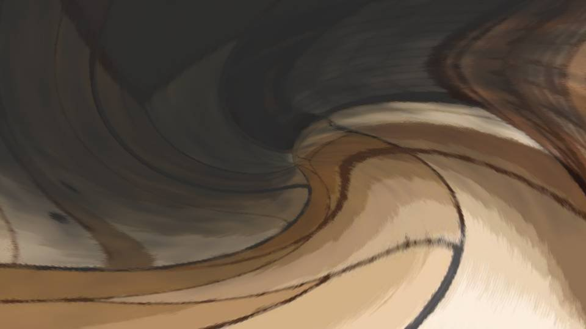
「ぐはあ……」
切りかかったはずなのに、気がつくとおかしな姿勢で床に倒れ込んでいた。
人中（鼻と口の間）、左の独鈷（耳の裏）、みぞおち、喉仏、右腹部に強い痛みを感じる。
あの一瞬で、代表的な人間の急所を的確に殴られたらしい。
視界がぐらぐらと揺れ、脚に力が入らない。
切りかかったはずなのに、気がつくとおかしな姿勢で床に倒れ込んでいた。
人中（鼻と口の間）、左の独鈷（耳の裏）、みぞおち、喉仏、右腹部に強い痛みを感じる。
あの一瞬で、代表的な人間の急所を的確に殴られたらしい。
視界がぐらぐらと揺れ、脚に力が入らない。
「五島ちゃんは大事なお客様だよ？ 邪魔したらダメだって！」
「ん……春花、言ったでしょ？ 夏菜は容赦しないって……」
2人が私を見下ろす。
それもいつも通りの、ごくごく普通の表情で。
2人が私を見下ろす。
それもいつも通りの、ごくごく普通の表情で。
「せ、先輩……うぐうう……」
恐怖におののく五島の目からついに涙が流れ出した。
もう、五島にもこれ以上冷静な判断はできないだろう。
もう、私にも抵抗する力は残されていない。
もう、これまでか……？
恐怖におののく五島の目からついに涙が流れ出した。
もう、五島にもこれ以上冷静な判断はできないだろう。
もう、私にも抵抗する力は残されていない。
もう、これまでか……？

突然、何者かが乱入し、チガ姉と夏菜に向かって大きな刃物を振り回した。
しかしそれをチガ姉と夏菜は間一髪でかわす。
しかしそれをチガ姉と夏菜は間一髪でかわす。
video: 桜.wmv新村家の桜の木が少しは乾いたのだろうか。桜の花が風にあおられて集会場に入ってくる。
桜の花とともに現れたのは、白般若の面に、白い羽織ものを着た怪人。
何だこいつ、仲間割れか？
集落の誰かがこの姉妹に攻撃を仕掛けたのだ。
桜の花とともに現れたのは、白般若の面に、白い羽織ものを着た怪人。
何だこいつ、仲間割れか？
集落の誰かがこの姉妹に攻撃を仕掛けたのだ。
video: 桜.wmv「ん……誰かしら……？」
「お姉ちゃん、この人強いよ」
「お姉ちゃん、この人強いよ」
video: 桜.wmv

チガ姉と夏菜はナイフを取り出した。
つまり、この姉妹が本気になったということだ。
にしてもまさかこいつ、この姉妹に1人で対抗する気か？
そんなのどう考えたって……。
つまり、この姉妹が本気になったということだ。
にしてもまさかこいつ、この姉妹に1人で対抗する気か？
そんなのどう考えたって……。
video: 桜.wmv「ぐ……」
「痛い……！」
登場の時の攻撃はあいさつ代わりだったのだろうか。
チガ姉と夏菜は防ぐ間もなく乱入した白般若の峰打ちを受け、片膝をつく。
「痛い……！」
登場の時の攻撃はあいさつ代わりだったのだろうか。
チガ姉と夏菜は防ぐ間もなく乱入した白般若の峰打ちを受け、片膝をつく。
video: 桜.wmv――と、白般若がちらりとこちらに顔を向けた。
これってもしかして…… 逃げろって言ってるのか！？
一体誰なんだ！？ 集落の中にまだ正気なやつがいたのか！？
しかも、チガ姉と夏菜に対抗できるほどの力を持ったやつが！
これってもしかして…… 逃げろって言ってるのか！？
一体誰なんだ！？ 集落の中にまだ正気なやつがいたのか！？
しかも、チガ姉と夏菜に対抗できるほどの力を持ったやつが！
video: 桜.wmv「五島、逃げるぞ！」
video: 桜.wmvようやく動くようになった脚で立ち上がり、五島を抱えて出口に向かう。
「春花ちゃん、逃げないで！」
「ん……春花！ ダメよ！」
しかし私はその声を無視して集会場を出た。
「春花ちゃん、逃げないで！」
「ん……春花！ ダメよ！」
しかし私はその声を無視して集会場を出た。
video: 桜.wmvきっとあの人が足止めをしてくれるはずだ！
でも五島の体調ではそんなに遠くまではいけない。
どこか、少しでも時間を稼げる場所があれば……！
でも五島の体調ではそんなに遠くまではいけない。
どこか、少しでも時間を稼げる場所があれば……！

 video: 雨1.wmv
video: 雨1.wmv雷光だけが頼りだ。
すっかり日が落ち、暗雲のせいでいつもにもまして暗い夜。
時折空間を切り裂く雷光だけが、道を示してくれる唯一の光だ。
荒田集落の入り口に到着する頃には、もう20～21時くらいになっていた。
すっかり日が落ち、暗雲のせいでいつもにもまして暗い夜。
時折空間を切り裂く雷光だけが、道を示してくれる唯一の光だ。
荒田集落の入り口に到着する頃には、もう20～21時くらいになっていた。
video: 雨1.wmv正確な時間は分からないが、山籠のおかげで私の体内時計はかなり精度が高いはず。
20～21時という範囲を見込んでおけば、まず間違いはない。
20～21時という範囲を見込んでおけば、まず間違いはない。
video: 雨1.wmvできるだけ落ち着いて行動したつもりだ。
怒りに任せて動きそうになるのを、最後の自制心が思いとどまらせた。
その自制心の正体とは―― 恐怖だった。
怒りに任せて動きそうになるのを、最後の自制心が思いとどまらせた。
その自制心の正体とは―― 恐怖だった。
video: 雨1.wmv怒りに任せてなつみたちを助け出そうとすれば、チガ姉や夏菜に返り討ちされてしまうのがオチだ。
そうならないように、私は恐怖を味方につけた。
そうならないように、私は恐怖を味方につけた。
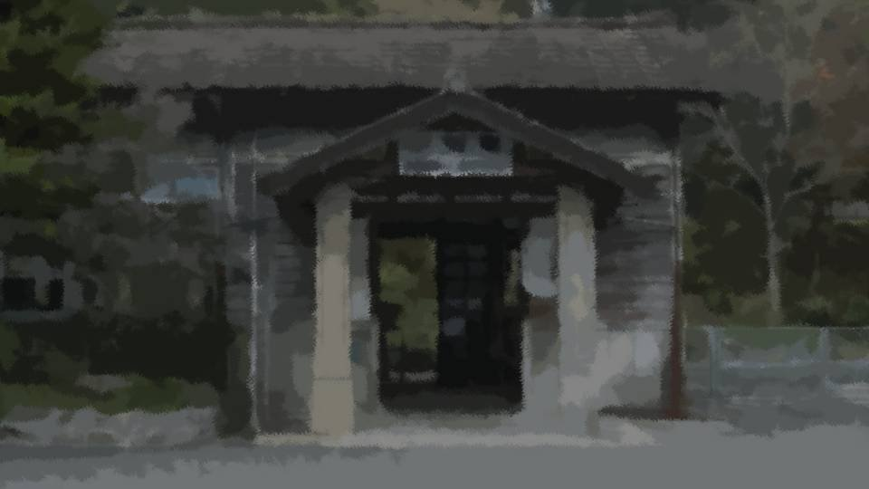
video: 雨1.wmvあの時、最初に私がとった行動は、暗くなる前に荒田駅周辺をくまなくチェックすることだった。
なつみたちは駅付近にいるのではないか―― まずはその可能性から検証し、駅のホーム―― 電車の屋根―― 資材倉庫―― 付近の木々の上―― 全て調べた。
日が暮れるまで調べ尽くし、なつみたちは荒田集落へ連れて行かれたと判断した。
山道を歩く間も、周囲の気配を探ることに気力を惜しまなかった。
なつみたちは駅付近にいるのではないか―― まずはその可能性から検証し、駅のホーム―― 電車の屋根―― 資材倉庫―― 付近の木々の上―― 全て調べた。
日が暮れるまで調べ尽くし、なつみたちは荒田集落へ連れて行かれたと判断した。
山道を歩く間も、周囲の気配を探ることに気力を惜しまなかった。
チガ姉や夏菜が背後に回り込んでくるなど、もう2度とあってはならない。
今度背後をとられたら命の保証はない。
あの2人は、私の露骨な殺気を感じ取るだろう。
今度背後をとられたら命の保証はない。
あの2人は、私の露骨な殺気を感じ取るだろう。
暗闇で道が分からなくなったら次の雷を待ち、できるだけ遠くを見渡しつつ先を急いだ。
もし雷がなければ、私は集落にたどり着けなかっただろう。
もし雷がなければ、私は集落にたどり着けなかっただろう。
 video: 雨1.wmv
video: 雨1.wmv木に隠れ、じっと集落の様子を見守る。
相変わらず人の気配がない。
相変わらず人の気配がない。
video: 雨1.wmvようやく雨が小降りになってきた。
朝からずっと降りっぱなしで、私の耳がすっかり雨音に慣れてしまっていた。
その雨音がなくなると、今度は『静寂の音』が耳につき始める。
森という擬態語がぴったりな静寂の音。
朝からずっと降りっぱなしで、私の耳がすっかり雨音に慣れてしまっていた。
その雨音がなくなると、今度は『静寂の音』が耳につき始める。
森という擬態語がぴったりな静寂の音。
video: 雨1.wmv雨音がなくなるにつれ、私の五感も鋭敏になっていく。
雨でさえぎられていた人の気配が、徐々に感じ取れるようになる。
………… いる。
今この集落に、人がいる。
たくさんいる。
雨でさえぎられていた人の気配が、徐々に感じ取れるようになる。
………… いる。
今この集落に、人がいる。
たくさんいる。
video: 雨1.wmvん？ あれは――。
video: 雨1.wmv
新村家から、幸太郎さん、チガ姉が出てきた。
そして、
そして、
能面と古ぼけた赤装束をまとった人を2人で運び出している。
人間にしてはずいぶんと軽そうだし、ヴェルジのミイラだろう。
どこへ運ぶ気だ……？
人間にしてはずいぶんと軽そうだし、ヴェルジのミイラだろう。
どこへ運ぶ気だ……？
2人はこちらではなく、真逆の方へ向かっていった。
あっちは墓地広場、あるいは集会場の方だ。
私の存在に気づいてはいないようだ。
あっちは墓地広場、あるいは集会場の方だ。
私の存在に気づいてはいないようだ。
まずはこれからの行動だ。
今から新村家に潜入し、なつみたちがいないか確かめる。
ついでに、少しでもいいから食事をとり、この濡れた服も着替える。
今から新村家に潜入し、なつみたちがいないか確かめる。
ついでに、少しでもいいから食事をとり、この濡れた服も着替える。
今はさほど疲れを感じないが、朝にウサギの肉を食べたきりだ。
緊張が途切れてしまえば、身体に疲れがどっと押し寄せてくるに違いない。
休む時間もその内容も、今から細かく決めておく。
緊張が途切れてしまえば、身体に疲れがどっと押し寄せてくるに違いない。
休む時間もその内容も、今から細かく決めておく。
でも、ここで気になるのはサクラさんと夏菜の存在だ。
サクラさんと夏菜は新村家から出てこなかった。
つまり、2人は別行動――別の何かをしているということだ。
あり得るとすれば、なつみと五島の見張りだろうか。
私がなつみたちを助けに来るなんて、予想しているだろう。
サクラさんと夏菜は新村家から出てこなかった。
つまり、2人は別行動――別の何かをしているということだ。
あり得るとすれば、なつみと五島の見張りだろうか。
私がなつみたちを助けに来るなんて、予想しているだろう。
ってことは、私はここへ釣られてきたってことか？
なつみたちを餌にして、私をここへおびき寄せるために……？
それなら、電車で私を襲えばよかっただけの話だ。
何か意図があるのだろうか。
こんなこと考えたって分かるはずがないが……。
なつみたちを餌にして、私をここへおびき寄せるために……？
それなら、電車で私を襲えばよかっただけの話だ。
何か意図があるのだろうか。
こんなこと考えたって分かるはずがないが……。
まずは予定通り新村家に潜入する。
夏菜にだけは鉢合わせないよう、これまで以上に注意を払いつつ、なつみたちを探し出す。
台所に入った時に一口でもいいから食事をとり、2階に入ったら素早く服を替える。
もしなつみたちがいなければ、これらの行動を5分以内に終え、すぐに新村家から脱出し、次の場所を捜索する。
夏菜にだけは鉢合わせないよう、これまで以上に注意を払いつつ、なつみたちを探し出す。
台所に入った時に一口でもいいから食事をとり、2階に入ったら素早く服を替える。
もしなつみたちがいなければ、これらの行動を5分以内に終え、すぐに新村家から脱出し、次の場所を捜索する。
なつみたちがいた場合は、速やかに集落から脱出する。
3人で徒歩での移動になるのは、かなりのリスクではあるが……。
3人で徒歩での移動になるのは、かなりのリスクではあるが……。
道ではなく、集落を取り囲む木々の中を通って侵入する。
雨が止み、気配を感じ取りやすくなったのは、相手にとっても同じ。
雨が止み、気配を感じ取りやすくなったのは、相手にとっても同じ。

――新村家の敷地への侵入は比較的容易だった。
容易と言うよりは、あっけなかったと言うべきか？
しかし、ここで玄関や縁側から入り込むのは危険だ。
なぜなら、家の明かりがついているからだ。
2階にある私の部屋の窓から侵入することにする。
鍵が開いていればいいが……。
容易と言うよりは、あっけなかったと言うべきか？
しかし、ここで玄関や縁側から入り込むのは危険だ。
なぜなら、家の明かりがついているからだ。
2階にある私の部屋の窓から侵入することにする。
鍵が開いていればいいが……。
またしても、容易な侵入だった。
早くこの濡れた服は着替えなくては。
早くこの濡れた服は着替えなくては。
部屋の中で昼間と違うのは、ヴェルジのミイラがないことだけだ。
やっぱり、さっき幸太郎さんたちが持ち出したのは、ヴェルジのミイラに間違いなさそうだ。
ミイラから 滴 っていた血や、血濡れたスマホは昼間のままだ。
私の荷物にも手をつけられた様子がない。
やっぱり、さっき幸太郎さんたちが持ち出したのは、ヴェルジのミイラに間違いなさそうだ。
ミイラから 滴 っていた血や、血濡れたスマホは昼間のままだ。
私の荷物にも手をつけられた様子がない。

素早く着替え、2階を捜索する。
各部屋を覗くだけの作業だ。
気を緩めたつもりはないが、2階の捜索は30秒で終了した。
どういうわけか人の気配がないから、慎重になろうという気もなくなってしまったのだ。
各部屋を覗くだけの作業だ。
気を緩めたつもりはないが、2階の捜索は30秒で終了した。
どういうわけか人の気配がないから、慎重になろうという気もなくなってしまったのだ。
――1階にも、人の気配がない。
でも、居間にはある匂いが漂っている。
それは、私が危惧していた緊張感を緩めてしまう匂いだ。
でも、居間にはある匂いが漂っている。
それは、私が危惧していた緊張感を緩めてしまう匂いだ。
通常、人間は緊張を感じている間、あらゆる本能的欲求が断ち切られる。
例えば戦場で致命傷を負った場合、食欲も睡眠欲も性欲も極限まで抑えつけられ、とにかく生き延びることだけを本能は求める。
例えば戦場で致命傷を負った場合、食欲も睡眠欲も性欲も極限まで抑えつけられ、とにかく生き延びることだけを本能は求める。
この時、本能的欲求はもちろん、場合によっては骨折のような大けがですら忘れてしまうほど、人体は生き延びることを求める。
痛みが邪魔で歩けなくなると、それは生き延びる上での阻害要因でしかないのだ。
だから、人体はその阻害要因――痛みも本能的欲求も全てシャットアウトさせる。
痛みが邪魔で歩けなくなると、それは生き延びる上での阻害要因でしかないのだ。
だから、人体はその阻害要因――痛みも本能的欲求も全てシャットアウトさせる。
今の私がまさにその状態。
いや……正確にはさっきまでその状態だった。
本能的欲求を強制的に誘発させる方法があるのだ。
性欲なら官能的な情景を、睡眠欲なら柔らかいベッドを目の前に見せつける、あるいはアロマを嗅がせることで緊張状態が緩む。
いや……正確にはさっきまでその状態だった。
本能的欲求を強制的に誘発させる方法があるのだ。
性欲なら官能的な情景を、睡眠欲なら柔らかいベッドを目の前に見せつける、あるいはアロマを嗅がせることで緊張状態が緩む。
そして食欲なら、食欲をかきたて、唾液腺を刺激する耽美な香りを嗅ぐことでも、同様の効果が得られる。
まさか居間にこれほどまでにかぐわしく芳醇な食事の匂いが立ち込めているとは予想外だった。
まさか居間にこれほどまでにかぐわしく芳醇な食事の匂いが立ち込めているとは予想外だった。
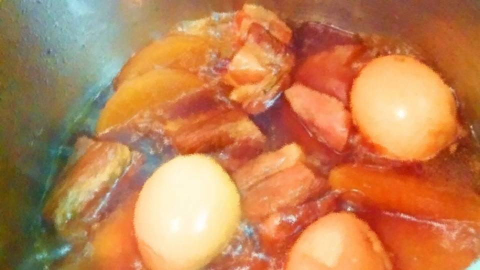
居間のテーブルにはカセットコンロと大きな鍋が置かれており、そこから熱い湯気が昇り立っている。
これは、肉と卵、野菜の煮物のようだ。
シンプルな料理であるが、今朝から何も食べておらず、走り回り雨に打たれ、体力を失っている私には魅力的なものだ。
これは、肉と卵、野菜の煮物のようだ。
シンプルな料理であるが、今朝から何も食べておらず、走り回り雨に打たれ、体力を失っている私には魅力的なものだ。
何よりも、私は2年間もまともに調理された食事を口にしていない。
まして、このような醤油や砂糖の香りがする料理なんて――。
口に唾液が充満し、腹の虫が悲鳴を上げ始める。
だが私に慎重な行動をさせていた感情が、それを制する。
まして、このような醤油や砂糖の香りがする料理なんて――。
口に唾液が充満し、腹の虫が悲鳴を上げ始める。
だが私に慎重な行動をさせていた感情が、それを制する。
私を制した感情とは、やはり恐怖だった。
この料理にかぶりつけと命じる本能を、恐怖が抑圧する。
だって、どう考えてもおかしい。
笑い出してしまいそうなくらいにシュールな光景。
誰もいないこの家に、どうして熱々の煮物が居間に置かれているんだよ……。
どう考えたって、私をはめるための罠じゃないか……。
この料理にかぶりつけと命じる本能を、恐怖が抑圧する。
だって、どう考えてもおかしい。
笑い出してしまいそうなくらいにシュールな光景。
誰もいないこの家に、どうして熱々の煮物が居間に置かれているんだよ……。
どう考えたって、私をはめるための罠じゃないか……。
そうだ、これは罠だ！
どんなに飢えていたって毒を食うバカはいない。
どんなに飢えていたって毒を食うバカはいない。
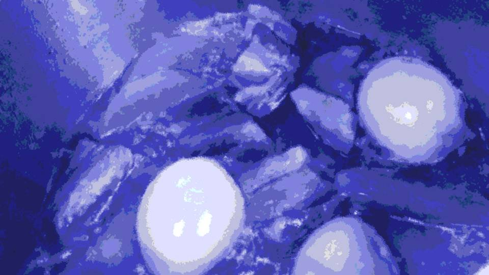
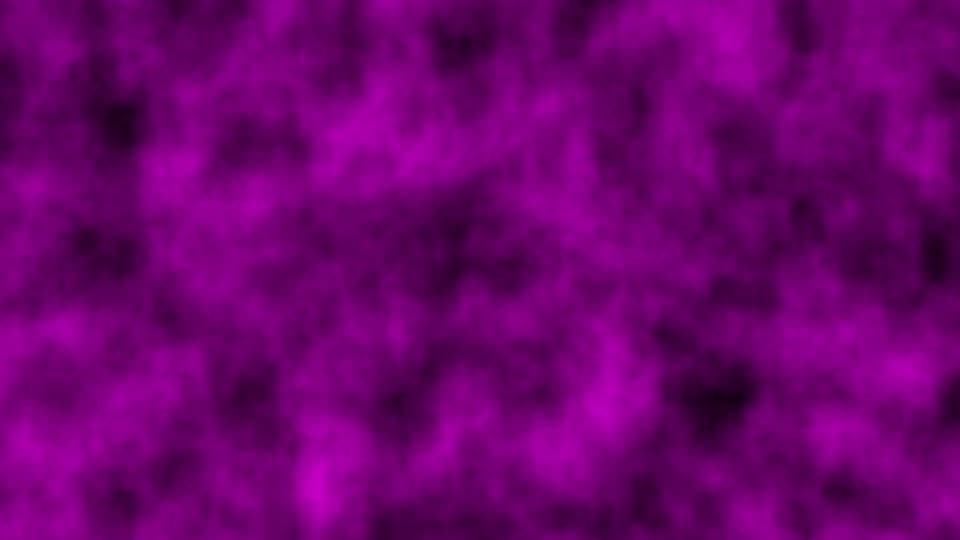
video: 毒々しい霧.wmvこの煮物を罠と認識した瞬間、たちまち私の目には毒の満ちた鍋にしか見えなくなった。
鍋から醤油に似た蟲くさい悪臭を放ち、獣の死肉片や、胎児になり損ねた単細胞と言ったグロテスクな具材たちが顔をのぞかせる。
そう考えると、この家にあるあらゆる食材にも手をつけられない。
鍋から醤油に似た蟲くさい悪臭を放ち、獣の死肉片や、胎児になり損ねた単細胞と言ったグロテスクな具材たちが顔をのぞかせる。
そう考えると、この家にあるあらゆる食材にも手をつけられない。
video: 毒々しい霧.wmv
残念だが食事はあきらめるしかない。
なに、1日や2日食わなくても死にやしないし、いざとなればその辺の野草や小動物でも獲ればいい。
と……。
なに、1日や2日食わなくても死にやしないし、いざとなればその辺の野草や小動物でも獲ればいい。
と……。
廊下から、ひたひたと足音が聞こえる。
反射的にナイフを構え、居間のふすまの方を向く。
上にも後ろにも気をまわしつつ、これから来る何者かに備える。
夏菜か？ それとも、他の誰かか？
今から戦いが始まるかもしれない。
私が1分後に生きている保証もなくなった。
上にも後ろにも気をまわしつつ、これから来る何者かに備える。
夏菜か？ それとも、他の誰かか？
今から戦いが始まるかもしれない。
私が1分後に生きている保証もなくなった。
だけど、その足音の主から殺気が感じられない。
チガ姉とも夏菜とも違う、何かもっとこう…… 普通の気配だ。
おそらく、あまり強い相手ではないだろう。
でももし相手が猟銃を持っていたらアウトだ。
気は緩めない。
チガ姉とも夏菜とも違う、何かもっとこう…… 普通の気配だ。
おそらく、あまり強い相手ではないだろう。
でももし相手が猟銃を持っていたらアウトだ。
気は緩めない。
…………
…………
え？
何だ……？
この光景は……。
何だ……？
この光景は……。
なつみにそっくりな――
いや、服装まで全くなつみと同じ。
まさか、本物の……？
だとしたら、どうしてなつみが自由に歩き回っているんだ？
何なんだよ、これ……。
まさか、本物の……？
だとしたら、どうしてなつみが自由に歩き回っているんだ？
何なんだよ、これ……。
「やっぱり春花も来たんだね！」
その声は、穏やかで明るく、怯える様子がない。
私は……何か勘違いしていたのか？
てっきり、なつみたちは連れ去られたと思ったけど、そうじゃないのか……？
その声は、穏やかで明るく、怯える様子がない。
私は……何か勘違いしていたのか？
てっきり、なつみたちは連れ去られたと思ったけど、そうじゃないのか……？
「春花、お腹すいてるでしょ？
今日は山籠から戻ってあちこち走り回って、ろくにご飯も食べてないよね？
私にはちゃんと分かるんだから！」
なつみには私を警戒する様子が見られない。
ちゃんと私の表情やナイフが目に入っているのか？
なつみには私を警戒する様子が見られない。
ちゃんと私の表情やナイフが目に入っているのか？
なつみはテーブルの前に座り、煮物を小皿に取り分ける。
「ほら、座って。おいしいよ？」
なつみは煮物を取り分けた深皿と箸を私に差し出す。
もう……どうなっているのか分からない。
もしかして……脅されてこんなことをしているのか？
もう……どうなっているのか分からない。
もしかして……脅されてこんなことをしているのか？
「なつみ……それ、食べても大丈夫なのか……？」
「春花……毒なんか入ってないよ？」
「春花……毒なんか入ってないよ？」
そしてなつみは煮物を自分の口に入れてみせる。
もしこの煮物が本当に安全なおいしいものだとしたら――。
うまそうに食べるなつみを見て、私の恐怖心にヒビが入りはじめる。
もしこの煮物が本当に安全なおいしいものだとしたら――。
うまそうに食べるなつみを見て、私の恐怖心にヒビが入りはじめる。
「ほら、大丈夫だよ？ 色々あって春花は緊張しているだけだから。
私がそばにいれば、大丈夫でしょ？」
恐怖心を解くまいとするも、本能が休息を求め始め、食事に食いつけと視床下部からも命令が下る。
しかし、それを扁桃体と前頭葉が制しようとまだ必死に働く。
だって……何もかも変だろ……！
それにもう1つ気になることが―― 大事なことがあるじゃないか……！
恐怖心を解くまいとするも、本能が休息を求め始め、食事に食いつけと視床下部からも命令が下る。
しかし、それを扁桃体と前頭葉が制しようとまだ必死に働く。
だって……何もかも変だろ……！
それにもう1つ気になることが―― 大事なことがあるじゃないか……！
「ご、五島は……」
「ん？」
「五島はどうした……？」
「五島…… って？」
慈愛のまなざしだったなつみの目から光が消える。
「ん？」
「五島はどうした……？」
「五島…… って？」
慈愛のまなざしだったなつみの目から光が消える。
なつみの目から放たれていたおだやかな光が、半開きのまぶたにさえぎられる。
なつみの視線が――黒い視線が突き刺さる。
なつみの視線が――黒い視線が突き刺さる。
「へえ……
五島……
か。
五島がどうかしたの？」
「もしかして……お前も……」
「五島は違ったの。ヴェルジ様に逆らうんだって」
「はあ！？ お前までどうしたんだよ……！」
「この集落の女神はヴェルジ様だけ。 ここに来たらヴェルジ様に従う。 郷に入れば郷に従え、でしょ？」
「もしかして……お前も……」
「五島は違ったの。ヴェルジ様に逆らうんだって」
「はあ！？ お前までどうしたんだよ……！」
「この集落の女神はヴェルジ様だけ。 ここに来たらヴェルジ様に従う。 郷に入れば郷に従え、でしょ？」
「ふざけるな！ 目を覚ませなつみ！ 五島はどこに行ったんだよ！」
「そんなに大声出して大丈夫なの？ 春花は誰にも見つかりたくないんでしょ？」
「くそ……！ なつみ！ 絶対……絶対に助けてやるからな……！」
「そんなに大声出して大丈夫なの？ 春花は誰にも見つかりたくないんでしょ？」
「くそ……！ なつみ！ 絶対……絶対に助けてやるからな……！」
「私は今、とても幸せよ？ 春花と会えたし、ヴェルジ様もいるし」
「五島はどうするんだよ！ お前、五島は心配じゃないのか！？」
「大丈夫、すぐに五島もみんなと仲良くなれるから」
「五島はどうするんだよ！ お前、五島は心配じゃないのか！？」
「大丈夫、すぐに五島もみんなと仲良くなれるから」
私となつみの会話がここまでかみ合わないのは初めてだ。
もうこれはかみ合わないどころの話じゃない！ 明らかに思想が真逆だ！
なつみまでチガ姉たちみたいにおかしくなってしまったのか……！？
こうなると五島の安否がますます気がかりだ！
もうこれはかみ合わないどころの話じゃない！ 明らかに思想が真逆だ！
なつみまでチガ姉たちみたいにおかしくなってしまったのか……！？
こうなると五島の安否がますます気がかりだ！
「春花は私の親友。
だから、春花もみんなと仲良くなれるよ？」
「私を……どうする気だ……！？」
「うふふ……春花、怖いの？ 大丈夫、春花は緊張しているだけだから」
まばたきの音まで聞こえるほどに、なつみは私に顔を近づける。
「私を……どうする気だ……！？」
「うふふ……春花、怖いの？ 大丈夫、春花は緊張しているだけだから」
まばたきの音まで聞こえるほどに、なつみは私に顔を近づける。
「ほら、見て、春花」
なつみがポケットから細長いものを取りだし、私に見せつける。

注射器に入った、桃色の液体――。
何だよ……それをどうする気だよ……！
何だよ……それをどうする気だよ……！
「これね、幸太郎さんからもらったの。
女神様の血なんだって。
これを授かることで、春花も仲間になれるんだよ？」
「や、やめろ！ そんなの、いらない！」
「どうして？ ほら、そしたら何も怖がることないんだよ？」
「まさかお前、それを打たれたのか……！？」
「や、やめろ！ そんなの、いらない！」
「どうして？ ほら、そしたら何も怖がることないんだよ？」
「まさかお前、それを打たれたのか……！？」
「うっふふふふ、違うよ。
私ね……
女神様の一部になれるんだって！」
「ふざけたことを言うな！ なあなつみ！ 頼むから目を覚ませよ！ おい！」
「ねえ春花、聞いてよ。 私ね、神使になるの。 私、特別な存在になるんだよ？」
「黙れ！」
「ふざけたことを言うな！ なあなつみ！ 頼むから目を覚ませよ！ おい！」
「ねえ春花、聞いてよ。 私ね、神使になるの。 私、特別な存在になるんだよ？」
「黙れ！」

なつみは尻もちをつき、床に座り込む。
私の手がうっすらと痛む。
口の中が切れたのか、ツツっと、なつみの口から血が一筋流れる。
私の手がうっすらと痛む。
口の中が切れたのか、ツツっと、なつみの口から血が一筋流れる。
「春花……
私たち、親友だよね？
違うの？
ねえ、違うの！？」
「今のお前は…… 親友なんかじゃない……！」
「やだ…… やだよ……。春花に嫌われるなんて……嫌だよ……」
「だったら早く目を覚ませよ！ 一緒に元木町に帰るんだろ！？ 五島と3人で、元木町に……！」
「今のお前は…… 親友なんかじゃない……！」
「やだ…… やだよ……。春花に嫌われるなんて……嫌だよ……」
「だったら早く目を覚ませよ！ 一緒に元木町に帰るんだろ！？ 五島と3人で、元木町に……！」
なつみは、ゆらりと立ち上がる。
口から、またもう1滴の血が流れ落ちる。
口から、またもう1滴の血が流れ落ちる。
「春花は、ここから逃げられると思う？
五島を見つけて、私を連れて……
みんなから逃げ切れると思う？」
「そんなの……やるしかないだろ……！」
「無理だよ、そんなの。 電車も動かないし、道も泥だらけだし、すぐに追いつかれる。 だから……ここのルールに従って、生きるしかないの。 そうしないと……春花は生きられないの」
「そんなの……やるしかないだろ……！」
「無理だよ、そんなの。 電車も動かないし、道も泥だらけだし、すぐに追いつかれる。 だから……ここのルールに従って、生きるしかないの。 そうしないと……春花は生きられないの」
もしかしてなつみは、私を助けるために、わざとこの集落に溶け込もうとしているのか？
そうだよ、今この瞬間だって、誰がどこで見張っているか分からない。
なつみを脅し、私を連れ戻させ、ここの秘密が外に漏れないようにさせる。
荒田集落にとっての脅威や滅亡っていうのは―― ここの秘密、つまりドローガのことが警察にばれてしまうことなのか……？
そうだよ、今この瞬間だって、誰がどこで見張っているか分からない。
なつみを脅し、私を連れ戻させ、ここの秘密が外に漏れないようにさせる。
荒田集落にとっての脅威や滅亡っていうのは―― ここの秘密、つまりドローガのことが警察にばれてしまうことなのか……？
もしなつみが私と逃げようとすれば、きっと見張りにやられてしまう。
仮に逃げ延びたとしても、五島を見捨ててしまうことになる。
もう……これまでなのか……？
なつみの言うように、ここのやつらと同じになれば……。
仮に逃げ延びたとしても、五島を見捨ててしまうことになる。
もう……これまでなのか……？
なつみの言うように、ここのやつらと同じになれば……。
「だから春花、分かるでしょ？
たとえ春花が私を嫌いになっても、私は春花を嫌いにならない。
だから……
だから……」
そしてなつみは、私にもう一度注射器を差し出す。
私自身の意思で打たせようとしている。
つまり、私の意思が試されているわけだ。
私自身の意思で打たせようとしている。
つまり、私の意思が試されているわけだ。
もしこれを打てば、私はチガ姉たちのようになってしまうだろうか。
ヴェルジを崇め、自分たちの存在を脅かす者には容赦せず――。
ヴェルジを崇め、自分たちの存在を脅かす者には容赦せず――。
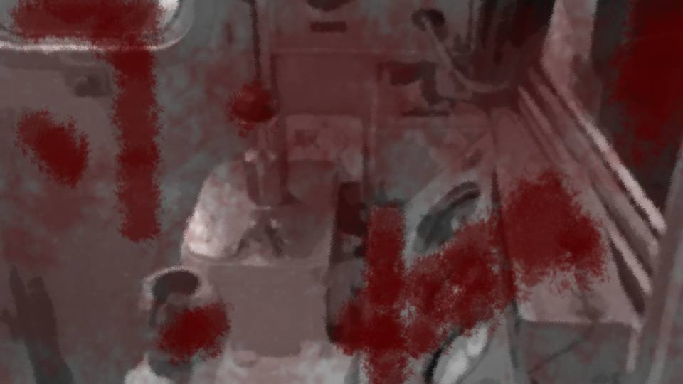
ふと、あの殺された電車の運転手を思い出す。
私が犯人の仲間になるっていうことか……。
そんなこと、本当なら死んでもごめんだけど……。
私が犯人の仲間になるっていうことか……。
そんなこと、本当なら死んでもごめんだけど……。
しかしなつみは、生き残ることを選んだ。
魂を売るようなことになっても、私たちを助けることを選んだ。
なつみは同じことを私にやれと……？
魂を売るようなことになっても、私たちを助けることを選んだ。
なつみは同じことを私にやれと……？
もうそんなことは考えるな……！
私がこれを使えば、きっとなつみも五島も助かるはずだ。
あの電車の運転手の死体を見て、この集落のやつらが本気であると確信した。
邪魔者は、あのようにして消されるのだ。
私がこれを使えば、きっとなつみも五島も助かるはずだ。
あの電車の運転手の死体を見て、この集落のやつらが本気であると確信した。
邪魔者は、あのようにして消されるのだ。
注射器の針を腕の皮膚に当てる。
これを刺し、ピストンを押し込めば私も……。
………… …………。
いや…… ちょっと待てよ……。
何か…… 何かが引っかかる。
なつみの言っていることが…… どこかおかしい。
これを刺し、ピストンを押し込めば私も……。
………… …………。
いや…… ちょっと待てよ……。
何か…… 何かが引っかかる。
なつみの言っていることが…… どこかおかしい。
「どうしたの春花、早くしなよ」
だけど、何が引っかかっているのかまでは分からない。
何か矛盾している。
やっぱり私は、騙されているのか？
だけど、何が引っかかっているのかまでは分からない。
何か矛盾している。
やっぱり私は、騙されているのか？
「なあなつみ、さっきの言い方だと五島はまだ仲間入りしてないんだよな？」
「うん、まだだね」
「じゃあ、五島にも私が注射するところ、見せてやろうぜ」
「どうして？」
「そりゃ、私が自分の意思で仲間になるところを見せた方がいいだろ？ そしたら五島もきっと――」
「うん、まだだね」
「じゃあ、五島にも私が注射するところ、見せてやろうぜ」
「どうして？」
「そりゃ、私が自分の意思で仲間になるところを見せた方がいいだろ？ そしたら五島もきっと――」
「五島はいらない」
――！！
やっぱりそうだ！ これは仲間になる演技じゃない！
本当にチガ姉たちのようにおかしくなっただけだ！
私たちを助けるつもりなんて毛頭ない！
なつみ、もう一度食いしばれ……！
――！！
やっぱりそうだ！ これは仲間になる演技じゃない！
本当にチガ姉たちのようにおかしくなっただけだ！
私たちを助けるつもりなんて毛頭ない！
なつみ、もう一度食いしばれ……！
なつみに足払いをかけ転ばせた後、後頭部を殴り気を失わせる。
これでなつみは声を上げることができない。
これでなつみは声を上げることができない。
そして急いで居間から出て新村家の屋根に登る。
五島を探さなくては……！
なつみの言い方だと、あいつは正気のまま生きているはずだ！
五島はこの集落のどこかに……！
絶対に探し出して…… なつみも正気に戻して…… ここから脱出する！
なつみの言い方だと、あいつは正気のまま生きているはずだ！
五島はこの集落のどこかに……！
絶対に探し出して…… なつみも正気に戻して…… ここから脱出する！
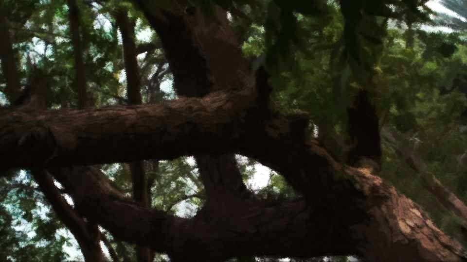
video: 雨1.wmv――時刻は15時を過ぎただろうか。
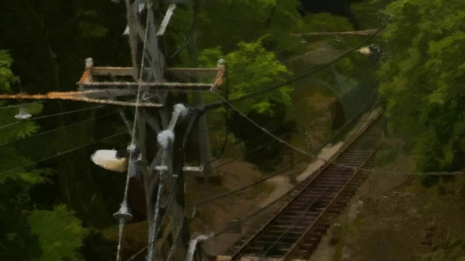
video: 雨1.wmv私はずっと荒田駅を木の上から見張っていた。
そろそろなつみたちが着いてもおかしくない時間だ。
そろそろなつみたちが着いてもおかしくない時間だ。
video: 雨1.wmv相変わらず雨が降り続いている。
さっきは雷も収まったかと思ったのに、また雷雨。
いつまでたってもやむ気配がない。
普通、雷雲ってある程度時間が経つと消えるもんじゃないのか？
まるでここだけ時間が止まってしまっているかのように、雨が降り続く。
さっきは雷も収まったかと思ったのに、また雷雨。
いつまでたってもやむ気配がない。
普通、雷雲ってある程度時間が経つと消えるもんじゃないのか？
まるでここだけ時間が止まってしまっているかのように、雨が降り続く。
video: 雨1.wmv――と、遠くから1両編成の電車が見える。
この電車か、次の17時着の電車になつみと五島が乗っているはずだ。
この電車か、次の17時着の電車になつみと五島が乗っているはずだ。
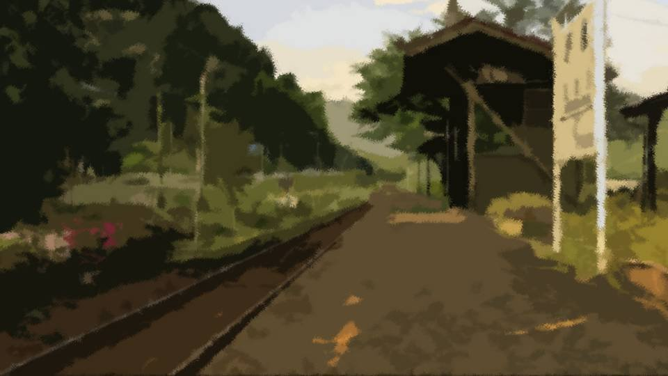
video: 雨1.wmvいた……！
本当に、本当になつみと五島だ……！
よし、急いで木を降りるんだ……！
早く今の集落の状況を伝え、話をしたらすぐに逃がさないと……！
本当に、本当になつみと五島だ……！
よし、急いで木を降りるんだ……！
早く今の集落の状況を伝え、話をしたらすぐに逃がさないと……！
video: 雨1.wmvと、何者かが私の襟首をつかんでいる。
この高い木の上にはずっと私1人だったはず。
こんなことができるのは、チガ姉しかいない……！
今度はなつみたちに会う邪魔をする気か……！？
キッと後ろを睨みつける。
この高い木の上にはずっと私1人だったはず。
こんなことができるのは、チガ姉しかいない……！
今度はなつみたちに会う邪魔をする気か……！？
キッと後ろを睨みつける。
video: 雨1.wmv「春花ちゃん、久しぶりだね！」
「か、夏菜……？」
そこにいたのはまぎれもなく夏菜だった。
2年ぶりの再会ではあるが、少し背が伸びたかどうかという程度で、思ったほど変わっていない。
それにしてもチガ姉同様、気配を感じさせずに私の背後に忍び寄るなんて。
しかも木の上だぞ？
「か、夏菜……？」
そこにいたのはまぎれもなく夏菜だった。
2年ぶりの再会ではあるが、少し背が伸びたかどうかという程度で、思ったほど変わっていない。
それにしてもチガ姉同様、気配を感じさせずに私の背後に忍び寄るなんて。
しかも木の上だぞ？
video: 雨1.wmv「どうして、お前がここに……」
video: 雨1.wmv「私、色々あって豊岳駅を見張ってたんだけど、荒田駅に向かう知らない2人組がいたんだよね。
だから先回りしたんだよ？」
なるほどな……夏菜は豊岳駅を見張っているとチガ姉が言っていた。
豊岳駅は荒田駅に向かうために必ず通るから、あらかじめ誰が来るのか把握しやすい。
なるほどな……夏菜は豊岳駅を見張っているとチガ姉が言っていた。
豊岳駅は荒田駅に向かうために必ず通るから、あらかじめ誰が来るのか把握しやすい。
video: 雨1.wmv「で、春花ちゃんはどうしてここに？ 山籠、終わったの？」
この様子だと、私がチガ姉に会ったことを知らないようだ。
なるべく集落の滅亡について触れないようにしなくては。
でないと、また話がややこしくなりそうだし……。
この様子だと、私がチガ姉に会ったことを知らないようだ。
なるべく集落の滅亡について触れないようにしなくては。
でないと、また話がややこしくなりそうだし……。
video: 雨1.wmv「え？ あ、ああ、そうだ、山籠終わったんだよ。
んで、なんとなくここから久しぶりの景色を見てたんだ」
「ふーん……こんなに雨が降ってるのにねえ……」
夏菜が私を疑わしそうに見つめる。
「ふーん……こんなに雨が降ってるのにねえ……」
夏菜が私を疑わしそうに見つめる。
video: 雨1.wmv「でも、服新しいし、1度集落に戻ったんだよね？
誰かに会わなかった？」
「え？」
しまった。確かに私の身なりでは山籠からそのままここへ来た感じではない。
「え？」
しまった。確かに私の身なりでは山籠からそのままここへ来た感じではない。
video: 雨1.wmv「え、えっと……
集落、ちょっと立ち寄って着替えたけど、誰もいなかったんだよな……。
みんなどこに行ったのか……ははは……」
目を逸らして苦笑いしてみるも、夏菜の目つきは変わらない。
目を逸らして苦笑いしてみるも、夏菜の目つきは変わらない。
video: 雨1.wmv
「お姉ちゃんに会わなかった？」
何もかも見透かすような、夏菜の鋭い眼光。
チガ姉と違い、露骨にその表情を変えて私を睨みつける。
何もかも見透かすような、夏菜の鋭い眼光。
チガ姉と違い、露骨にその表情を変えて私を睨みつける。
video: 雨1.wmv「あ……
そう言えば、会ったよ……。
うん、ちょっとだけ会った……」
video: 雨1.wmv「そっか……
会ったんだ……」
video: 雨1.wmvと、夏菜はナイフを手に取った。
video: 雨1.wmv何でそこで武器を取り出すんだよ……！
これって、やっぱり私に敵対心を持っているってことか……？
これって、やっぱり私に敵対心を持っているってことか……？
video: 雨1.wmv「あはは！ 春花ちゃん、自分の立場分かってるよね？
私を怒らせたら、ここから落ちて死ぬよ？
ううん……万一死ななくても……とどめを刺すけどね」
こいつは何を言っているんだ……！？
夏菜を怒らせることなんて言っていない！
こいつは何を言っているんだ……！？
夏菜を怒らせることなんて言っていない！
video: 雨1.wmvちらっと横目で下の方を見ると――
video: 雨1.wmv
なつみと五島が荒田駅から出てきた。
ぬかるんだ未舗装道路に戸惑っているようにも見える。
ぬかるんだ未舗装道路に戸惑っているようにも見える。
video: 雨1.wmv「春花ちゃん、あの人たち気になるの？」
「え……？」
「お姉ちゃんから聞かなかった？ 今日、集落に悪い人が来るんだって」
「ちょ、ちょっと待てよ……」
「だから、集落に来る人には容赦しないでいいって、ママが言ってたんだ」
「え……？」
「お姉ちゃんから聞かなかった？ 今日、集落に悪い人が来るんだって」
「ちょ、ちょっと待てよ……」
「だから、集落に来る人には容赦しないでいいって、ママが言ってたんだ」
video: 雨1.wmv「やめろ、夏菜……あの2人に手を出すな……！」
「あれ？ やっぱりあの2人、春花ちゃんの知り合いなの？ ふーん……もしかして、春花ちゃんを訪ねてきたのかな？」
「あれ？ やっぱりあの2人、春花ちゃんの知り合いなの？ ふーん……もしかして、春花ちゃんを訪ねてきたのかな？」
video: 雨1.wmv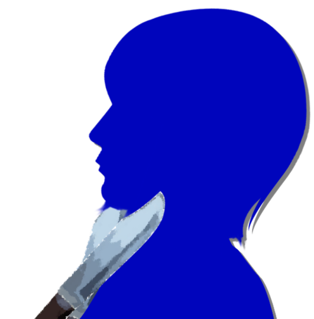
夏菜が2本のナイフを私の首元に突きつける。
私が少しでもおかしな真似をすれば、私の血液は5秒で枯渇するだろう。
私が少しでもおかしな真似をすれば、私の血液は5秒で枯渇するだろう。
video: 雨1.wmv「ねえねえ、もしかして、春花ちゃんがあの2人を呼んだの？
春花ちゃんが、集落を滅ぼすものなの？」
「ち、違う……！」
「違うの？ ヴェルジ様がよそ者3人組を殺せって言ってたんだけどなあ……」
ヴェルジ様！？ それって、あのミイラのことか……？
「ち、違う……！」
「違うの？ ヴェルジ様がよそ者3人組を殺せって言ってたんだけどなあ……」
ヴェルジ様！？ それって、あのミイラのことか……？
video: 雨1.wmvってことは、集落が滅びる予言をしたのはサクラさんじゃなくて、ヴェルジの方なのか……？
やっぱり、あのミイラが何か関係しているのか……！
夏菜もチガ姉も、きっとあのミイラのせいでおかしくなってしまったんだ……！
やっぱり、あのミイラが何か関係しているのか……！
夏菜もチガ姉も、きっとあのミイラのせいでおかしくなってしまったんだ……！
video: 雨1.wmvと、夏菜はナイフをさやにしまった。
video: 雨1.wmv
「まあ、あの2人を知らないならいいよ。
じゃあ春花ちゃんは、あの2人を見張っててね。私、すぐみんなに知らせてくるから。
集落に入れないようにすれば、それでいいからね！」
video: 雨1.wmv突然私の知っているあどけない顔に戻り、夏菜はムササビのように集落の方へ去っていった。
video: 雨1.wmv太い枝にまたがるように座り、背を幹に寄りかける。
足に力が入らない。
ちょっと気を抜いたら、枝から転落してしまいそうだ。
チガ姉と違い、夏菜は私に対して明らかな殺意を向けていた。
足に力が入らない。
ちょっと気を抜いたら、枝から転落してしまいそうだ。
チガ姉と違い、夏菜は私に対して明らかな殺意を向けていた。
video: 雨1.wmvいや、今はそれよりもなつみと五島を止めなくては……！
今の集落はとても危険だ！ 動いてくれ、私の足……！
今の集落はとても危険だ！ 動いてくれ、私の足……！
video: 雨1.wmv急いで20メートルの木から滑るように地面に下りる。
video: 雨1.wmv「な、なつみ、五島！」
地に足が着くと同時に、2人の背中に向かって叫ぶ。
私の大声に、2人はビクリと身体を震わせたが、すぐに声の主が分かったのだろうか。
警戒する様子もなく、すぐにこちらを向いてくれた。
地に足が着くと同時に、2人の背中に向かって叫ぶ。
私の大声に、2人はビクリと身体を震わせたが、すぐに声の主が分かったのだろうか。
警戒する様子もなく、すぐにこちらを向いてくれた。
video: 雨1.wmv「春花！」
「先輩！」
「先輩！」
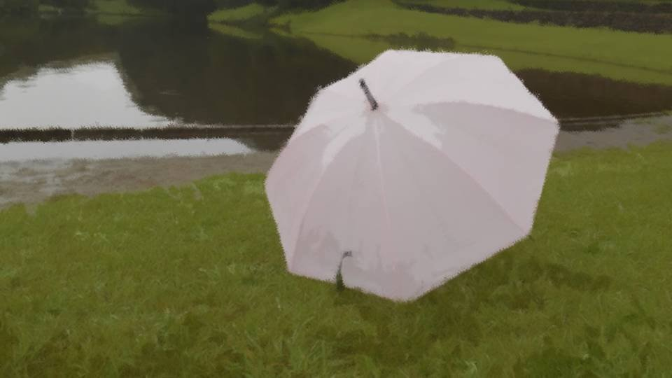
video: 雨1.wmv2人は傘を手放し、私の方へ駆け寄ってきた。
そして2人が同時に私に抱きつく。
そして2人が同時に私に抱きつく。
video: 雨1.wmv「春花……よかった！」
「先輩、会いたかった……！」
私はやっと知っている人に出会えた気がする。
「先輩、会いたかった……！」
私はやっと知っている人に出会えた気がする。
video: 雨1.wmvでも次の瞬間、なつみと五島は本当に私の知っている2人なのだろうか、という余計な疑問が湧いてくる。
この2人もチガ姉たちみたいにヴェルジだの滅亡だの言うのかもしれない。
抱き着く2人を私は抱き返すことができなかった。
この2人もチガ姉たちみたいにヴェルジだの滅亡だの言うのかもしれない。
抱き着く2人を私は抱き返すことができなかった。
video: 雨1.wmv「お前たち……本当に、なつみと五島か……？」
「そうだよ！ 一緒に元木町に帰ろうよ。 もう……何も怖いことなんてないから……！」
「新村先輩は、きっとここで辛い思いをしたんですよ。 ほら、駅のベンチで休ませてあげましょうよ」
2人が私を気遣っている……？
チガ姉や夏菜は、そんなことしてくれなかった。
ってことは……。
「そうだよ！ 一緒に元木町に帰ろうよ。 もう……何も怖いことなんてないから……！」
「新村先輩は、きっとここで辛い思いをしたんですよ。 ほら、駅のベンチで休ませてあげましょうよ」
2人が私を気遣っている……？
チガ姉や夏菜は、そんなことしてくれなかった。
ってことは……。
video: 雨1.wmv「春花、歩ける？ おんぶしようか？」
「ほら先輩、私たちに寄りかかって下さい。疲れてるでしょう？」
「ううう…… うう……」
私から嗚咽が漏れると同時に、そのまま全身の力が抜けてしまった。
私は全体重を2人に預け、それを2人が支えてくれる。
やっと安心できる人に会えて、2年ぶりの安息を得ることができた。
「ほら先輩、私たちに寄りかかって下さい。疲れてるでしょう？」
「ううう…… うう……」
私から嗚咽が漏れると同時に、そのまま全身の力が抜けてしまった。
私は全体重を2人に預け、それを2人が支えてくれる。
やっと安心できる人に会えて、2年ぶりの安息を得ることができた。
video: 雨1.wmv「春花、辛かったんだね。もう、大丈夫だよ」
「先輩、私たちがついてますからね」
2人のセリフは2年前と変わらない。
本当ならこのまま、感傷に浸っていたいところだが…… 2人にも状況を説明しなくてはならない。
抜けていた力を脚に集中して、自力で立ち上がる。
「先輩、私たちがついてますからね」
2人のセリフは2年前と変わらない。
本当ならこのまま、感傷に浸っていたいところだが…… 2人にも状況を説明しなくてはならない。
抜けていた力を脚に集中して、自力で立ち上がる。
video: 雨1.wmv「2人とも、ずっと連絡しないですまなかった。
でも今、荒田集落で大変なことが起こってて……」
「わ、分かった！ じゃあ、すぐに電車で安全なところへ行こう？」
「それがいいです！ 先輩さえ見つかれば、荒田集落に行く必要なんてありませんから！」
私が返事をする前に、なつみたちは私を支え歩き出し、駅へ引き返す。
「わ、分かった！ じゃあ、すぐに電車で安全なところへ行こう？」
「それがいいです！ 先輩さえ見つかれば、荒田集落に行く必要なんてありませんから！」
私が返事をする前に、なつみたちは私を支え歩き出し、駅へ引き返す。
video: 雨1.wmv正直、このまま集落を後にすることに抵抗があった。
でも、なつみや五島は、これ以上私と離れまいとするかのように、少し強引だった。
だけど、それが心地よかった。
私を必要としてくれる2人がいて、安心できる場所へ連れて行ってくれる。
でも、なつみや五島は、これ以上私と離れまいとするかのように、少し強引だった。
だけど、それが心地よかった。
私を必要としてくれる2人がいて、安心できる場所へ連れて行ってくれる。
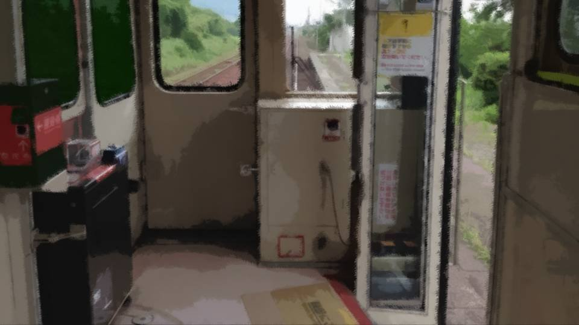
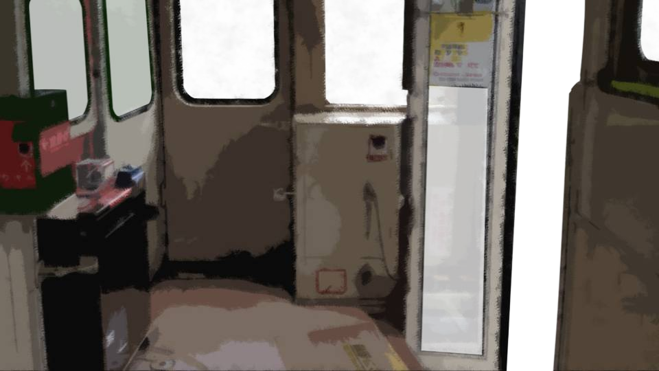
video: 雨1.wmv――ホームには、なつみたちを乗せてきた電車が止まっている。
定刻になるまでここで待機し、あと10分ほどで、また豊岳方面へ戻っていくのだ。
私たちは入り口の整理券を取り、誰もいない車内の椅子に腰かける。
定刻になるまでここで待機し、あと10分ほどで、また豊岳方面へ戻っていくのだ。
私たちは入り口の整理券を取り、誰もいない車内の椅子に腰かける。
数年ぶりの、やわらかいクッションの感覚。
急に自分のいる場所に現実味が湧いてきた。
ああ……私、本当に山から下りて、荒田を出てきたんだ……。
急に自分のいる場所に現実味が湧いてきた。
ああ……私、本当に山から下りて、荒田を出てきたんだ……。
「2人とも、ごめん……。
長い時間、電車に乗ってきたのに、また……」
「何言ってるの春花！ 春花さえ無事に戻ってきてくれれば、それでいいから！」
そしてなつみは私をぎゅっと抱きしめる。
とても懐かしい人肌の温かさと感触。
私もたまらず、なつみを抱き返す。
そしてなつみは私をぎゅっと抱きしめる。
とても懐かしい人肌の温かさと感触。
私もたまらず、なつみを抱き返す。
「なつみ……ごめん……！ ずっと……」
「色々あったんだよね。でも、もう大丈夫だからね。 もう……怖くないから」
なつみは相変わらず、なつみのままだった。
何年も離れていたら、少しはよそよそしい態度になるんじゃないかと思っていた。
「色々あったんだよね。でも、もう大丈夫だからね。 もう……怖くないから」
なつみは相変わらず、なつみのままだった。
何年も離れていたら、少しはよそよそしい態度になるんじゃないかと思っていた。
でも私たちは、出会ってすぐに抱き合い、互いの無事を確かめあい、慰め合い――。
なつみは、やっぱり私の親友だ。
一緒に来てくれた五島も、かわいい後輩だ。
互いの体温を確かめ合った後、ゆっくりと身体を離す。
なつみは、やっぱり私の親友だ。
一緒に来てくれた五島も、かわいい後輩だ。
互いの体温を確かめ合った後、ゆっくりと身体を離す。
「春花は、あまり濡れてないね」
「ああ、ずっと木に登ってたからな。大きな葉で濡れずに済んだんだよ」
「ああ、ずっと木に登ってたからな。大きな葉で濡れずに済んだんだよ」
「木に登ってたんですか？ どうしてそんなことを……」
早いところ荒田集落の状況を説明した方がいいだろう。
と言っても何が起こっているのか、ほとんど理解ができないが……。
早いところ荒田集落の状況を説明した方がいいだろう。
と言っても何が起こっているのか、ほとんど理解ができないが……。
video: 雨1.wmv――すべてを説明するのに、やはり時間を要した。
お母さんの死体―― 山籠―― 今日の法要―― 滅亡予知―― チガ姉と夏菜―― ヴェルジ――。
なつみは私の話を疑おうともしない。
五島に至っては、私の一言一句を漏らすまいとメモを取り続けている。
お母さんの死体―― 山籠―― 今日の法要―― 滅亡予知―― チガ姉と夏菜―― ヴェルジ――。
なつみは私の話を疑おうともしない。
五島に至っては、私の一言一句を漏らすまいとメモを取り続けている。
video: 雨1.wmv「そっか……2年間も大変な思いをしてたんだね。
でも、春花が私たちのことを忘れたんじゃなくて、よかった……」
「忘れるわけないだろ……。私だって、どれだけ会いたかったか……」
「忘れるわけないだろ……。私だって、どれだけ会いたかったか……」
video: 雨1.wmv「ねえ春花、元木町に帰っておいでよ。
春花ももうすぐ20歳でしょ？ 自分の生きる場所くらい、自分で決めても大丈夫でしょ？」
「だけど……荒田集落だって、大切な場所の1つだ。 どこに住むにしても、集落のあのままにはしておけないよ」
「だけど……荒田集落だって、大切な場所の1つだ。 どこに住むにしても、集落のあのままにはしておけないよ」
video: 雨1.wmv「そっか……でもこの辺、桜が少ないみたいで私の直感、全然働かないんだ……。
五島、どう？ 何か分かる？」
五島はずっとメモ帳を穴が開かんばかりに見続けている。
五島の推理と考察が始まろうとしている。
五島の推理と考察が始まろうとしている。
「新村先輩……今、何が起こっているかを調べる前に、確かめさせて下さい。
本当に、集落を助けるんですか？
見捨てて逃げるのも、とてもいい選択だと思います」
「それは、そんなにやばいってことか……？」
「それは、そんなにやばいってことか……？」
「どうやら、荒田集落はとても危険な場所に変わり果ててしまったようです」
やっぱり、私の感覚の方が正しかったようだ。
私がおかしいのではなく、チガ姉や夏菜がおかしいのだ。
そしてサクラさん――いや、ヴェルジの預言の拡大解釈。
そもそも、ヴェルジの預言って言う時点でおかしい。
死体が予言しているなんて、そんなこと……。
やっぱり、私の感覚の方が正しかったようだ。
私がおかしいのではなく、チガ姉や夏菜がおかしいのだ。
そしてサクラさん――いや、ヴェルジの預言の拡大解釈。
そもそも、ヴェルジの預言って言う時点でおかしい。
死体が予言しているなんて、そんなこと……。
「五島、手間だけどお前の考えを聞かせてくれ。
逃げざるを得ないのか、何とかできるのか、お前の話を聞いてから決めたい」
「分かりました。 じゃあ…… えっと、どこから話せばいいのかな……」
五島はメモを見ながらペンで頭をかいている。
そりゃ、何から何までおかしなことばかりなのだから、五島でも簡単に解説できないだろう。
「分かりました。 じゃあ…… えっと、どこから話せばいいのかな……」
五島はメモを見ながらペンで頭をかいている。
そりゃ、何から何までおかしなことばかりなのだから、五島でも簡単に解説できないだろう。
「実はですね……私もこの2年間、荒田集落について調べてたんですよ。
多分、新村先輩が知らないこともたくさん知っていると思います」
「私が知らないことを？ どうしてそんなことを？」
「私が知らないことを？ どうしてそんなことを？」
「新村先輩を見つけるために決まってるじゃないですか。
でも、知れば知るほど荒田集落は不思議なところで、古郡先輩とここへ行くと決めるまでに2年もかかっちゃいました」
と、五島は別のメモ帳を取り出した。
どうやら荒田集落のことをまとめたノートのようだ。
どうやら荒田集落のことをまとめたノートのようだ。
「荒田集落――
正確には、荒田地区という、どの市町村にも属さない、いわゆる『境界未定地』です。
まあ便宜上地図では飯沢県内にあるようにしているみたいですけど。
そして、人もほとんど立ち入らないようなド田舎」
「まあ、ド田舎なのは否定しないけど……」
「まあ、ド田舎なのは否定しないけど……」
「でもこの荒田地区って広大な地域で、まだ探索されていないエリアもあるとか」
「確かに山も多いし、山籠していた場所なんて山以外なかったからな……」
「確かに山も多いし、山籠していた場所なんて山以外なかったからな……」
「つまり荒田集落というのは、荒田地区全体のほんの一部分に過ぎません。
逆に言えば、その大部分が謎の領域とも言えます」
「謎なんて大げさな表現だな……」
「謎なんて大げさな表現だな……」
「いえ、大げさなんてことはありませんよ？
この荒田集落の土壌ってかなり肥沃で、大きくて変わった動物も多いらしいです」
「あ、それは心当たりがある。 にしてもずいぶん調べたんだなあ。どうやって調べたんだ？」
「あ、それは心当たりがある。 にしてもずいぶん調べたんだなあ。どうやって調べたんだ？」
「図書館で調べたり、大学の先生に聞いたりしましたよ。
さすがにこんな情報、ネットにはありませんから」
「大学の先生？」
「大学の先生？」
「全国の文化人類学や生物学に詳しい教授たちに色々話を聞けました。
一応、私の名前はそこそこ知れ渡っているみたいですから、私がその分野に興味あると言えば、大抵の教授は会ってくれました」
「へえ、天才少女って肩書き、やっぱりすごいんだな……」
「へえ、天才少女って肩書き、やっぱりすごいんだな……」
「でも、そんな平和な話ばかりではありませんでした。
これだけ肥沃で変わった動植物が多いのに、ほとんどその正体が未知のままなんです。
どうしてか分かりますか？」
「え？ どうしてって……それは調べてないだけだろ？」
「え？ どうしてって……それは調べてないだけだろ？」
「じゃあ、どうして調べてないと思いますか？
こんな研究しがいのありそうな場所、研究者たちが放っておくと思いますか？」
「もう、クイズはいいからさ……早く教えてくれよ」
「もう、クイズはいいからさ……早く教えてくれよ」
五島のこういうところは変わっていない。
クイズ形式で話すことで私の理解度も増すだろうけど、今回ばかりはのんびりしていられないのだ。
クイズ形式で話すことで私の理解度も増すだろうけど、今回ばかりはのんびりしていられないのだ。
「分かりました。
実は……
日本政府が、住人を除いて荒田地区への立ち入りを禁止しているんです」
――五島はそこから、ドローガの話を始めた。

ドローガのことは公になっていないが、歴史研究家や文化人類学者の間では、荒田集落についてそのようなうわさがあるとのことだ。
しかし、この研究はタブーとされ続けていた。
なぜなら、ドローガが悪用されれば、世界のバランスを崩しかねないからだ。
しかし、この研究はタブーとされ続けていた。
なぜなら、ドローガが悪用されれば、世界のバランスを崩しかねないからだ。
「それと、荒田集落の文化について。
荒田集落の死神や魔女については新村先輩も知っていると思いますから省略しますけど……。
新村先輩は荒田集落独特の宗教って知ってますか？」
「その死神とか魔女とかのことじゃなくてか？」
「その死神とか魔女とかのことじゃなくてか？」
「いえ、もちろんそれも関係しますけど、その土台にあるものです」
「もしかして、ヴェルジのことか？」
「もしかして、ヴェルジのことか？」
「その通りです。
荒田集落は日本と西洋が混じり、独特の文化となり現代に至ります。
まあ、仮称でヴェルジ教とでも呼びましょうか。
ヴェルジ教の主神は女神ヴェルジ――
約450年前に亡くなった少女であると言われています」
「おいおい……なんでそこまで詳しいんだよ……。 ヴェルジなんて、私だって今日初めて聞いたのに……」
「おいおい……なんでそこまで詳しいんだよ……。 ヴェルジなんて、私だって今日初めて聞いたのに……」
「実は70年ほど前まで、女ケ沢市を中心に信仰されていた宗教があるんです」
「女ケ沢市で信仰……？ もしかして、えっと確か……セレジェイラ聖教？」
「女ケ沢市で信仰……？ もしかして、えっと確か……セレジェイラ聖教？」
「新村先輩、知っていたんですね」
「ああ、それって私が女ケ沢市でいじめられるきっかけになったやつだよ。 小学生だった時、その宗教についてよく知らなくてさ。 セレジェイラ聖教家系の子がクラスメイトにいて、いじめられていたんだ。 私がその子をかばったら……」
「ああ、それって私が女ケ沢市でいじめられるきっかけになったやつだよ。 小学生だった時、その宗教についてよく知らなくてさ。 セレジェイラ聖教家系の子がクラスメイトにいて、いじめられていたんだ。 私がその子をかばったら……」
「それで先輩がいじめのターゲットになったんですね……。
実はそのセレジェイラ聖教って、荒田集落が起源なんですよ」
「え！？」
「え！？」
「セレジェイラ聖教は数百年も前、荒田集落から出ていった者たちによって女ケ沢市で興され、ドローガを神器として崇めていました。
しかし近代になり、ドローガを科学的に研究しようという動きがありました。
その宗教団体でドローガの研究をしていたのは、篠崎ハジメという人です」
「ただ、かなり非人道的な実験だったみたいで、70年ほど前にセレジェイラ聖教は瓦解。
そのため元信者たちは逆にセレジェイラ聖教を敵対視するようになり、現代でも信仰している家系は肩身が狭いようです。
おそらく、新村先輩が助けたクライスメイトもその1人だったんでしょうね」
「篠崎氏は亡くなってすでに50年ほど経っていますが、彼はできるだけ自分の研究を後世に残そうとしたそうです。
おかげで、今でもわずかに彼の研究成果を覚えている人がいたんです。
その方もかなりの老齢で、断片的にしか覚えていないそうですが、お会いしてお話をうかがえました」
「ただ、この篠崎ハジメ氏は、名前を変えてしまったそうです」
「なんだそりゃ？」
「非人道的な実験を繰り返し、その研究員リストがあるわけです。 そのリストに載っている人となっては……」
「ああ、そうなると色々生きづらくなるよな」
「なんだそりゃ？」
「非人道的な実験を繰り返し、その研究員リストがあるわけです。 そのリストに載っている人となっては……」
「ああ、そうなると色々生きづらくなるよな」
「ですから、篠崎ハジメ氏についてはその正体がずっと不明なままです。
当時の研究者はみんな故人であるため、私が会った人も、篠崎ハジメ氏について直接は知らないそうです」
「なるほどな……」
「なるほどな……」
「話を戻しますが、女神ヴェルジは、14歳で亡くなりました。
そしてこう言われています。

『翠眼呪殺は断たれた。
命を以って荒田を救った少女に聖名を与え、女神として崇める』と」
「何だか……オカルトじみてきたな……。 何だよ、翠眼呪殺って……」
「何だか……オカルトじみてきたな……。 何だよ、翠眼呪殺って……」
「荒田集落には、ごくまれに片目だけ緑の目で生まれる女子がいるそうです。
その女子は思春期を迎えると、集落の人間を皆殺しにしようとしたらしいです」
「皆殺し……！？」
夏菜は、片目だけ緑の目だ。
夏菜が……集落の人間を皆殺しに……？
「皆殺し……！？」
夏菜は、片目だけ緑の目だ。
夏菜が……集落の人間を皆殺しに……？

「女神ヴェルジは、何らかの方法で翠眼呪殺を断ち切ることに成功しました。
でも、それは命と引き換えの行為だったようです。
それ以来、ヴェルジは神として崇められるようになりました。
西洋人たちも、次第に集落を救ったヴェルジを神として認めるようになったそうです」
「それでヴェルジをミイラにしたってか？
何でミイラになんてされたんだよ……」
「宗教でよくある話ですが、何らかの偶像が必要だったからでしょうね。 目の前に集落を救った女神の亡骸があるわけですから、それをミイラにして拝むなんてことも、まあそこまで不自然じゃないです」
なるほど、五島の考察のとおりなら、さっきチガ姉が言っていた『祈るべき神様』とも繋がってくる。
「宗教でよくある話ですが、何らかの偶像が必要だったからでしょうね。 目の前に集落を救った女神の亡骸があるわけですから、それをミイラにして拝むなんてことも、まあそこまで不自然じゃないです」
なるほど、五島の考察のとおりなら、さっきチガ姉が言っていた『祈るべき神様』とも繋がってくる。
「んで、どうしてみんなおかしくなったのか、分かるのか？」
「いえ、それは何とも言えませんけど……。 ただ、ドローガの基本原理は、覚せい剤のようなものです。 もしみんながおかしくなったのがドローガによるものなら、あながち無関係とは言い切れません」
「それはちょっと考え過ぎじゃないか……？」
「いえ、それは何とも言えませんけど……。 ただ、ドローガの基本原理は、覚せい剤のようなものです。 もしみんながおかしくなったのがドローガによるものなら、あながち無関係とは言い切れません」
「それはちょっと考え過ぎじゃないか……？」
「確かに考え過ぎです。
でも、今起こっていることが現実離れしている以上、こちらも現実離れした推測が必要です」
「ねえ、春花……」
今まで口を閉じていたなつみが、話に割って入ってきた。
今まで口を閉じていたなつみが、話に割って入ってきた。
「話の内容はよく分からないけどさ……やっぱり、今すぐ一緒に帰ろうよ……。
覚せい剤だとか、そんなのが出回っている場所に春花がいるなんて、嫌だよ……」
「だけどさ……このままみんなを見捨てるなんて……。 あれは絶対に正気じゃないから、みんなを元に戻してあげたい」
「だけどさ……このままみんなを見捨てるなんて……。 あれは絶対に正気じゃないから、みんなを元に戻してあげたい」
「新村先輩、私も古郡先輩に賛成です。まずは警察を呼んだ方がいいですよ」
なつみと五島はこれ以上荒田集落の事態に関わることに反対している。
そりゃ、私だってこれ以上首を突っ込むのは怖いけど……。
なつみと五島はこれ以上荒田集落の事態に関わることに反対している。
そりゃ、私だってこれ以上首を突っ込むのは怖いけど……。
いや、ここは2人の言うことを聞いた方がいいだろう。
2人の方がより冷静かつ客観的に考えられるはずだ。
2人の方がより冷静かつ客観的に考えられるはずだ。
「分かった。そうしよう。集落の人間が消えてしまったと言えば、警察も動いてくれるはずだ」
「うん、それがいいよ！ ちゃんと私も五島もついてるからね」
「うん、それがいいよ！ ちゃんと私も五島もついてるからね」
「あの、それにしても……。
この電車、いつになったら発つんですかねえ？
とっくに出発時間は過ぎてるはずですけど」
言われてみれば、電車に乗り込んでからもう10分は経過している。
10分どころか、30分以上経っている。
それなのに、出発する気配が全く見られない。
言われてみれば、電車に乗り込んでからもう10分は経過している。
10分どころか、30分以上経っている。
それなのに、出発する気配が全く見られない。
いや……
私はいつの間にか、なつみたちには分からないであろう妙な不快感に飲まれていた。
この不快感の正体は―― 悪臭だ。
普通の人間には気づかないかすかな悪臭が、雨の嫌な湿気に混じってここまで流れ込んできている。
この不快感の正体は―― 悪臭だ。
普通の人間には気づかないかすかな悪臭が、雨の嫌な湿気に混じってここまで流れ込んできている。
この臭いは間違いない――
血の臭いだ。
まさか！
まさか！
video: 雨1.wmv私は運転席に近づき、中をうかがおうとする。
しかし、運転席はブラインドに阻まれて中の様子を知ることができない。
電車の外へ飛び出し、電車の中をガラス越しに覗き込む。
大雨のせいで窓ガラスは曇り、ただでさえ薄暗いのに水滴の乱反射で中が見えづらい。
しかし、運転席はブラインドに阻まれて中の様子を知ることができない。
電車の外へ飛び出し、電車の中をガラス越しに覗き込む。
大雨のせいで窓ガラスは曇り、ただでさえ薄暗いのに水滴の乱反射で中が見えづらい。
video: 雨1.wmvだけど、中に赤いものが飛び散っているのが分かる。
そう、悪臭はこの中から漂ってきているのだ。
そう、悪臭はこの中から漂ってきているのだ。
video: 雨1.wmvもう一度電車の中に入り、運転席の方に向かう。
もう、構っていられない！
もう、構っていられない！
近くにあった大きめの石を、運転席のガラスに思いきり叩きつける。
さらに大きくヒビの入ったガラスを蹴り落とし、ブラインドをナイフで切り裂く。
さらに大きくヒビの入ったガラスを蹴り落とし、ブラインドをナイフで切り裂く。
「ぐ……！」
首が不自然に90度傾いた運転手が椅子に座っている。
首が皮を数枚残して切られ、天井に向かって食道と気管、大動脈がその口を開いている。
こんな手際よく首を切るなんて、ごく限られたやつだけだ。
首が不自然に90度傾いた運転手が椅子に座っている。
首が皮を数枚残して切られ、天井に向かって食道と気管、大動脈がその口を開いている。
こんな手際よく首を切るなんて、ごく限られたやつだけだ。
「なつみ！ 五島！ すぐにここから逃げるぞ！
歩いてでも、早くここから逃げるんだ！」
私は誰に向かって叫んでいたのか――
もし傍観者がいたのなら、そのような疑問を持たれるだろう。
この電車の中には、私1人しかない。
なつみと五島の存在が幻だったかのように、ただ雨の轟音だけが響き渡る。
この電車の中には、私1人しかない。
なつみと五島の存在が幻だったかのように、ただ雨の轟音だけが響き渡る。
嘘、嘘だ――！
急いでなつみたちが座っていた場所に駆け寄る。
………… 2人が座っていた場所が濡れている。
電車に乗るまで、私たちは傘を差していなかったからだ。
2人はさっきまで確かにここにいたことを確認する。
急いでなつみたちが座っていた場所に駆け寄る。
………… 2人が座っていた場所が濡れている。
電車に乗るまで、私たちは傘を差していなかったからだ。
2人はさっきまで確かにここにいたことを確認する。
video: 雨1.wmv「おい！ なつみ！ 五島！」
video: 雨1.wmv「どこだ！」
video: 雨1.wmv「返事をしろ！」
video: 雨1.wmvあいつら……
あいつら……！
もし…… もし、なつみたちに何かしたら…… 例え誰だろうが親戚だろうが……絶対に許さない……！
必ず助け出してやる……！
助けるためなら……
もし…… もし、なつみたちに何かしたら…… 例え誰だろうが親戚だろうが……絶対に許さない……！
必ず助け出してやる……！
助けるためなら……
video: 雨1.wmvこのナイフに血を吸わせることだって厭わない……！
video: 雨1.wmv私は確信した。
私には、対になつみと五島が絶必要なのだ。
例えどんなことをしてでも…… 集落の人間を皆殺しにしてでも……！
覚悟しろ……！
私には、対になつみと五島が絶必要なのだ。
例えどんなことをしてでも…… 集落の人間を皆殺しにしてでも……！
覚悟しろ……！
――正午を過ぎた。
雷はいくぶん収まったが、この雨は当分止まないだろう。
ここと荒田駅を結ぶ道も、かなり足元が悪くなっているはず。
雷はいくぶん収まったが、この雨は当分止まないだろう。
ここと荒田駅を結ぶ道も、かなり足元が悪くなっているはず。
血の付いたスマホ。
微妙に反応は示すけど、なつみに連絡を取れるほどには動いてくれない。
中の機械にまで血が浸入したのだろう。
さすがになつみと五島の電話番号は覚えていないから、家の固定電話から掛けることもできない。
微妙に反応は示すけど、なつみに連絡を取れるほどには動いてくれない。
中の機械にまで血が浸入したのだろう。
さすがになつみと五島の電話番号は覚えていないから、家の固定電話から掛けることもできない。
私は、ここで2人きり。
目の前には、
目の前には、
あのミイラ。
死んでからずいぶんと経っているようだ。
死んでからずいぶんと経っているようだ。
「なあ……あんた、誰なんだよ……。
何でこんなところにいるんだよ」
しかし、答えてくれるはずもない。
苦しんで死んだのか、穏やかな最期だったのか、それすら分からない表情。
しかし、答えてくれるはずもない。
苦しんで死んだのか、穏やかな最期だったのか、それすら分からない表情。
なつみたちが荒田駅に着くのは、16時くらいだろうか。
多分、山道は濁流になっているだろうし、そのままとんぼ返りってところか。
いや、なつみのことだ。
荒田駅の資材倉庫にでも泊まって、道が固まるのを待つかもしれない。
どちらにしても、迎えに行った方がいいだろう。
私の足なら、どろどろの道でも何とか移動できる。
多分、山道は濁流になっているだろうし、そのままとんぼ返りってところか。
いや、なつみのことだ。
荒田駅の資材倉庫にでも泊まって、道が固まるのを待つかもしれない。
どちらにしても、迎えに行った方がいいだろう。
私の足なら、どろどろの道でも何とか移動できる。
それまでに、この集落で何が起きたのかを解き明かさなくては。
五島の推理力も借りたいところだけど、こんな場所に来させるわけにもいかない。
そうだ、これは荒田集落だけの問題なんだ。
こういう厄介ごとに、あいつらを巻き込む必要はない。
五島の推理力も借りたいところだけど、こんな場所に来させるわけにもいかない。
そうだ、これは荒田集落だけの問題なんだ。
こういう厄介ごとに、あいつらを巻き込む必要はない。
どこから考えるべきだろうか。
やっぱり目の前にあるミイラ、そして私を攻撃した犯人を探すのが近道だろうか。
まさか犯人は、このミイラの仕業に見せようとしたわけでもないだろうし。
そんな考え、まるで子供だ。
やっぱり目の前にあるミイラ、そして私を攻撃した犯人を探すのが近道だろうか。
まさか犯人は、このミイラの仕業に見せようとしたわけでもないだろうし。
そんな考え、まるで子供だ。
子供……？
この集落にいる1番小さい子供は、
この集落にいる1番小さい子供は、
夏菜だ。
今年から中学生になる夏菜は、まだイタズラ盛りかもしれない。
だとしたら、夏菜の仕業ってこともあり得るけど……。
今年から中学生になる夏菜は、まだイタズラ盛りかもしれない。
だとしたら、夏菜の仕業ってこともあり得るけど……。
夏菜は2年も見ない間に、そこまで性根の腐ったクソガキになったのだろうか。
いや、多分違うな。
子供にこんなミイラを用意できるわけがない。
子供のいたずらにしては、クオリティがとがっている。
いや、多分違うな。
子供にこんなミイラを用意できるわけがない。
子供のいたずらにしては、クオリティがとがっている。
となると、やっぱり大人の仕業か？
程度に差はあれど、イタズラ好きと言えば
程度に差はあれど、イタズラ好きと言えば

亡くなったばあちゃんだ。
ばあちゃんが幽霊になって手荒く歓迎してくれたとか……？
まあ、それならそれで面白いけど、もう少し現実を見た推理を……。
ばあちゃんが幽霊になって手荒く歓迎してくれたとか……？
まあ、それならそれで面白いけど、もう少し現実を見た推理を……。
だったら、サクラさんや幸太郎さん、チガ姉が怪しいってことになる。
いや、ちょっと引っかかることがあったな。
集落が滅びるっていう解釈の飛躍――『外からの人間に滅ぼされる』って部分。
私はこれがおかしいと考えていた。
よし、この辺からもう一度整理してみる。
いや、ちょっと引っかかることがあったな。
集落が滅びるっていう解釈の飛躍――『外からの人間に滅ぼされる』って部分。
私はこれがおかしいと考えていた。
よし、この辺からもう一度整理してみる。
まずは、サクラさんの行動を順番に考えてみよう。
そして、サクラさんとなつみの直感が同じものであると考えてみよう。
となると、数日前にサクラさんはこの集落の誰かが危険な目に遭うと分かったはずだ。
そして、サクラさんとなつみの直感が同じものであると考えてみよう。
となると、数日前にサクラさんはこの集落の誰かが危険な目に遭うと分かったはずだ。
集落の人間全員が危険な目に遭うと予知したなら、集落が滅びる。
うん、ここまでは理解できる。住人全員に死相が出ていたのかもしれない。
だけど、そこからどうして『外の人間が集落を滅ぼす』なんて発想になるのか。
うん、ここまでは理解できる。住人全員に死相が出ていたのかもしれない。
だけど、そこからどうして『外の人間が集落を滅ぼす』なんて発想になるのか。
なつみの場合、その後の行動が危ないかどうかだけを判断していた。
つまり『なぜ危ないのか』『どう危ないのか』までは分からなかった。
つまり『なぜ危ないのか』『どう危ないのか』までは分からなかった。
もしかすると、サクラさんの直感はなつみのよりも優れているのかもしれないが……。
であれば、チガ姉からその辺の話もしっかりと聞いておくべきだった。
サクラさんの直感となつみの直感の違いも、考えなくてはならないけど……。
くそ……やっぱりどうしてもこの辺で行き詰ってしまうな。
であれば、チガ姉からその辺の話もしっかりと聞いておくべきだった。
サクラさんの直感となつみの直感の違いも、考えなくてはならないけど……。
くそ……やっぱりどうしてもこの辺で行き詰ってしまうな。
頭が使えないなら、やっぱり足で稼ぐしかない。
本当にみんな消えてしまったのかどうか確かめる。
どこかに全員が身を潜められる場所はないか。
そうだ……そうだよ！ 危険が迫っているなら、どこかに避難していたって不思議じゃない！
どこかに隠れ家があるはずだ！
本当にみんな消えてしまったのかどうか確かめる。
どこかに全員が身を潜められる場所はないか。
そうだ……そうだよ！ 危険が迫っているなら、どこかに避難していたって不思議じゃない！
どこかに隠れ家があるはずだ！
そして、この雨だ。30人全員が隠れられる場所は限られている。
集会場には居なかったし、どこか大きな岩場とか、秘密の洞窟とか。
とにかく、雨が当たらない場所だ。
集会場には居なかったし、どこか大きな岩場とか、秘密の洞窟とか。
とにかく、雨が当たらない場所だ。
よし、なつみたちが着くまで時間があるし、今からこの集落一帯をくまなく探しまわる。
いや…… その前に……。
いや…… その前に……。
「なあ……あんた、誰なんだ？ どうして急にこんなところに来たんだ？」
私を殴った誰かが、このミイラを吊り下げスマホを使えなくした。
犯人は何を伝えたかったのだろうか。
ただの恐怖演出にしては、何というか、こう…… メッセージ性が強いと言うか……。
あまり気が進まないけど、このミイラもちゃんと調べてみるか。
私を殴った誰かが、このミイラを吊り下げスマホを使えなくした。
犯人は何を伝えたかったのだろうか。
ただの恐怖演出にしては、何というか、こう…… メッセージ性が強いと言うか……。
あまり気が進まないけど、このミイラもちゃんと調べてみるか。
さっきは勢いで赤装束を脱がせたけど、この干からびたミイラは少し間違えば崩れてしまうほどに軽い。
触れるのに生理的嫌悪感はあるが、山の動物をさばく経験も豊富だし、そこまで抵抗はない。
なるほど、お母さんも山籠を経たから、人間の皮を剥ぐなんてこと、できたんだな……。
触れるのに生理的嫌悪感はあるが、山の動物をさばく経験も豊富だし、そこまで抵抗はない。
なるほど、お母さんも山籠を経たから、人間の皮を剥ぐなんてこと、できたんだな……。
「ん……？」
この死体、片目がない。
片方の目は眼球が乾いて落ち込んでいるけど、もう片方は眼球そのものが見当たらない。
隻眼の死体ってことか……？
性別は…… うん、この死体は女に間違いない。
年齢は思春期くらいだろうか。
身長の割に、胸と下腹部に幼さが見て取れる。
この死体、片目がない。
片方の目は眼球が乾いて落ち込んでいるけど、もう片方は眼球そのものが見当たらない。
隻眼の死体ってことか……？
性別は…… うん、この死体は女に間違いない。
年齢は思春期くらいだろうか。
身長の割に、胸と下腹部に幼さが見て取れる。
片目がない少女のミイラ。
そしてこの死体は、おそらく荒田集落のどこかで眠っていたものだろう。
こいつが突然現れるのと引き換えに、住人が消えてしまった。
そしてこの死体は、おそらく荒田集落のどこかで眠っていたものだろう。
こいつが突然現れるのと引き換えに、住人が消えてしまった。
思春期くらいなら死因は病気じゃなくて事故死か殺人か？
こいつは目をくりぬかれて死んだのか？
それとも、死ぬずっと前からこういう目だったのか？
いずれにしても、幸福な人生を歩んだとは思えないミイラだ。
火葬も土葬もされず、ずっと保存されてきた死体が、急にこんなところに現れた。
こいつは目をくりぬかれて死んだのか？
それとも、死ぬずっと前からこういう目だったのか？
いずれにしても、幸福な人生を歩んだとは思えないミイラだ。
火葬も土葬もされず、ずっと保存されてきた死体が、急にこんなところに現れた。
なんだか、そう考えると……このミイラ、かわいそうだな。
思春期の少女が目をなくし、若いまま死んだ。
ミイラになるくらいだから、かなり昔の人なのだろう。
何らかの目的でミイラにされた挙句、現代になって私の前に引きずり出されてきた。
とても恣意的と言うか、利用されてばかりのようなミイラ。
思春期の少女が目をなくし、若いまま死んだ。
ミイラになるくらいだから、かなり昔の人なのだろう。
何らかの目的でミイラにされた挙句、現代になって私の前に引きずり出されてきた。
とても恣意的と言うか、利用されてばかりのようなミイラ。
「なあ……もしかして、何百年も前の人なのか？
どうしてミイラなんかにされて、こんなところに引きずり出されてんだ？
どうして……片目がないんだ？」
「ん……知りたい？」
ドキッと心臓が跳ね上げる。
不意に真後ろ――すぐ後ろから人の声。
「ん……知りたい？」
ドキッと心臓が跳ね上げる。
不意に真後ろ――すぐ後ろから人の声。
「チガ姉！？」
「ん……戻ってたのね」
「おいチガ姉！ どこ行ってたんだよ！ っていうか、これ何だよ！」
チガ姉の両肩をつかんで揺らす。
しかし、チガ姉はその表情を変えない。
「ん……戻ってたのね」
「おいチガ姉！ どこ行ってたんだよ！ っていうか、これ何だよ！」
チガ姉の両肩をつかんで揺らす。
しかし、チガ姉はその表情を変えない。
「ん……荒田駅の見張りはどうしたの？」
「それどころじゃないだろ！ みんなどこ行ったんだよ！ このミイラは何なんだよ！」
「ん……春花……。大声出すと、みんなに聞こえるわよ？」
「質問に答えろ！」
「それどころじゃないだろ！ みんなどこ行ったんだよ！ このミイラは何なんだよ！」
「ん……春花……。大声出すと、みんなに聞こえるわよ？」
「質問に答えろ！」
「う……があ……！」
みぞおちに耐えがたい激痛が走る。
その痛みに、私の足ががくがくと崩れ落ちる。
チガ姉は今……私を殴ったのか……！？
みぞおちに耐えがたい激痛が走る。
その痛みに、私の足ががくがくと崩れ落ちる。
チガ姉は今……私を殴ったのか……！？
「ん……春花、言ったでしょ？
この集落に危険が迫ってるの。どうでもいいことで騒がないで」
こいつ……！ 本当にチガ姉か……！？
目の前のミイラを見て、何とも思わないのか……！？
こいつ……！ 本当にチガ姉か……！？
目の前のミイラを見て、何とも思わないのか……！？
「お、お前……！」
と、チガ姉はうずくまる私の前にしゃがみ――
と、チガ姉はうずくまる私の前にしゃがみ――
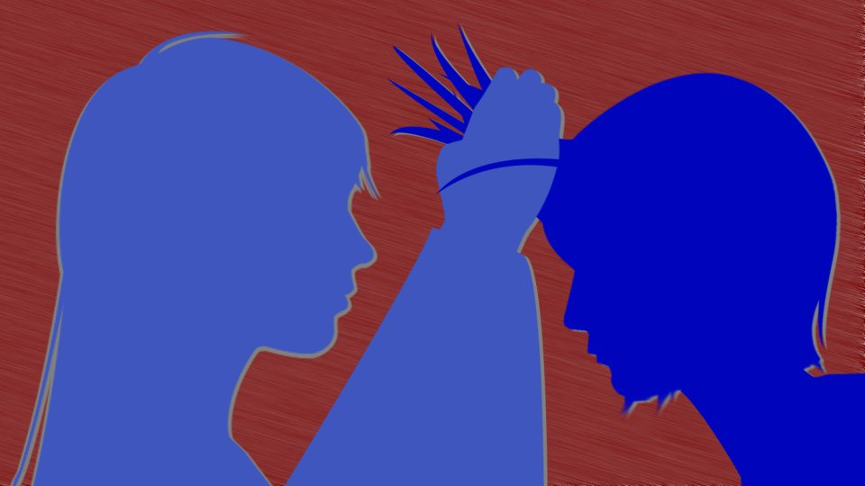
前髪をむしり取らんばかりの勢いでぐっとつかみ上げる。
「ん……春花、やっぱり髪、短い方が似合うわよ？」
「は……なせ……！」
みぞおちの激痛と前髪のつかみ上げで、身体の自由が奪われる。
うずくまりたくなるみぞおちの痛みに対し、無理やり顔を上げられるととても息苦しい。
チガ姉はわざとやっている。
わざと私を苦しい体勢にさせ、何かをたくらんでいる。
「は……なせ……！」
みぞおちの激痛と前髪のつかみ上げで、身体の自由が奪われる。
うずくまりたくなるみぞおちの痛みに対し、無理やり顔を上げられるととても息苦しい。
チガ姉はわざとやっている。
わざと私を苦しい体勢にさせ、何かをたくらんでいる。
「そうか……！ さっき私を殴ったのも、チガ姉だな……！？」
「ん……何のことかしら？」
「しらばっくれるな！」
「ん……何のことかしら？」
「しらばっくれるな！」
うつぶせの体勢からこぶしを握り、チガ姉の顔面に向けて突き上げる。
しかし、そのこぶしには何の手ごたえもなく、そよ風に変わる。
しかし、そのこぶしには何の手ごたえもなく、そよ風に変わる。

「ん……春花、それでも、本当に山籠で修行したの？」
何だ……！？ 今のはいやみか！？
今度こそよけられないように左足で後ろ回し蹴りを放つ。
それも足元を狙った回し蹴りだ。
これを跳躍でよけさせ、チガ姉の身体を宙に浮かせる。
こうすれば次の私の攻撃はよけられない。
何だ……！？ 今のはいやみか！？
今度こそよけられないように左足で後ろ回し蹴りを放つ。
それも足元を狙った回し蹴りだ。
これを跳躍でよけさせ、チガ姉の身体を宙に浮かせる。
こうすれば次の私の攻撃はよけられない。
「う……がが……！」
左足の回し蹴りの勢いで、右前蹴りを放ったつもりだった。
しかし、私の身体は標本のクモのように、畳の上にピタリと押さえつけられた。
うつぶせのまま両肩と頭が抑えられて身動きが取れない。
身体の軽いチガ姉とは思えないほどに、関節に負荷がかかる。
左足の回し蹴りの勢いで、右前蹴りを放ったつもりだった。
しかし、私の身体は標本のクモのように、畳の上にピタリと押さえつけられた。
うつぶせのまま両肩と頭が抑えられて身動きが取れない。
身体の軽いチガ姉とは思えないほどに、関節に負荷がかかる。

「ん……春花、大人しくして。私、暴力は嫌いよ？
まして、弱い者いじめなんてしたくない」
「誰が……！ 誰が、弱いだって……！？」
「誰が……！ 誰が、弱いだって……！？」
「ん……山で独りだった春花には、対人戦経験が全くないの。
私たちは夏菜が武器を持つようになってからは毎日のように戦いごっこをしていたし、私が東京に行ってからも帰省の時は欠かさず夏菜と手合せしていた」
「くそ……！」
「くそ……！」
「ん……春花はずっと獣を相手にしていただけ。
私にとって、春花は狩られる獣と同類なのよ？
だから、私が今しているのは単なる弱い者いじめ」
「だ……黙れ！」
「ん……だから、静かにして」
「だ……黙れ！」
「ん……だから、静かにして」
顔を横向きにさせられ、私の頬にチガ姉の膝がぐりぐりと食い込む。
無理やり口が開けられ、しゃべることもできない。
よだれがだらしなく口から漏れ出す。
無理やり口が開けられ、しゃべることもできない。
よだれがだらしなく口から漏れ出す。
「ん……春花、もう一度言うわね。
春花はみんなに警戒されているかもしれないの。
だから自分の存在を示してはいけない。
荒田駅を見張るか、山に帰るか、ここで大人しくしてるか。
どうする？ 手伝ってくれるなら、歓迎するわ」
「えげ……げげ……！」
まだ文句を言いたかったが、窒息しかけた魚のように口を無理やり開けられ、まともに声を出せない。
「えげ……げげ……！」
まだ文句を言いたかったが、窒息しかけた魚のように口を無理やり開けられ、まともに声を出せない。
くそ……！ もう分かった、分かったから……！
冷静に話をするから……！
確かに私はチガ姉を責め立てるばかりで、まともに話をできる空気にしていなかった。
冷静に話をするから……！
確かに私はチガ姉を責め立てるばかりで、まともに話をできる空気にしていなかった。
その心の声が聞こえたのか、チガ姉はゆっくりと私から離れた。
「くそ、いってえな……」
よだれを拭いながら起き上がる。
山籠で強くなったつもりだったけど、チガ姉の前では赤子も同然だ。
東京に引っ越したチガ姉でこれだ。夏菜なんてもっと強いのかもしれない。
よだれを拭いながら起き上がる。
山籠で強くなったつもりだったけど、チガ姉の前では赤子も同然だ。
東京に引っ越したチガ姉でこれだ。夏菜なんてもっと強いのかもしれない。
「ん……春花、どうするの？
荒田駅？ 山？ ここ？」
私にしたことをちょっとは謝ってくれるかと期待したが、そんな様子はない。
いつもと全く変わらない口調と表情が、逆に不気味だ。
私にしたことをちょっとは謝ってくれるかと期待したが、そんな様子はない。
いつもと全く変わらない口調と表情が、逆に不気味だ。
「チガ姉、待ってくれよ……ちょっとは状況を理解できないと、どうしたらいいのか分からない。
何も、聞かせてもらえないのか……？」
「…………」
チガ姉の表情が初めて変わった。
と言っても、少し目を細める程度。
2つの青い瞳が、細められたまぶたの陰に入り、黒ずんで見える。
「…………」
チガ姉の表情が初めて変わった。
と言っても、少し目を細める程度。
2つの青い瞳が、細められたまぶたの陰に入り、黒ずんで見える。
「ん……春花は……
ここの風習、どう思う？」
「風習……？」
「ん……荒田集落は、昔から日本人と西洋人が共存してきた。 今では、血も文化も完全にまじりあった状態」
「それくらい、知ってるよ……」
「風習……？」
「ん……荒田集落は、昔から日本人と西洋人が共存してきた。 今では、血も文化も完全にまじりあった状態」
「それくらい、知ってるよ……」
「ん……この荒田集落の宗教は少し変わっている。
魔女が法要を取り仕切り、死者を死神と呼び――。
でも、おかしいと思わない？ 肝心なものがないのよ」
「何だよ、じらすなよ……」
「ん……春花は、いつも誰に祈ってるの？」
「…………？ 祈る？」
「何だよ、じらすなよ……」
「ん……春花は、いつも誰に祈ってるの？」
「…………？ 祈る？」
「ん……この荒田の宗教には祈るべき神様がいない。
この集落には、崇拝対象となる神様がいないの」
「神様が、いない……？」
「神様が、いない……？」
崇拝対象がないのが変だってのは、私にはよく分からない理屈だが……。
私はそんなこと気にせず、法要の時はいつも亡くなった人のことを思い、冥福を祈っていた。
だから誰を拝むとか、誰を崇拝するかと言う考えには至らなかった。
私はそんなこと気にせず、法要の時はいつも亡くなった人のことを思い、冥福を祈っていた。
だから誰を拝むとか、誰を崇拝するかと言う考えには至らなかった。
つまりチガ姉が言いたいのは、宗教文化があるのに、明確な崇拝対象がいないということだ。
日本神道では、八百万の神様とか、アニミズムとか、森羅万象を拝むものだけどそれだとダメなのか？
荒田集落にある十回忌って言うのは、仏教にはない神道独特のものであると、ここに引っ越す前に五島から聞いたことがある。
日本神道では、八百万の神様とか、アニミズムとか、森羅万象を拝むものだけどそれだとダメなのか？
荒田集落にある十回忌って言うのは、仏教にはない神道独特のものであると、ここに引っ越す前に五島から聞いたことがある。
「日本神道の考え方なら、あらゆるものに神様が宿ってるから、特定の神様がいなくてもいいんじゃないか？
多神教なら普通だろ？」
「ん……春花、それは大きな間違いよ。荒田の信仰は一神教。 ただ単に、私たちが知らなかっただけ。本当は神様がいたのよ」
と、チガ姉は床に寝っころがるミイラに目を向けた。
「ん……春花、それは大きな間違いよ。荒田の信仰は一神教。 ただ単に、私たちが知らなかっただけ。本当は神様がいたのよ」
と、チガ姉は床に寝っころがるミイラに目を向けた。
「ん……彼女は『ヴェルジ』と呼ばれていたこの集落の神様。
400年以上前に亡くなった、14歳の少女だそうよ」
「ヴェルジ……？」
明らかに日本語とは違う名前。
にしても、こんな神様、どこから湧いて出たんだ？
集落の滅亡が関係あるのか？
「ヴェルジ……？」
明らかに日本語とは違う名前。
にしても、こんな神様、どこから湧いて出たんだ？
集落の滅亡が関係あるのか？
「ん……春花、神様は死んだの。もう、この集落を守ってくれる存在は消えてしまった」
「もともとミイラは死んでるだろ……」
と、チガ姉は吊るされっぱなしのロープと、ミイラの首を通していた輪に目をやる。
「もともとミイラは死んでるだろ……」
と、チガ姉は吊るされっぱなしのロープと、ミイラの首を通していた輪に目をやる。
「ん……この様子だと、ヴェルジ様はさっき首を吊っていたんでしょ？
つまり、ヴェルジ様は2度死んだ。1度目は人間として、2度目は神様として」
チガ姉の言っていることが、だんだん現実味を失っていく。
そもそも、この暴力的なチガ姉自体に現実味がないし、言っている内容があまりにも妄言じみている。
チガ姉の言っていることが、だんだん現実味を失っていく。
そもそも、この暴力的なチガ姉自体に現実味がないし、言っている内容があまりにも妄言じみている。
「もう、この集落には脅威が入り込んでいるの。
女神様を殺し、この集落を滅亡に追いやる脅威が。
女神殺しをする脅威がね」
ミイラを吊るしたのは、ただのパフォーマンスに過ぎないはず。
でもチガ姉にとって、それは脅威であり、集落への宣戦布告と捉えているらしい。
ミイラを吊るしたのは、ただのパフォーマンスに過ぎないはず。
でもチガ姉にとって、それは脅威であり、集落への宣戦布告と捉えているらしい。
「ん……さあ、どうする？
駅？ 山？ ここ？」
さっきので説明終わりかよ……！ 余計に混乱してくるじゃないか……。
でも、このチガ姉から話を聞いたって無駄だろう。
目の前にいるチガ姉らしき人は、私の知っている人とは違うのだ。
さっきので説明終わりかよ……！ 余計に混乱してくるじゃないか……。
でも、このチガ姉から話を聞いたって無駄だろう。
目の前にいるチガ姉らしき人は、私の知っている人とは違うのだ。
このヴェルジって神様が死んだから集落がおかしくなるなんて、私は信じない。
だって、私が今朝この集落に来たときから―― ヴェルジが首を吊る前からおかしかったのだ。
絶対に人の手によるおかしなことが起こっているはずだ。
私はもう、呪いなんて信じない……！
だって、私が今朝この集落に来たときから―― ヴェルジが首を吊る前からおかしかったのだ。
絶対に人の手によるおかしなことが起こっているはずだ。
私はもう、呪いなんて信じない……！
「チガ姉、私は駅に戻る。
ここにいるよりはみんなに見つかりにくいだろうし、私も役に立てる」
「ん……分かったわ」
「ん……分かったわ」
チガ姉は、そのまま部屋から出ようとする。
「なあ、チガ姉待ってくれよ。他のみんなはどこに行ったんだ？
さっき集落中探しまわったけど、誰もいなかったぞ？」
「ん……何を言っているの？ みんな家の中よ？」
「は？」
「ん……何を言っているの？ みんな家の中よ？」
「は？」
私の発言を全否定するチガ姉の言葉に、引きとめる言葉さえ発することができなかった。
チガ姉と私が見ているものって……もしかして、別のものなのではないか？
私に見えないものがチガ姉には見えている……？
チガ姉と私が見ているものって……もしかして、別のものなのではないか？
私に見えないものがチガ姉には見えている……？
でも……
チガ姉にはこのヴェルジのミイラは見えていた。
これが400年以上前に死んだ荒田集落の信仰対象？
ミイラと言うか、死体を拝む宗教なんて……。
これが400年以上前に死んだ荒田集落の信仰対象？
ミイラと言うか、死体を拝む宗教なんて……。
いや、それがおかしいとも言い切れない。
死んだ人間のことを死神と呼ぶ風習は今でも根強く残っており、能面と大きな羽織ものを身にまとっている。
ヴェルジの格好もまさに死神だし、ヴェルジ自体が死神とも言える。
ってことは、死神を信仰しているのか……？
死んだ人間のことを死神と呼ぶ風習は今でも根強く残っており、能面と大きな羽織ものを身にまとっている。
ヴェルジの格好もまさに死神だし、ヴェルジ自体が死神とも言える。
ってことは、死神を信仰しているのか……？
こんなの悪魔崇拝以外の何ものでもないじゃないか……!
そもそも、どうしてこのヴェルジが信仰の対象になったのか。
まさかこいつが集落に呪いをかけた、なんてことはないだろうし。
そもそも、どうしてこのヴェルジが信仰の対象になったのか。
まさかこいつが集落に呪いをかけた、なんてことはないだろうし。
それに、もし集落外に保存されていたとしたら、こいつもよそ者って言えるんじゃないか？
それが今日四月八日に現れたってことは……。
それが今日四月八日に現れたってことは……。
残念ながら、もう私の力ではこれが限界だ。
この集落にはチガ姉以外、誰もいないし、チガ姉自体頼れそうもない。
となると……。
なつみや五島の力を借りるしか……。
この集落にはチガ姉以外、誰もいないし、チガ姉自体頼れそうもない。
となると……。
なつみや五島の力を借りるしか……。
いや、こんなことに巻き込むなんて、できるはずが……！
でも……話を聞いてもらうくらいはできるだろう。
ここに連れてくるわけにはいかないが、少しでも手がかりが欲しい。
なつみの直感と五島の頭があれば……。
でも……話を聞いてもらうくらいはできるだろう。
ここに連れてくるわけにはいかないが、少しでも手がかりが欲しい。
なつみの直感と五島の頭があれば……。
video: 雨1.wmv――人の気配、動物の気配、そしてあらゆる自然の音がかき消されている。
ただ、雨と雷の音を除いては。
今なら集落に入っても、さっきほど気配を殺す必要もないだろう。
ただ、雨と雷の音を除いては。
今なら集落に入っても、さっきほど気配を殺す必要もないだろう。
video: 雨2早い.wmv
いや逆に、集落のみんなは、なおさら外を警戒するかもしれない。
気配を殺すよりも、どの家からでも死角になるルートを通らなくては。
気配を殺すよりも、どの家からでも死角になるルートを通らなくては。
video: 雨2早い.wmv
また木々の間に入り、新村家の方へ向かう。
足音を気にする必要はないが、視線には気をつけなくてはならない。
猟銃を構えている住人がいる可能性だってあるのだ。
足音を気にする必要はないが、視線には気をつけなくてはならない。
猟銃を構えている住人がいる可能性だってあるのだ。
video: 雨2早い.wmv
荒田集落の人間は、臆病で好戦的。
危機と分かれば、たちまち脅威に対して襲いかかる。
例え私が新村春花と明かしても、その前に銃が発砲されてはどうしようもない。
それに、チガ姉が言っていたように、私がよそ者とみなされる可能性もある。
危機と分かれば、たちまち脅威に対して襲いかかる。
例え私が新村春花と明かしても、その前に銃が発砲されてはどうしようもない。
それに、チガ姉が言っていたように、私がよそ者とみなされる可能性もある。
video: 雨2早い.wmv
私が荒田の人間かどうかは関係ない。
集落が滅びると予言された日に偶然にも私が2年ぶりに集落に舞い降りるのだ。
それを怪訝に思う人もいるかもしれない―― これがチガ姉の念のための警戒。
しかしこれって悪循環だよな……。
逆に私も集落に人間を警戒している。
集落が滅びると予言された日に偶然にも私が2年ぶりに集落に舞い降りるのだ。
それを怪訝に思う人もいるかもしれない―― これがチガ姉の念のための警戒。
しかしこれって悪循環だよな……。
逆に私も集落に人間を警戒している。
 video: 雨1.wmv
video: 雨1.wmv――よし、何とか新村家の庭に入ることができた。
チガ姉と夏菜は外を見張っているはずだから、中には幸太郎さんとサクラさんがいるはず。
あの2人なら、私を見ても警戒しないだろう。
でも人の気配がないな。
もしかすると、全員外出中とか？
チガ姉と夏菜は外を見張っているはずだから、中には幸太郎さんとサクラさんがいるはず。
あの2人なら、私を見ても警戒しないだろう。
でも人の気配がないな。
もしかすると、全員外出中とか？
いつも通り、縁側の鍵が開いていた。
2年前、私に割り当てられた2階の部屋へ入る。
2年前、私に割り当てられた2階の部屋へ入る。
部屋は2年前と変わらない。
まめに掃除されているようだけど、私の荷物は山籠に出た時のままだ。
一応、着替えようかな。
山籠は終わっていないけど、身なりをきれいにして、少しでも警戒されないようにしないと。
まめに掃除されているようだけど、私の荷物は山籠に出た時のままだ。
一応、着替えようかな。
山籠は終わっていないけど、身なりをきれいにして、少しでも警戒されないようにしないと。
video: 雨1.wmv――服を替え、髪もここに来た時の長さにばっさりと切る。
上手には切れないけど、シルエット的に私と分かればいい。
上手には切れないけど、シルエット的に私と分かればいい。
video: 雨1.wmv自分の顔を2年ぶりに鏡で見た。
思っていた以上に変わりがない。
だいぶ日焼けしているだろうと思っていたけど、結構白いままだ。
あのようなサバイバル生活にも、糸姫温泉は効果があるようだ。
まあ、今はそんなことより、サクラさんを探さないと。
思っていた以上に変わりがない。
だいぶ日焼けしているだろうと思っていたけど、結構白いままだ。
あのようなサバイバル生活にも、糸姫温泉は効果があるようだ。
まあ、今はそんなことより、サクラさんを探さないと。
家の中を見てまわる。
どこにも人の気配がない。
こんな雨の中、サクラさんたちはどこへ行ったのだろうか。
どちらにしても、雨が止むのを待つか……。
こんな雨の中、サクラさんたちはどこへ行ったのだろうか。
どちらにしても、雨が止むのを待つか……。
2年ぶりに触るスマホ――。
今でも動いてくれるだろうか。
今でも動いてくれるだろうか。
ダメだ、電源が入らない。
バッテリー切れかな？
充電器を差し、再び起動を試みる。
バッテリー切れかな？
充電器を差し、再び起動を試みる。
…………
…………
よし、電源が入った！
でも山籠前に解約したからつながらないかな。
この家の無線LANと接続ができれば――。
うん、ネット接続はOKだ。
通話もアプリを使えば無線LAN範囲ならいけるだろう。
でも山籠前に解約したからつながらないかな。
この家の無線LANと接続ができれば――。
うん、ネット接続はOKだ。
通話もアプリを使えば無線LAN範囲ならいけるだろう。
ざっと2年分のメッセージやら着信やらをチェックする。
意外と指先が操作方法を覚えている。
意外と指先が操作方法を覚えている。
なつみや五島から定期的にメッセージが届いていたようだ。
2年前のメッセージは、私の安否を気にする内容であるが、それが次第に変わっている。
週に1回程度のメッセージには、その週にあったことやちょっとした一言が書かれている。
少しでも、私との縁をつなぎとめようとするかのようなメッセージだった。
2年前のメッセージは、私の安否を気にする内容であるが、それが次第に変わっている。
週に1回程度のメッセージには、その週にあったことやちょっとした一言が書かれている。
少しでも、私との縁をつなぎとめようとするかのようなメッセージだった。
突然の着信音――
雨音を切り裂くようなけたたましい電子音が鳴り響く。
なつみから、ちょうど新着メッセージ……？
私が見たこのタイミングでメッセージって……。
なつみから、ちょうど新着メッセージ……？
私が見たこのタイミングでメッセージって……。
"春花、メッセージ見たの！？ 既読ついたよ！？"
そうか、見たら通知されるのか。
と、続けてメッセージが届いた。
そうか、見たら通知されるのか。
と、続けてメッセージが届いた。
"今日、私と五島で荒田集落に行こうと思うんだけど、春花は集落にいるの？"
…………！？
おいおいおいおい！ 冗談じゃないぞ！
外の世界から集落を滅ぼすものって、まさか……！
…………！？
おいおいおいおい！ 冗談じゃないぞ！
外の世界から集落を滅ぼすものって、まさか……！
ダメだ！ 今来たらどんな目に遭わされるか！
すぐになつみに電話して伝えるんだ！
えっと確か無料通話アプリが――。
すぐになつみに電話して伝えるんだ！
えっと確か無料通話アプリが――。
「…………！？」
誰かが、私の後ろに……。
雨音とメッセージに気を取られて気配に気づかなかった。
不覚だ……！ 誰だ、私を殴りつけたのは……！
雨音とメッセージに気を取られて気配に気づかなかった。
不覚だ……！ 誰だ、私を殴りつけたのは……！
なつみ……五島……来るんじゃない……！
お前なら、直感で分かるだろ……？
頼むから、来ないでくれ……！
くそ……！ 身体が動かない……！
視界がぼやけて…… 雨音に邪魔されて…… 状況が把握できない。
お前なら、直感で分かるだろ……？
頼むから、来ないでくれ……！
くそ……！ 身体が動かない……！
視界がぼやけて…… 雨音に邪魔されて…… 状況が把握できない。
意識はしっかりしているのに、運動神経と五感がやられている。
いや……こういう時こそ落ち着け……！
私は山籠で何度も極限状態を味わったのだ！
何もできない時こそ、できることだけに意識を集中しろ！
でないと、なつみと五島が……！
いや……こういう時こそ落ち着け……！
私は山籠で何度も極限状態を味わったのだ！
何もできない時こそ、できることだけに意識を集中しろ！
でないと、なつみと五島が……！
まず、自分自身の意識と五感を確かめる。
意識…… 概ね良好。
視覚…… ほぼ見えない。
聴覚…… 問題ない。
嗅覚…… 問題ない。
触覚…… 問題ない。
味覚…… 不明。
身体は…… 指先がわずかに動く。
意識…… 概ね良好。
視覚…… ほぼ見えない。
聴覚…… 問題ない。
嗅覚…… 問題ない。
触覚…… 問題ない。
味覚…… 不明。
身体は…… 指先がわずかに動く。
誰かが私の腕を引っ張り、床を引きずる。
ここからどこかへ移動させる気だろうか。
引きずるということは、相手は1人だ。
男なら担ぐことはできるだろうから――女か？
ここからどこかへ移動させる気だろうか。
引きずるということは、相手は1人だ。
男なら担ぐことはできるだろうから――女か？
いや、女や単独犯と見せかけるために、わざと引きずっているのかもしれない。
くそ……相手を絞る決定的な情報がないな……。
少なくとも、私に対する殺意がないことは分かる。
つまり……つまり、これはどういうことだ？
今この状況から分かることって、一体何なんだ？
くそ……相手を絞る決定的な情報がないな……。
少なくとも、私に対する殺意がないことは分かる。
つまり……つまり、これはどういうことだ？
今この状況から分かることって、一体何なんだ？
五島ならここから状況も犯人も割り出せそうだが……。
五島……？
そうだ、今日はなつみと五島がここに来る。
犯人はなつみに連絡を取ろうとした時に私を殴りつけた。
ということは、なつみと五島をここに来させようとしているのか？
五島……？
そうだ、今日はなつみと五島がここに来る。
犯人はなつみに連絡を取ろうとした時に私を殴りつけた。
ということは、なつみと五島をここに来させようとしているのか？
いや、犯人はスマホのメッセージを覗き見してから殴ったわけじゃないだろうし。
ああもう！ 私の頭じゃこれ以上の推理は無理だ……！
ああもう！ 私の頭じゃこれ以上の推理は無理だ……！
頭を殴られてから十数秒――。
視界が戻りはじめ、身体も動くことを確認できた。
しかし、私はまだ犯人のなすがままに引きずられている。
ここで不意打ちしてもいいけど、しばらくこのまま様子を見る。
視界が戻りはじめ、身体も動くことを確認できた。
しかし、私はまだ犯人のなすがままに引きずられている。
ここで不意打ちしてもいいけど、しばらくこのまま様子を見る。
にしても、こいつは荒田の装束と能面を着けているような気がした。
私に正体がばれないようにするためなのだろうけど、ちょっと引っかかる。
見られたくないなら私を殺せばいいし、目隠しだってすればいい。
私に正体がばれないようにするためなのだろうけど、ちょっと引っかかる。
見られたくないなら私を殺せばいいし、目隠しだってすればいい。
――やがて私は、家の中のある一室に放り込まれた。
ここは…… 何の部屋だ？
ここは…… 何の部屋だ？
三畳間程度のとても狭く、薄暗い部屋だ。
この家にこんな部屋があったとは。
この家にこんな部屋があったとは。
やつは、足音を立ててすぐに部屋から去って行った。
うん、気配が確かに遠ざかっていく。
うん、気配が確かに遠ざかっていく。
――完全にやつの気配がなくなったのを確認し、立ち上がってみる。
殴られたところは痛むが、身体も問題なく動くし、視界ももう大丈夫。
ナイフを手に持ち、三畳間から出る。
殴られたところは痛むが、身体も問題なく動くし、視界ももう大丈夫。
ナイフを手に持ち、三畳間から出る。
あいつに鉢合わせたら、今度は私が追い詰めてやる……！
そして能面の下の顔を拝んで、謝罪させ、理由を吐き出させるのだ。
でも、1番の目的はそれではない。
すぐになつみたちに連絡を取り、来るのをやめさせないといけない。
さっきのあいつが現れてから、サクラさんの言うとおり、何かが起ころうとしているのは確信できた。
そして能面の下の顔を拝んで、謝罪させ、理由を吐き出させるのだ。
でも、1番の目的はそれではない。
すぐになつみたちに連絡を取り、来るのをやめさせないといけない。
さっきのあいつが現れてから、サクラさんの言うとおり、何かが起ころうとしているのは確信できた。
だけど、あの格好は明らかに集落の人間だ。
私を殴り気絶させ、そして部屋から出す。
何のつもりだ？ 目的が全然見えてこない。
私を殴り気絶させ、そして部屋から出す。
何のつもりだ？ 目的が全然見えてこない。
――自室の前に立ち、ナイフをしっかりと握る。
同時に周囲を確認する。
よし、人の気配はない。
この部屋の奥にも人はいないだろう。
スマホを取り、すぐになつみに連絡を取るのだ。
よし、開けるぞ……！
同時に周囲を確認する。
よし、人の気配はない。
この部屋の奥にも人はいないだろう。
スマホを取り、すぐになつみに連絡を取るのだ。
よし、開けるぞ……！
最初にスマホを取るつもりだったからだろう。
異様な光景が視界の端に入ったにもかかわらず、最初に目で認識したのは私のスマホだった。
異様な光景が視界の端に入ったにもかかわらず、最初に目で認識したのは私のスマホだった。
私のスマホに滴り落ちる血――。
なぜスマホに血が落ちているのか。
そんなの、すぐ上を見れば分かることだ。
なぜスマホに血が落ちているのか。
そんなの、すぐ上を見れば分かることだ。
天井からぶら下がる人らしきもの――。
スマホに目の焦点を合わせているのに、人らしきものに視覚野が反応を示す。
私が引きずられて、ここに戻るまでの1分ちょっとの間に、この部屋に首を吊る人間が現れた。
能面をかぶり、赤装束を着た怪人の五体が風もないのにゆらゆらと揺れる。
スマホに目の焦点を合わせているのに、人らしきものに視覚野が反応を示す。
私が引きずられて、ここに戻るまでの1分ちょっとの間に、この部屋に首を吊る人間が現れた。
能面をかぶり、赤装束を着た怪人の五体が風もないのにゆらゆらと揺れる。
「くそ……！」
私は急いで下から首吊り人間を支える。
もし私が部屋から連れ出されてから吊るされたなら、まだ生きている可能性がある。
おい！ 死ぬんじゃないぞ！ 私を殴った理由くらい聞かせろ！
私は急いで下から首吊り人間を支える。
もし私が部屋から連れ出されてから吊るされたなら、まだ生きている可能性がある。
おい！ 死ぬんじゃないぞ！ 私を殴った理由くらい聞かせろ！
左手で身体を支えつつ、ナイフを天井のロープに向かって投げつける。
ロープが切れ、怪人が私のスマホの上に落ちようとするのをずらしながら床に落とす。
ロープが切れ、怪人が私のスマホの上に落ちようとするのをずらしながら床に落とす。
「おい！ 生きてるか！？ しっかりしろ！」
あれだけの出血だ。どこかに深い切り傷があるはずだ。
1分足らずの首つりよりも、そっちの方が重傷かもしれない。
私は能面と赤装束のフードに手をかけ、一気に引きはがした。
あれだけの出血だ。どこかに深い切り傷があるはずだ。
1分足らずの首つりよりも、そっちの方が重傷かもしれない。
私は能面と赤装束のフードに手をかけ、一気に引きはがした。
「何だよ、これ……」
能面の下の顔は……ミイラ。
そんなバカな……！
能面の下の顔は……ミイラ。
そんなバカな……！
能面の下だけでなく、全身を確認する。
どこにも血が流れてきそうなみずみずしい肉体は存在しない。
ただの全身が干からびたミイラ。
血は赤装束の内側一面にしみ込んでいただけだった。
これが少しずつ下に垂れて……。
どこにも血が流れてきそうなみずみずしい肉体は存在しない。
ただの全身が干からびたミイラ。
血は赤装束の内側一面にしみ込んでいただけだった。
これが少しずつ下に垂れて……。
何だよ……
何なんだよ……！
ミイラが私を殴ってあの三畳間に運んだのか！？
その後自分で天井にぶら下がった！？
はは……！ 誰のイタズラだよ！
どうせ誰かのイタズラなんだろ！？
ミイラが私を殴ってあの三畳間に運んだのか！？
その後自分で天井にぶら下がった！？
はは……！ 誰のイタズラだよ！
どうせ誰かのイタズラなんだろ！？
「おい！ 出てこい！ 出てこいよ！」
チガ姉の言いつけも忘れ、大声で叫ぶ。
家の中に向かって、そして窓から外に向かって叫ぶ。
チガ姉の言いつけも忘れ、大声で叫ぶ。
家の中に向かって、そして窓から外に向かって叫ぶ。
video: 雨1.wmv――しかし誰からも反応がない。
いや、そもそも、荒田駅方面から集落に戻った時には、人の気配がなかった。
まさか……おい、ちょっと待てよ！
いや、そもそも、荒田駅方面から集落に戻った時には、人の気配がなかった。
まさか……おい、ちょっと待てよ！
video: 雨1.wmv1階に下り、裸足のまま外に飛び出した。
私の全身についていたミイラの血が大雨で流されていく。
私の全身についていたミイラの血が大雨で流されていく。
video: 雨1.wmv「おーい！！ 誰かいないのかああ！？ 私だ！ 新村春花だ！」
大雨に負けじと、自分の存在を集落中に知らしめる。
大雨に負けじと、自分の存在を集落中に知らしめる。
 video: 雨1.wmv
video: 雨1.wmv新村家の屋根の上に登る。
「おーい！ ミイラだ！ ミイラが出たぞ！」
雨の勢いは衰えない。
私も声のかぎりに叫ぶ。
「おーい！ ミイラだ！ ミイラが出たぞ！」
雨の勢いは衰えない。
私も声のかぎりに叫ぶ。
video: 雨1.wmv集会場の屋根に登る。
「今日で集落は滅亡するんだろ！？ どうするんだよ！」
「今日で集落は滅亡するんだろ！？ どうするんだよ！」
video: 雨1.wmv厚い雨雲で暗くなった集落を、雷の閃光がまぶしく照りつける。
 video: 雨1.wmv
video: 雨1.wmv「おい！」
城崎さんの家に入ってみる。
「誰かいないのか！？」
隣の家に入ってみる。
城崎さんの家に入ってみる。
「誰かいないのか！？」
隣の家に入ってみる。
video: 雨1.wmv「おい！
おい！」
video: 雨2早い.wmv
おい……どうして誰もいないんだよ……。
チガ姉……集落を見張ってるはずだろ？
あのミイラを吊ったの、誰なんだよ……。
私を殴ったの、誰なんだよ……。
チガ姉……集落を見張ってるはずだろ？
あのミイラを吊ったの、誰なんだよ……。
私を殴ったの、誰なんだよ……。
video: 雨2早い.wmv
荒田集落には、私1人――。
私を除いた住民が消えてしまった。
私が集落に来たから、みんな消えてしまった？
荒田集落が…… 滅びた……？
私を除いた住民が消えてしまった。
私が集落に来たから、みんな消えてしまった？
荒田集落が…… 滅びた……？
「なあチガ姉、話をする前に聞きたいんだけど……」
「ん……何かしら？」
「私……臭くない？ ずっと山にこもってて服だってろくに替えてないから……」
「ん……何かしら？」
「私……臭くない？ ずっと山にこもってて服だってろくに替えてないから……」
「ん……別に臭わないけど、ちゃんと洗濯してたの？」
「まあ、一応は。洗剤はないけどさ」
「ん……別に気にならないわ。夏菜なら気づくかもしれないけど」
とりあえず雑談でチガ姉との空気感をつかむ。
チガ姉とだって久しぶりなのに、懐かしむ間すら与えられなかったのだ。
「まあ、一応は。洗剤はないけどさ」
「ん……別に気にならないわ。夏菜なら気づくかもしれないけど」
とりあえず雑談でチガ姉との空気感をつかむ。
チガ姉とだって久しぶりなのに、懐かしむ間すら与えられなかったのだ。
「んで……三回忌は？」
「ん……そうね……話しておかないと……」
そしてチガ姉は、1度大きく深呼吸をする。
緊張しているのだろうか。話す内容は軽いものじゃないらしい。
「ん……そうね……話しておかないと……」
そしてチガ姉は、1度大きく深呼吸をする。
緊張しているのだろうか。話す内容は軽いものじゃないらしい。
「ん……三回忌は中止になったの。ちょっと大変なことになっちゃって……」
「中止？ 法要を中止なんて、よっぽどのことだよな……」
「ん……ごめんね、叔母さんの三回忌、できなくて」
「いやいや、三回忌どころじゃないんだろ？ 何があったんだ？」
「中止？ 法要を中止なんて、よっぽどのことだよな……」
「ん……ごめんね、叔母さんの三回忌、できなくて」
「いやいや、三回忌どころじゃないんだろ？ 何があったんだ？」
「ん……お母さんがね……
予言したの」
「予言って……何だ？」
「ん……春花は知らなかったかしら？ お母さんはね、桜が咲く時期だけに、予知能力が働くの」
これは初耳。まるでなつみだ。
「予言って……何だ？」
「ん……春花は知らなかったかしら？ お母さんはね、桜が咲く時期だけに、予知能力が働くの」
これは初耳。まるでなつみだ。
「ん……急にお母さんに予知能力があるだなんて言っても、信じられないわよね」
「いや、信じるよ。大丈夫だから、続けてくれ」
敢えてなつみのことは伏せた。
ここで言うと、何かややこしくなりそうだったから。
「いや、信じるよ。大丈夫だから、続けてくれ」
敢えてなつみのことは伏せた。
ここで言うと、何かややこしくなりそうだったから。
「ん……お母さんが言うには……
今日祀耀802年四月八日――
外の世界から集落を滅ぼす脅威がやってくるって」
「集落を滅ぼす脅威って…… はは、何だよそれ」
つい鼻で笑ってしまったが、チガ姉はそんなふざけた嘘を言う人じゃない。
現に、チガ姉の顔は真剣そのものだ。
私もすぐに、上がった頬を下げる。
「集落を滅ぼす脅威って…… はは、何だよそれ」
つい鼻で笑ってしまったが、チガ姉はそんなふざけた嘘を言う人じゃない。
現に、チガ姉の顔は真剣そのものだ。
私もすぐに、上がった頬を下げる。
「外の世界からの脅威って、どういうことだ？」
「ん……お母さんもそれ以上は見えなかったみたいだけど…… 『外の世界から来るもの』って、やっぱり人しか思い浮かばないのよね。 三回忌にも、来客予定もないみたいだし」
「じゃあ、サクラさんの予言が本当なら集落を見張っておかないとな」
「ん……お母さんもそれ以上は見えなかったみたいだけど…… 『外の世界から来るもの』って、やっぱり人しか思い浮かばないのよね。 三回忌にも、来客予定もないみたいだし」
「じゃあ、サクラさんの予言が本当なら集落を見張っておかないとな」
「ん……そうなの、だから私は見張っていたのよ。
そしたら集会場の屋根に……」
「あ、そうか……私、不審者扱いだったのか。 髪も伸びちゃったし、服もぼろぼろだもんな……」
一瞬納得はできたけど、すぐに次の疑問がわく。
どうしてチガ姉は人目を避け、私をここまで連れて来たのか。
「あ、そうか……私、不審者扱いだったのか。 髪も伸びちゃったし、服もぼろぼろだもんな……」
一瞬納得はできたけど、すぐに次の疑問がわく。
どうしてチガ姉は人目を避け、私をここまで連れて来たのか。
「ん……『外の世界から来るもの』――
それはもしかしたら、春花も例外じゃないのかもって思ったわ」
…………？
チガ姉の言っている意味がイマイチ理解できない。
私が外の世界から来るものの例外ではないってことは…… 私が外の世界の者ってことか？
…………？
チガ姉の言っている意味がイマイチ理解できない。
私が外の世界から来るものの例外ではないってことは…… 私が外の世界の者ってことか？
「いや、私は新村家の人間だし、この荒田集落の血統の人間だろ？
なんで私がそんな扱いになるんだよ……」
「ん……それは……」
私がよそ者扱いされているようで、あまりいい気はしない。
「ん……それは……」
私がよそ者扱いされているようで、あまりいい気はしない。
「何だよ、私がよそ者扱いされるような理由でもあるのか？」
「ん……違うわ、私が念のため気を付けただけ」
「ああ……みんな警戒心強いもんな。サクラさんがそんな予知をした上に、私が予定よりも早く戻ってきたら……。 でもチガ姉は私を警戒しないのか？」
「ん……違うわ、私が念のため気を付けただけ」
「ああ……みんな警戒心強いもんな。サクラさんがそんな予知をした上に、私が予定よりも早く戻ってきたら……。 でもチガ姉は私を警戒しないのか？」
「ん……警戒と言うよりは……。
その脅威の正体を確かめたいというか……」
「何かイマイチ釈然としないな……。 まあ要するに、今日変な奴が来るかもしれないってことだろ？ そのタイミングで私が山を下りてきたら、まあちょっと変に思われるだろうけど……」
「ん……だから春花は、今日は誰にも会わないでおいて。 私もみんなには秘密にしておくから」
「何かイマイチ釈然としないな……。 まあ要するに、今日変な奴が来るかもしれないってことだろ？ そのタイミングで私が山を下りてきたら、まあちょっと変に思われるだろうけど……」
「ん……だから春花は、今日は誰にも会わないでおいて。 私もみんなには秘密にしておくから」
「分かったよ。だったら、私も何か手伝えることないか？
この集落の道を見張るんだろ？」
「ん……それは助かるわ。 だったら、春花は人目に付きにくい荒田駅の方をお願いしていい？ 夏菜は豊岳駅の方を見てるし、私はこの集落を見回ってるから」
「なあ、チガ姉……」
「ん……何かしら？」
「ん……それは助かるわ。 だったら、春花は人目に付きにくい荒田駅の方をお願いしていい？ 夏菜は豊岳駅の方を見てるし、私はこの集落を見回ってるから」
「なあ、チガ姉……」
「ん……何かしら？」
「チガ姉は何を信じてるんだ？
サクラさんの予知か？
それとも、突然現れた私か？」
「ん……両方よ。私は春花が脅威だなんて思っていない。 だけど、集落の中に春花を脅威と思う人がいるかもしれない。それだけよ」
なにやらおかしなことになってしまった。
サクラさんになつみのような予知能力があることは知らなかったし、それに今日偶然、外から脅威が来るって言われても……。
「ん……両方よ。私は春花が脅威だなんて思っていない。 だけど、集落の中に春花を脅威と思う人がいるかもしれない。それだけよ」
なにやらおかしなことになってしまった。
サクラさんになつみのような予知能力があることは知らなかったし、それに今日偶然、外から脅威が来るって言われても……。
でもまあ、ここまでわざわざ来たんだ。
私にだって手伝えることがあるはず。
山籠の成果をさっそく披露するときが来たのかもしれない。
私にだって手伝えることがあるはず。
山籠の成果をさっそく披露するときが来たのかもしれない。
――チガ姉と別れ、人目につかないよう、遠回りしながら荒田駅へ向かう。

さっきまで晴れていたのに、少し雲行きが怪しい。
糸姫山ほどではないにしても、荒田集落も立派な山奥だ。ここも天気が変わりやすい。
糸姫山ほどではないにしても、荒田集落も立派な山奥だ。ここも天気が変わりやすい。
にしても、集落を滅ぼす脅威って、仰々しい言い方の割に適当な表現だよな……。
なつみは確か……危険な目に遭う人と会うか、直接話せば危険を察知できたんだよな。
サクラさんも同じなら、危険な目に遭う人と会うか話すかしたはず。
つまり、集落を滅ぼすってことは、集落の人間全員に危険が及ぶと判断したわけだよな。
なつみは確か……危険な目に遭う人と会うか、直接話せば危険を察知できたんだよな。
サクラさんも同じなら、危険な目に遭う人と会うか話すかしたはず。
つまり、集落を滅ぼすってことは、集落の人間全員に危険が及ぶと判断したわけだよな。
それだけで集落を滅ぼす脅威が来るって……ちょっと飛躍しすぎじゃないか？
それなら地震が起こるとか、飛行機が墜落するとかで集落が滅びる方が現実的な気がする。
だけど、今の対応はそうではない。
道を見張り、脅威となる人間が集落に入らないようにしている。
それなら地震が起こるとか、飛行機が墜落するとかで集落が滅びる方が現実的な気がする。
だけど、今の対応はそうではない。
道を見張り、脅威となる人間が集落に入らないようにしている。
あのサクラさんがこんな短絡的な発想で騒いでいるとも思えないし、1度サクラさんとも話をすべきだった。
どうする？ こっそり集落に戻るか？
大体、集落を滅ぼす人間が来るなんてバカげたこと、真に受ける必要なんてないじゃないか……。
どうする？ こっそり集落に戻るか？
大体、集落を滅ぼす人間が来るなんてバカげたこと、真に受ける必要なんてないじゃないか……。
ここで私は初めて足を止めた。
改めて状況と推測を整理する。
サクラさんの言うとおり、誰かが荒田集落に来るとしよう。
来るとすれば、おそらく今日が命日であるお母さん絡みだろう。
お母さんを追い続ける警察とか、お母さんの旧友とか？。
改めて状況と推測を整理する。
サクラさんの言うとおり、誰かが荒田集落に来るとしよう。
来るとすれば、おそらく今日が命日であるお母さん絡みだろう。
お母さんを追い続ける警察とか、お母さんの旧友とか？。
でもチガ姉は三回忌に外からの来訪者が来る予定はないって言ってたし……。
うん、来るとしたら警察かな。
荒田の人間がそろう三回忌に合わせて、元木町での事件のことを探りに来るのかもしれない。
うん、来るとしたら警察かな。
荒田の人間がそろう三回忌に合わせて、元木町での事件のことを探りに来るのかもしれない。
だとしたら、徒歩ではなくパトカーとかの乗り物で来るだろう。
それなら見張っていたって無駄だし、警察相手じゃ逃げようもない。
それなら見張っていたって無駄だし、警察相手じゃ逃げようもない。
やっぱり、荒田駅で待つのはあまりいいとは言えないな。
チガ姉や幸太郎さんなら、それくらい考えつくと思うんだけどなあ……。
よし、1度集落に戻り、サクラさんから話を聞こう。
おそらく私が荒田駅を見張っていたって役に立たない。
チガ姉や幸太郎さんなら、それくらい考えつくと思うんだけどなあ……。
よし、1度集落に戻り、サクラさんから話を聞こう。
おそらく私が荒田駅を見張っていたって役に立たない。
video: 雨1.wmvほら、ついに降り出した。
これなら大雨を理由に新村本家に戻れる。
でも、念のため新村家以外の人間には見つからないように行動する。
これなら大雨を理由に新村本家に戻れる。
でも、念のため新村家以外の人間には見つからないように行動する。
video: 雨1.wmv正直、この程度の雨なんて私にとって大したものではない。
でもこの雨以上に、私には集落に戻らなくてはいけない理由がある。
私にはなつみのような直感はないし、五島のような頭もない。
だけど、この集落のことはよく知っている。
でもこの雨以上に、私には集落に戻らなくてはいけない理由がある。
私にはなつみのような直感はないし、五島のような頭もない。
だけど、この集落のことはよく知っている。
video: 雨1.wmv何かが……何かが起ころうとしているのだ。
サクラさんの予知だとか、集落の滅亡だとか……どうも、きな臭い。
だけど、私の目的はただ1つ。集落のみんなを安心させること。
そしてできれば、お母さんの法要を少しでもしてほしい。
地獄で焼かれるお母さんの苦しみを、和らげるために。
サクラさんの予知だとか、集落の滅亡だとか……どうも、きな臭い。
だけど、私の目的はただ1つ。集落のみんなを安心させること。
そしてできれば、お母さんの法要を少しでもしてほしい。
地獄で焼かれるお母さんの苦しみを、和らげるために。
「お帰り！ よかった、無事だった……！」
「ん……
あ、先輩！」
眠りかけていたなつみと眠っていた五島。
2人とも無事だったようだ。
眠りかけていたなつみと眠っていた五島。
2人とも無事だったようだ。
「えっと……どうだったの？
みんな助けられそうなの？」
「…………」
「やっぱり、みんな変なままでしたか？ でも、先輩が無事でよかったです」
「私が無事でよかった……か」
「…………」
「やっぱり、みんな変なままでしたか？ でも、先輩が無事でよかったです」
「私が無事でよかった……か」
岩壁に寄りかかりながら、ズルズルと地面に腰を下ろす。
天井からは、満天の星が見える。
空は一層澄み渡り、昼間の大雨が幻だったかのように、私の心を苛立たせる。
さっき見てきたことも、幻だったらいいのに……。
見飽きたはずの星空は憎らしいほどに美しく、この荒田という名の地獄を覆い尽くす。
空は一層澄み渡り、昼間の大雨が幻だったかのように、私の心を苛立たせる。
さっき見てきたことも、幻だったらいいのに……。
見飽きたはずの星空は憎らしいほどに美しく、この荒田という名の地獄を覆い尽くす。
「もう寝よう。
多分もう、何も起こらないからさ……」
今となっては大して不快とも思わない岩の床に寝転び、2人に背を向ける。
今となっては大して不快とも思わない岩の床に寝転び、2人に背を向ける。
「ねえ、みんなは……？」
「そうですよ……助けられるなら助けようって――」
五島はそこまで言うと『しまった』と言いそうな勢いで口を閉じた。
「そうですよ……助けられるなら助けようって――」
五島はそこまで言うと『しまった』と言いそうな勢いで口を閉じた。
「五島よ……お前もしかして、本気で桜が人に寄生するなんて思ってるのか？
バカバカしい……」
鼻で笑うように発言したつもりだったが、驚くほどに棒読みだと自分でも分かった。
鼻で笑うように発言したつもりだったが、驚くほどに棒読みだと自分でも分かった。
「新村先輩……
そ、そうですよ……そうですよね！
ははは……桜が人間に寄生するなんて……
そんなこと……」
五島はやっぱり2年前から変わっていない。
私が見てきたことをすぐに察したようだ。
五島はやっぱり2年前から変わっていない。
私が見てきたことをすぐに察したようだ。
と、私の背になつみがそっと身を寄せてきた。
「春花……お疲れ様、ゆっくり休んで。 明日、一緒に元木町に帰ろうね」
そしてそのまま、私の肩を両手で抱き寄せる。
「春花はこの2年間…… ううん、春花のお父さんが亡くなってから、ずっと苦しい思いをしてきたんだよね。 だから、もう春花は休んでいいと思う。 これからは、元木町でのんびりと楽しいだけの生活をさ……」
「春花……お疲れ様、ゆっくり休んで。 明日、一緒に元木町に帰ろうね」
そしてそのまま、私の肩を両手で抱き寄せる。
「春花はこの2年間…… ううん、春花のお父さんが亡くなってから、ずっと苦しい思いをしてきたんだよね。 だから、もう春花は休んでいいと思う。 これからは、元木町でのんびりと楽しいだけの生活をさ……」
「なつみはさ……
チガ姉や夏菜のこと、どう思う？」
「チガ姉と、夏菜……？ えっと、あの姉妹の名前だっけ？」
「うん……」
「うーん……今となっては、やっぱりちょっと怖いかな……」
「チガ姉と、夏菜……？ えっと、あの姉妹の名前だっけ？」
「うん……」
「うーん……今となっては、やっぱりちょっと怖いかな……」
「もし……もしさ、2人が正気に戻って――
いや、妹の夏菜だけが正気に戻って、ここに住めなくなったら……」
「正気に戻るんだったら、元木町に呼んだらいいじゃないかな？」
「………… ありがとう……」
「ううん、春花がいいと思うなら、それがきっと1番いい判断なんだよ」
「正気に戻るんだったら、元木町に呼んだらいいじゃないかな？」
「………… ありがとう……」
「ううん、春花がいいと思うなら、それがきっと1番いい判断なんだよ」
「そうですよ、困ったことがあったら、この天才少女五島絵梨奈にも頼ってください！」
さらに五島がなつみをはさんで私に抱きついてきた。
まるで横倒しの三世代のカメだ。
まるで横倒しの三世代のカメだ。
「新村先輩、荒田桜が人間に寄生するなんて、全部私の妄言ですから。
だから……すみません、変な妄言に付き合わせてしまって……」
と、後ろから五島のすすり泣く声が聞こえ出した。
「なに泣いてんだよ……。お前の妄言で迷惑した上に、さらに泣いて私を困らせる気か……？」
と、後ろから五島のすすり泣く声が聞こえ出した。
「なに泣いてんだよ……。お前の妄言で迷惑した上に、さらに泣いて私を困らせる気か……？」
「だって……だって……！」
「ねえ五島、もうやめようよ……明日元木町に帰るんだよ。
だから……嫌なことは、もう全部忘れようよ……」
「だって私…… 何の役にも立てなかった……！ 私は言うだけ言って、結局いやなことは新村先輩が全部……！」
「だからさ……それも忘れようよ。 春花を連れて帰ることができたら、もう、それでいいじゃない」
「だって私…… 何の役にも立てなかった……！ 私は言うだけ言って、結局いやなことは新村先輩が全部……！」
「だからさ……それも忘れようよ。 春花を連れて帰ることができたら、もう、それでいいじゃない」
2人とも私が何を見てきたのか、概ね察しがついているようだ。
だけど、今でも桜が人間に寄生するなんて信じられない。
そもそも、人間をゾンビみたいに操る寄生生物なんて実在するのか……？
参考までに――参考までに五島に聞いてみよう。
だけど、今でも桜が人間に寄生するなんて信じられない。
そもそも、人間をゾンビみたいに操る寄生生物なんて実在するのか……？
参考までに――参考までに五島に聞いてみよう。
「なあ五島、参考までに聞かせてくれ。
お前の『妄言』みたいに、寄生された生き物が身体を操られて動き出すなんてこと、あり得るのか？」
その瞬間、鼻をすすっていた五島の呼吸が止まる。
そして、固唾を飲み込む音が聞こえる。
その瞬間、鼻をすすっていた五島の呼吸が止まる。
そして、固唾を飲み込む音が聞こえる。
「あり得ますよ。というか実在します」
「『ロイコクロリディウム』という北アメリカや北欧に生息する小さな芋虫の外観をした寄生虫です。
カタツムリに寄生する生物で、カタツムリを操って鳥から見えやすい葉の上まで動かします。
そしてカタツムリの触覚の中でうごめき、鳥のエサである芋虫に擬態し、鳥の胃の中で成虫になるという生活史があります。
見た目がかなり気持ち悪いので、ネットで検索する時は注意です」
「いることはいるんだな。
でも、桜みたいな植物にもそういう寄生生物はいるのか？」
「動物以外にもありますよ」
「動物以外にもありますよ」
「タイワンアリタケの仲間の菌類です。
菌類なので、一応はさっきの芋虫よりも桜には近いと思います。
彼らはアリに寄生し、体内で繁殖した後、身体を乗っ取り宿主を胞子がばらまきやすい葉の上なんかに移動させます。
この後アリは死亡し、アリの身体からキノコが生え、そして胞子をばらまきます」
「他にもハリガネムシや、人間に寄生するギニアワームなんかも実在しますね。
どちらにしても、寄生生物たちが宿主をコントロールする場合、自身の繁殖のためだけに行動します。
被子植物である桜がそんなことをするなんて、やっぱり信じられませんけど……。
そういう寄生生物が実在するのは確かです」
今聞いた例だと、寄生し乗っ取った後に繁殖しやすい場所へ移動するのが主な目的のようだ。
ということは、さっきみんなが家に帰ったのは繁殖しやすい場所へ移動するためってことになるのか？
あれ？ じゃあ、どうしてなつみは……。
ということは、さっきみんなが家に帰ったのは繁殖しやすい場所へ移動するためってことになるのか？
あれ？ じゃあ、どうしてなつみは……。
「じゃあ……じゃあさ、ちょっと話を蒸し返すけど、桜が寄生生物だって言う仮の話でさ――」
身体を起こし、2人に目を向ける。
「なつみは桜に寄生されてたのに、治ったんだよな？ その白般若に注射された薬かなんかで」
身体を起こし、2人に目を向ける。
「なつみは桜に寄生されてたのに、治ったんだよな？ その白般若に注射された薬かなんかで」
「うん、多分……。
言われてみれば、乗っ取られていたって感じはしなくもないけど……。
ううん、そうじゃない、ただヴェルジのミイラを守ることだけを考えてたかな……」
「五島、寄生生物たちには本当に身体を操る能力があるのか！？
さっきの芋虫とかキノコみたいなやつらにさ！」
「いえ、多分それは違うと思います。
私の予想だと、脳や脊髄の一部分だけを興奮あるいは抑制させるのだと思います。
だから寄生生物たちが宿主を無視して身体を操るのではなくて、宿主に命令を送る、というのが正しいかと。
つまり『寄生生物→身体』ではなく『寄生生物→宿主の脳→身体』ってことです」
「ってことは、宿主が動けるうちはまだ生きてるってことだよな！？」
「まあ、そうとも言えますけど……」
私は急いで立ち上がり、五島が持っていたペットボトルの水を口に含み喉を潤す。
住人たちのゾンビのような行動を見て、もう手遅れだと思い込んでいた。
もしあれでもまだ生きているのなら、白般若が使った薬で治せるのかもしれない。
「まあ、そうとも言えますけど……」
私は急いで立ち上がり、五島が持っていたペットボトルの水を口に含み喉を潤す。
住人たちのゾンビのような行動を見て、もう手遅れだと思い込んでいた。
もしあれでもまだ生きているのなら、白般若が使った薬で治せるのかもしれない。
「春花、どこ行くの！？」
「白般若を探しに行く。あいつはみんなを治す方法を知っていたんだ！」
「ねえ、待ってよ！」
「なつみ、五島、できれば手伝ってくれないか？ もうあいつらは、私たちを襲うことはしないから、白般若を探してくれさえすればいい」
「白般若を探しに行く。あいつはみんなを治す方法を知っていたんだ！」
「ねえ、待ってよ！」
「なつみ、五島、できれば手伝ってくれないか？ もうあいつらは、私たちを襲うことはしないから、白般若を探してくれさえすればいい」
「う、うん！ 分かった！」
「いよいよ正念場ですね！ 白般若を見つけて、みんなを治す薬を――」
とその時、ほら穴に足音が響き渡る。
誰だ、夏菜か……？
念のため、ナイフに手をかける。
誰だ、夏菜か……？
念のため、ナイフに手をかける。
「お前ら、私の後ろに下がれ」
私の指示で、2人はさっと私の背中に隠れる。
「おい、誰だ！？ 何の用だ！？」
私の呼びかけに対して返事がない。
にもかかわらず、その歩みに止まる気配がない。
こんな態度をとるやつなんて、1人しか……！
私の指示で、2人はさっと私の背中に隠れる。
「おい、誰だ！？ 何の用だ！？」
私の呼びかけに対して返事がない。
にもかかわらず、その歩みに止まる気配がない。
こんな態度をとるやつなんて、1人しか……！
「何しに来たんだよ……。今さら邪魔してごめんなさいとでも言いに来たのか？」
と――
と――
白般若ががくりと地面に膝をつく。
肩で息をし、かなり消耗している様子だ。
「な、何だよ……寝床が欲しかったのか……？」
軽い嫌味を言いながらも、警戒を解かない。
軽い嫌味を言いながらも、警戒を解かない。
「に、新村先輩……！」
私の後ろに隠れていた五島が、白般若に駆け寄った。
「五島、離れろって……！」
「もしかして、この人……！」
「五島、離れろって……！」
「もしかして、この人……！」
そして五島は白般若の面に手をかける。
白般若も、それに抵抗する様子を見せない。
白般若の能面の下から現れたのは――。
白般若も、それに抵抗する様子を見せない。
白般若の能面の下から現れたのは――。
「おかあ……さん……？」
「…………」
「…………」

荒田集落の法要――
それは命日に舞い降りる死神が、生者を連れて行かぬよう撃退する儀式。
故人は命日になると、死神となって現世に降り立つ。
まさにそれを具現化した光景だった。
しかし、面の下から現れたその顔は死神でも天使でもなく、
故人は命日になると、死神となって現世に降り立つ。
まさにそれを具現化した光景だった。
しかし、面の下から現れたその顔は死神でも天使でもなく、
ただのやつれた中年女性のものだった。
「うう……ぐっ……！」
「お母さん！」
膝をついていたお母さんは肘まで地に着ける。
何が何だから分からないが、今目の前でお母さんらしき人が苦しんでいることだけは分かる。
膝をついていたお母さんは肘まで地に着ける。
何が何だから分からないが、今目の前でお母さんらしき人が苦しんでいることだけは分かる。
「おい、しっかりしろ！ っていうか何でこんなところに！
っていうか、何で生きてるんだよ！」
私のお母さんは、2年前に腐敗した死体で発見され、土葬されたはずだ。
だけどどういうわけか、お母さんが生きていることを疑う気にはならなかった。
この人は私のお母さんであると断言できる。
私のお母さんは、2年前に腐敗した死体で発見され、土葬されたはずだ。
だけどどういうわけか、お母さんが生きていることを疑う気にはならなかった。
この人は私のお母さんであると断言できる。
「春……花……！」
「おいしっかりしろよ！ 聞きたいこと山ほどあるんだからよ！」
「おいしっかりしろよ！ 聞きたいこと山ほどあるんだからよ！」
「えっと……どうしたらいいんだろう……」
さすがの五島もどう対応したらいいか困っているようだ。
いくら頭が良くても、医者ではないのだ。
直接治療や手当をすることは難しいだろう。
さすがの五島もどう対応したらいいか困っているようだ。
いくら頭が良くても、医者ではないのだ。
直接治療や手当をすることは難しいだろう。
「春花……これを……！」
お母さんは右手で白装束の中から1本の注射器を取り出した。
それはドローガとは違い、透明な薬だった。
それはドローガとは違い、透明な薬だった。
「これをどうしたらいいんだ！？ これをお母さんに注射したらいいのか！？」
「ち、違う……これを……夏菜ちゃんに……」
「夏菜に……？」
「あの子は……じきに、翠眼呪殺の年齢になるから……。 それまで、大事に持たせて……」
「もうわけのわかんないこと言うなよ！ そんなことより今お母さんが助かるにはどうすればいいんだよ！」
「ち、違う……これを……夏菜ちゃんに……」
「夏菜に……？」
「あの子は……じきに、翠眼呪殺の年齢になるから……。 それまで、大事に持たせて……」
「もうわけのわかんないこと言うなよ！ そんなことより今お母さんが助かるにはどうすればいいんだよ！」
「この人……
脈がない……」
「え？」
「それに、冷たい……」
「え？」
「それに、冷たい……」
お母さんの手首に触れる五島。
その五島から、お母さんの存在を否定するかのような発言が聞こえる。
その五島から、お母さんの存在を否定するかのような発言が聞こえる。
「お母さん、どうして生きてるんだよ……」
「新村先輩、この人はもう――」
「生きてるじゃないか！ こうやってちゃんと生きてるじゃないか！ なあお母さん！ 元木町に戻ろう！ 一緒にまた暮らそうよ！」
「新村先輩、この人はもう――」
「生きてるじゃないか！ こうやってちゃんと生きてるじゃないか！ なあお母さん！ 元木町に戻ろう！ 一緒にまた暮らそうよ！」
「春花……早く、私から離れて……。
もう……限界が……近い……」
「何言ってんだよ……！ 何が限界なんだよ！」
「私は……神使になることを……選んだ……」
神使って、女神のしもべのことだっただろうか。
つまり、やっぱり死んでいる……？
「何言ってんだよ……！ 何が限界なんだよ！」
「私は……神使になることを……選んだ……」
神使って、女神のしもべのことだっただろうか。
つまり、やっぱり死んでいる……？
「あーあ……やっぱり出来損ないだったか」
突如、洞窟内に響く男の声。
聞き覚えがあるはずなのに、親しみを感じない 邪 な声。
今、目の前に死んだはずのお母さんがいる。
だから、この声の主もきっと――。
突如、洞窟内に響く男の声。
聞き覚えがあるはずなのに、親しみを感じない 邪 な声。
今、目の前に死んだはずのお母さんがいる。
だから、この声の主もきっと――。

「幸太郎さん……？」
「なつみ、違う。こいつは――」
「なつみ、違う。こいつは――」
「はは、久しぶりだねえ、春花。
父親に向かってこいつなんて呼び方はダメだろ？」
「お父さん……。説明してくれよ。何なんだよ、これ……」
「春花はなかなか察しがいいみたいだな。 美冬ちゃんは出来損ないだ。 せっかく2年前、僕が元木町でサポートしてあげたのに」
「元木町で……？」
「お父さん……。説明してくれよ。何なんだよ、これ……」
「春花はなかなか察しがいいみたいだな。 美冬ちゃんは出来損ないだ。 せっかく2年前、僕が元木町でサポートしてあげたのに」
「元木町で……？」
「忘れてないだろ？ 春花はなつみちゃんを守るために、五島家に立てこもった。
その時、美冬ちゃんと茜ちゃんの間に何があったのか、誰も知らない」
「お父さんは知っているのか……？」
「ああ、知っている。せっかく僕ら親子が再会したんだ、教えてあげよう」
「お父さんは知っているのか……？」
「ああ、知っている。せっかく僕ら親子が再会したんだ、教えてあげよう」
「そう、あれは2年前の四月八日。
春花たちが住んでいたマンションの一室での出来事だ」


「早く春花たちのところへ行って、なつみちゃんを片付けないと……。
携帯もテーブルに置きっぱなしだし、どこにいるのかしら」

「誰！？」
「茜……？ 警察にいるはずじゃ……」
「美冬、その薬、こっちに渡して」
「何のつもり？」
「良治君を殺したのは美冬。 今からなつみを殺しにいくんでしょ？」
「…………」
「さあ、ドローガを渡して」
「美冬、その薬、こっちに渡して」
「何のつもり？」
「良治君を殺したのは美冬。 今からなつみを殺しにいくんでしょ？」
「…………」
「さあ、ドローガを渡して」
「茜は分かってないのね。
なつみちゃんを殺すってことは、茜も殺すってことよ？
わざわざ殺されに来たの？」
「美冬を説得しようだなんて思っていない。 必要なら、美冬から力ずくで奪うだけ」
「本気なの？ 私、荒田の山籠に耐えた女。普通の女よりもずっと強いのよ？」
「じゃあ、これならどう？」
「美冬を説得しようだなんて思っていない。 必要なら、美冬から力ずくで奪うだけ」
「本気なの？ 私、荒田の山籠に耐えた女。普通の女よりもずっと強いのよ？」
「じゃあ、これならどう？」
「電話……？」
「この会話は、全部警察に筒抜け。
美冬、あんたは良治君を殺した。
今度はなつみのいる五島家へ行き、その薬で殺そうとしている。
自首して」
「…………」
「早く！」
「…………」
「早く！」
「ぐ！ 待ちなさい美冬！」

「どこ……！？ 美冬、どこへ……！
早く探さないと、なつみたちが危ない……！」
「何の音よ、これ……！」
「そ、そんなことより、早く追わないと……！」

「早く、早く来てよ……！
これなら階段の方が早いか……！」

「！！」
「美冬……あんた……。
電話、嘘だったのに……。
焦って階段から転げ落ちたのかしら。
美冬、荒田集落の恐ろしさは知っている。
こんなことになったら、もう私たちは元木町にはいられないわね」
「この薬、使いかけか。
今さら衛生状態なんて気にできないわね。
私、春花ちゃんを助けに五島家に行く。
なつみと春花ちゃん、2人の娘を連れて、荒田集落の手から逃れられる場所へ行く。
でも、私も警察に捕まるわけにはいかない。
この薬があれば、きっと捕まらずに春花ちゃんを連れ出すことができる」
「さよなら、美冬……」
「これが真実。
春花やなつみちゃんを連れ出すために、茜ちゃんは使いかけのドローガを利用して五島家に侵入。
だけど銃撃を受けて死んでしまった。
ははは、哀れだよねえ」
死んだはずのお父さんが突如現れたことで、なつみと五島はその身を凍らせていた。
しかし、元木町での話を聞くに従い、徐々に猜疑に満ちた目を向けるようになっていた。
死んだはずのお父さんが突如現れたことで、なつみと五島はその身を凍らせていた。
しかし、元木町での話を聞くに従い、徐々に猜疑に満ちた目を向けるようになっていた。
「あなたが死んだ人とか、先輩のお父さんとか、そんなことはもうどうでもいいです。
それよりも、どうして元木町でのこと、知っているんですか？」
「なるほど、さすが天才少女、いい目の付け所をしているよ。 そりゃもちろん、僕がその場にいたからさ」
お父さんが2年前、元木町にいた……？
「なるほど、さすが天才少女、いい目の付け所をしているよ。 そりゃもちろん、僕がその場にいたからさ」
お父さんが2年前、元木町にいた……？
僕はあの時、元木町に来ていた。
茜ちゃんが美冬ちゃんの邪魔をしようとしていることに気づいた女神様は、僕を元木町に寄こした。
茜ちゃんが美冬ちゃんの邪魔をしようとしていることに気づいた女神様は、僕を元木町に寄こした。
「ぐ！ 待ちなさい美冬！」
「はあ！ はあ！
これを注射すれば……！」
「やあ美冬ちゃん、ついにドローガを使ったんだね」

「栄一郎さん！？」
僕はレボハイツの階段でドローガを注射している美冬ちゃんを、階段から突き落とした。
そして僕は身を隠した。
すぐに茜ちゃんが現れたよ。
そして僕は身を隠した。
すぐに茜ちゃんが現れたよ。
予想通り、茜ちゃんは美冬ちゃんの使いかけのドローガを奪い、春花たちを連れ出そうと去っていった。
ドローガの効果時間を考えれば、そんなのとても無理なのにね。
ドローガの効果時間を考えれば、そんなのとても無理なのにね。
「ぐ……ぐぐ……え、栄一郎さん……」
「さあ美冬ちゃん、一緒に行こう。美冬ちゃんは神使になれる。 僕と同じだよ。僕と永遠に一緒にいられる」
「さあ美冬ちゃん、一緒に行こう。美冬ちゃんは神使になれる。 僕と同じだよ。僕と永遠に一緒にいられる」
「栄一郎さんと……一緒に……？」
「ああ、女神様のところに行けば、そんな怪我、すぐに治してもらえるよ。 ただし、条件があるんだ」
「条件……？」
「美冬ちゃんには、生きた第一世代の神使として働いてもらうことになる。 そうすればずっと僕と一緒にいられる。 春花もじきに荒田にやってくるだろう。3人で荒田でずっと一緒に暮らすんだ」
「ああ、女神様のところに行けば、そんな怪我、すぐに治してもらえるよ。 ただし、条件があるんだ」
「条件……？」
「美冬ちゃんには、生きた第一世代の神使として働いてもらうことになる。 そうすればずっと僕と一緒にいられる。 春花もじきに荒田にやってくるだろう。3人で荒田でずっと一緒に暮らすんだ」
「」
「あれ？」
「」
「もしかして、死んじゃった？ まあいいや。とりあえず行こう」
「あれ？」
「」
「もしかして、死んじゃった？ まあいいや。とりあえず行こう」
僕たちは女神様の待つ荒田集落へ移動した。
女神様の力を使えば、元木町と荒田の移動なんて造作もないことだ。
女神様の力を使えば、元木町と荒田の移動なんて造作もないことだ。
「女神様はね、何でもできるんだよ。
人間の力を極限まで高めることも。
予知能力を与えることも。
さらには、瞬間移動も、死者操作もね」
「あのヴェルジってミイラに、そんな力が……？」
「あのヴェルジってミイラに、そんな力が……？」
「いやいや、あんなミイラはただの繁殖の道具に過ぎない。君たちの言う第三世代のなれの果てさ。
本当の女神様はもっと高尚な存在だ」
「じゃああのお母さんの死体は何だったんだよ！ 墓地広場の土の中から発見されたじゃないか！」
「じゃああのお母さんの死体は何だったんだよ！ 墓地広場の土の中から発見されたじゃないか！」
「そりゃ、警察とかに行方不明になった美冬ちゃんの捜索をされたら面倒だからだよ。
この地に外部の人間がやってくることほど面倒なことはない。
だから美冬ちゃんの死体を地中に隠して発見されるのを待った。
タイミングよく母さんが死んでくれて助かったよ。これで美冬ちゃんは捜索されずに済んだんだ。
改めて人間たちの手で土葬された後に、女神様が美冬ちゃんの肉体を復活させたんだ」
「何でわざわざお母さんをここに連れてきたんだよ……！
もともと私たちと暮らすつもりなんてなかったんだろ！？」
「美冬ちゃんの体内にドローガがあるからさ。 ただでさえ茜ちゃんの肉体が警察に渡ったのに、直接荒田と関係のある美冬ちゃんが司法解剖されたらとてもまずい。 ここに外部の人間が来ることが1番厄介なんだよ」
「美冬ちゃんの体内にドローガがあるからさ。 ただでさえ茜ちゃんの肉体が警察に渡ったのに、直接荒田と関係のある美冬ちゃんが司法解剖されたらとてもまずい。 ここに外部の人間が来ることが1番厄介なんだよ」
「それに、美冬ちゃんにも女神様のしもべとして動いてもらえば、ここの住人たちの乗っ取りもスムーズになる。
実は、ヴェルジのミイラがどこにあるのか、僕らには分からなくてね。
神使になった美冬ちゃんが1年前に探し出し、サクラの前に持ち出した。
まあ、ここまではよかった」
「しかし美冬ちゃんはドローガの使用量が少なすぎて、神使としては不完全だった。
せっかく女神様が肉体を癒して下さったのに、生前の意思が強く残り過ぎて、春花をここから逃がそうとした。
勝手な行動をして女神様はたいそうご立腹だよ。
まあこれは僕が階段から突き落とすタイミングを誤った僕のミスなんだけどね」
お父さんの話が本当なら、元木町の事件はヴェルジとは違う女神とやらが裏で動かしていた。
でも、お母さんはドローガを使い切る前に階段から落とされ、人間としての自我が残っていた。
今にしてみれば、思い当たることがたくさんある。
お母さんは集会場のボヤの時、私たちを助けに来てくれたんだ。
同時になつみを助け出し、あの薬を投与してここまで連れてきた。
でも、お母さんはドローガを使い切る前に階段から落とされ、人間としての自我が残っていた。
今にしてみれば、思い当たることがたくさんある。
お母さんは集会場のボヤの時、私たちを助けに来てくれたんだ。
同時になつみを助け出し、あの薬を投与してここまで連れてきた。
そうか、私が集会場の様子を見に行った時に邪魔したのは『騒いでも大丈夫、安全だ』ってことだったのか。
白般若の正体がお母さんだと思えば、合点のいくことがたくさんある。
白般若の正体がお母さんだと思えば、合点のいくことがたくさんある。
「さて、疑問に全部答えてあげたいところだけど、そろそろ時間切れだ。
どうやら女神様は、君たちを危険視しておられるようだ。
外にたくさんのお客さんが待っているよ」
「お客さん……？」
「ほら、早くみんなの相手をしないと、なつみちゃんや五島ちゃんが危ない。 春花、強いなら相手をしないと」
「お客さん……？」
「ほら、早くみんなの相手をしないと、なつみちゃんや五島ちゃんが危ない。 春花、強いなら相手をしないと」
まさか、外にいるのは……！
私はナイフを握り、ほら穴から出る。
――！！
ほら穴から出た瞬間、私の足が止まる。
何だよ、こいつら……！
ほら穴は荒田集落のほとんどの住人によって取り囲まれていた。
しかしその挙動は、まさしくゾンビという形容がふさわしい。
目に生気はなく、足元がふらふらとしていて――。
ほら穴は荒田集落のほとんどの住人によって取り囲まれていた。
しかしその挙動は、まさしくゾンビという形容がふさわしい。
目に生気はなく、足元がふらふらとしていて――。
「春花ちゃん、逃げて！」
住人の群れの向こうから夏菜の声が聞こえる。
「夏菜！ 何なんだよ、こいつら！」
「分からない！ さっき急にみんな起きあがってここに向かったの！」
急に起き上がった！？
住人の群れの向こうから夏菜の声が聞こえる。
「夏菜！ 何なんだよ、こいつら！」
「分からない！ さっき急にみんな起きあがってここに向かったの！」
急に起き上がった！？
そして夏菜が住人たちをかき分けてこちらに歩み寄ってくる。
だが、どうも夏菜の様子がおかしい。
住人たち以上にふらふらしているし、人間の造形としてはやや違和感を覚える。
だが、どうも夏菜の様子がおかしい。
住人たち以上にふらふらしているし、人間の造形としてはやや違和感を覚える。
夏菜はアキレス腱を切られた上に、腕を1本なくしている。
失血もひどく、夏菜の顔は紫色になっている。
それでも息を切らしながら、ここまで歩いてきたのだろうか。
失血もひどく、夏菜の顔は紫色になっている。
それでも息を切らしながら、ここまで歩いてきたのだろうか。
「春花ちゃん、ごめん……止められなかった……」
「どうしたんだよ……！ こいつらにやられたのか！？」
「家でお姉ちゃんとパパのそばにいたら、みんなが急に襲ってきて……」
「どうしたんだよ……！ こいつらにやられたのか！？」
「家でお姉ちゃんとパパのそばにいたら、みんなが急に襲ってきて……」
「きゃっ！」
ほら穴の中から、小さな人影が飛び出してきた。
ほら穴の中から、小さな人影が飛び出してきた。
「ほら、先輩が勇ましく戦うところをしっかりと見ておかないと」
お父さんが五島を外に追いやったらしい。
お父さんが五島を外に追いやったらしい。
と、
住人たちは五島の方に目を向け始めた。
生気のなかった目に眼光がほとばしり、五島に明らかな興味を示している。
「い、いや……！」
「五島、逃げろ…… 逃げろ！」
生気のなかった目に眼光がほとばしり、五島に明らかな興味を示している。
「い、いや……！」
「五島、逃げろ…… 逃げろ！」
しかし、その時にはもう遅かった。
先頭に立っていたチガ姉が、ゾンビのように緩慢な動きをしていたとは思えないほどの速さで、五島に掴み掛った。
先頭に立っていたチガ姉が、ゾンビのように緩慢な動きをしていたとは思えないほどの速さで、五島に掴み掛った。
「う……ぐぐぐ……！」
チガ姉は両手で五島の首をつかみ上げ宙吊りにする。
「やめろチガ姉！ 離せ！」
私が五島を締め上げるチガ姉の襟首をつかんだ瞬間――。
チガ姉は両手で五島の首をつかみ上げ宙吊りにする。
「やめろチガ姉！ 離せ！」
私が五島を締め上げるチガ姉の襟首をつかんだ瞬間――。
今度は私の襟首をつかむ者が現れる。

幸太郎さんだった。
「くそ……！」
幸太郎さんは私を後ろに引きずり、そして3メートル後ろに投げつける。
顔を上げた時には、五島の姿が数十人の住人たちに囲まれ、見えなくなっていた。
「離せお前ら！ おい！」
と、私が立ち上がり、もう一度みんなを引きはがそうとした瞬間、クモの子を散らすように五島から離れた。
そしてそのまま、全員でほら穴の中に入っていく。
顔を上げた時には、五島の姿が数十人の住人たちに囲まれ、見えなくなっていた。
「離せお前ら！ おい！」
と、私が立ち上がり、もう一度みんなを引きはがそうとした瞬間、クモの子を散らすように五島から離れた。
そしてそのまま、全員でほら穴の中に入っていく。
「やめろお前ら！ 頼む！ この中はダメだ！
おい！」
そこへチガ姉が私の前に立ちはだかる。
「ぐあ……！」
私も五島と同じように首を絞められる。
人間の力とはとても思えないほどの抵抗しがたい力で絞め上げてくる。
「ぐあ……！」
私も五島と同じように首を絞められる。
人間の力とはとても思えないほどの抵抗しがたい力で絞め上げてくる。
チガ姉の後ろに見えるのは、ほら穴に入っていく住人たち。
そしてその横には、小さな口から血を流し、首をいびつに曲げて微動だにしない五島の姿。
私の後ろからは、夏菜の弱弱しい息づかいが聞こえる。
こいつら、どうして急に私たちを襲い始めたんだ……？
そしてその横には、小さな口から血を流し、首をいびつに曲げて微動だにしない五島の姿。
私の後ろからは、夏菜の弱弱しい息づかいが聞こえる。
こいつら、どうして急に私たちを襲い始めたんだ……？
――寄生生物たちが宿主をコントロールする場合、自身の繁殖のためだけに行動します。
――なつみには危険を察知する予知能力がある。
――繁殖の邪魔になる者を予知して、抹殺する……？
あまりにも都合の良すぎる発想だ。
だけど、そう考えるとつじつまが合いすぎる。
人間たちはドローガという魅力的な薬に引き寄せられて荒田桜に寄生され、世代を経て荒田桜の胚にされてしまう。
だけど、そう考えるとつじつまが合いすぎる。
人間たちはドローガという魅力的な薬に引き寄せられて荒田桜に寄生され、世代を経て荒田桜の胚にされてしまう。
超人的な力も、予知能力も、何もかも桜が繁殖するためだけに利用されるのか。
私たちはずっと桜に踊らされていただけ。
結局、本当に荒田桜が寄生生物なのかどうか、推測の域は出ていない。
知ったところで、役に立つことなんて……。
私たちはずっと桜に踊らされていただけ。
結局、本当に荒田桜が寄生生物なのかどうか、推測の域は出ていない。
知ったところで、役に立つことなんて……。
もう、私の意識はチガ姉の手の中で果てようとしている。
結局……結局、みんな死ぬのか……。
誰1人、助かる者はいない。
結局……結局、みんな死ぬのか……。
誰1人、助かる者はいない。
――まぶしい光が顔に当たる。
そして遠くからヘリコプターの音。
ああ、そうか。やっと迎えが来たんだな。
最初に湧いたのは、そんな楽観的なことだった。
そして遠くからヘリコプターの音。
ああ、そうか。やっと迎えが来たんだな。
最初に湧いたのは、そんな楽観的なことだった。
しかし、そんな気分など、ものの数秒で破壊する景色だって存在する。
夜で見えづらかったあの光景が、太陽の光によって鮮やかに映し出される。
そしてカラスの声。
それも何十羽いるのかも分からないほどの鳴き声と羽ばたき。
そしてカラスの声。
それも何十羽いるのかも分からないほどの鳴き声と羽ばたき。
カラスたちが群がっているのは、夏菜が倒れている場所だ。
カラスたちが夏菜の死体をついばんでいる。
カラスたちが夏菜の死体をついばんでいる。
そんな中、数羽だけが別の死体を、様子を見るかのように軽くつついている。
見覚えのある、小柄でかわいらしい女の子の肉塊。
「くそ！ 離れろ！」
五島そっくりの肉塊にたかるカラスを追い払い、そして夏菜の居た場所に群がるカラスたちの群れに向かって石を投げる。
一瞬だけカラスたちは散るが、またすぐに夏菜の場所に戻る。
見覚えのある、小柄でかわいらしい女の子の肉塊。
「くそ！ 離れろ！」
五島そっくりの肉塊にたかるカラスを追い払い、そして夏菜の居た場所に群がるカラスたちの群れに向かって石を投げる。
一瞬だけカラスたちは散るが、またすぐに夏菜の場所に戻る。
そんな応戦を続けているうちに、少しずつカラスは飛び去り、夏菜と五島の亡骸と私だけが取り残された。
夏菜の死体は全身の骨がむき出しになるほどに変わり果て、夏菜であったことを証明するものは、その血濡れた衣服だけだ。
五島の死体は、まだ食われた様子はない。
夏菜の死体は全身の骨がむき出しになるほどに変わり果て、夏菜であったことを証明するものは、その血濡れた衣服だけだ。
五島の死体は、まだ食われた様子はない。
カラスたちのくちばしは血で濡れ、小さな赤いものをつまんで羽ばたいていく。
鳥葬のように、猛禽と化したたくさんのカラスたちが夏菜の肉体を天に還していく。
鳥葬のように、猛禽と化したたくさんのカラスたちが夏菜の肉体を天に還していく。
まだ薄暗いほら穴の中では、なつみが息絶えていた。
おそらく五島のように襲われて……。
おそらく五島のように襲われて……。
お母さんの姿はない。
お父さんの話ではお母さんはやっぱり死んでいたらしい。
それが神使として転生して私の前に現れた。
本当なら女神様ってやつの忠実なしもべになっていたとか。
お父さんの話ではお母さんはやっぱり死んでいたらしい。
それが神使として転生して私の前に現れた。
本当なら女神様ってやつの忠実なしもべになっていたとか。
お母さんはどこへ行ったのか。
私たちを助けようとして女神様に捨てられたのか、それとも今度こそ女神様のしもべになったのか。
その真偽は定かでないが、1つおかしな点がある。
私たちを助けようとして女神様に捨てられたのか、それとも今度こそ女神様のしもべになったのか。
その真偽は定かでないが、1つおかしな点がある。
それは、私がこの受け入れがたい光景を冷静に、取り乱すこともなく見ているということだ。
私はどうして、こんなに冷静でいられるのだろうか。
なつみも、五島も死んだんだぞ？
夏菜なんてカラスに食われたんだぞ？
どうして私はこんなに冷静でいられるんだ？
私はどうして、こんなに冷静でいられるのだろうか。
なつみも、五島も死んだんだぞ？
夏菜なんてカラスに食われたんだぞ？
どうして私はこんなに冷静でいられるんだ？
なつみと五島がここへやって来たのは、ほんの半日前のこと。
今までずっと独りぼっちだった私が、また1人になるだけのこと。
私は孤独に慣れ過ぎてしまったのだろうか。
それとも、会うことはないかもしれないと思っていたなつみや五島の最期を見ることができて、心の整理がついたのだろうか。
今までずっと独りぼっちだった私が、また1人になるだけのこと。
私は孤独に慣れ過ぎてしまったのだろうか。
それとも、会うことはないかもしれないと思っていたなつみや五島の最期を見ることができて、心の整理がついたのだろうか。
集落に人の気配はなかった。
家々の中を確認したが、人は誰もいない。
正しくは……人はいないが、人の形をした胚はあった。
見覚えのある姿をした胚たちが、家の中で横たわり息絶えていた。
チガ姉も、幸太郎さんも、城崎さんも、みんな胚になっていた。
家々の中を確認したが、人は誰もいない。
正しくは……人はいないが、人の形をした胚はあった。
見覚えのある姿をした胚たちが、家の中で横たわり息絶えていた。
チガ姉も、幸太郎さんも、城崎さんも、みんな胚になっていた。
私に普通の死体と胚の見分けがつくわけではない。
でも、五島やなつみの死体とは違い、住人たちの死体からは妙な脈動と息吹を感じた。
死んでいるはずなのに、何かがうごめいているような。
死者と呼ぶには、あまりにも生き生きとした生命の悪臭が漂っていた。
でも、五島やなつみの死体とは違い、住人たちの死体からは妙な脈動と息吹を感じた。
死んでいるはずなのに、何かがうごめいているような。
死者と呼ぶには、あまりにも生き生きとした生命の悪臭が漂っていた。
彼らはこのまま、本当に桜の木になるのだろうか。
いや、そうはならないだろう。
外部の人間たちがこの集落に近づいているのだ。
このまま人間たちの手で山を下ろされ、解剖されるのだろう。
そしてこの寄生する桜が人間たちの知るところとなる。
いや、そうはならないだろう。
外部の人間たちがこの集落に近づいているのだ。
このまま人間たちの手で山を下ろされ、解剖されるのだろう。
そしてこの寄生する桜が人間たちの知るところとなる。
もし私がこのまま集落にとどまっていたら、きっと私は保護してもらえるだろう。
でも保護してもらえたところで、私はどこへ行けばいいのだろうか。
でも保護してもらえたところで、私はどこへ行けばいいのだろうか。
元木町に戻ったって、私の知っている人はもういない。
荒田集落には、もう人すらいない。
女ケ沢市なんて、2度と行きたくない。
外界に居場所なんてないのだ。
だから―― 私に残された居場所は――。
荒田集落には、もう人すらいない。
女ケ沢市なんて、2度と行きたくない。
外界に居場所なんてないのだ。
だから―― 私に残された居場所は――。
いやでも、その前にすることがある。
新村家の台所から、手ごろなものを見つけた。
新村家の台所から、手ごろなものを見つけた。
結局、初めてヴェルジのミイラが現れた時、こいつを吊るしたのは誰だったのだろう。
私を殴ったのは誰だったのだろう。
気を失わない程度の力で私を殴ったということは―― はは……そうか……。
私を殴ったのは誰だったのだろう。
気を失わない程度の力で私を殴ったということは―― はは……そうか……。
お母さんは、早くここから私を脱出させるために、ここを危険な場所に見せようと必死だった。
そう、私はその気になれば、いつでも荒田集落から脱出できた。
だけど、私は集落を心配し、なつみと五島の身を案じ、ここに残ってしまった。
だからお母さんは、自ら手を下して私たちを助けようとした。
そう、私はその気になれば、いつでも荒田集落から脱出できた。
だけど、私は集落を心配し、なつみと五島の身を案じ、ここに残ってしまった。
だからお母さんは、自ら手を下して私たちを助けようとした。
だったら、最初からそう言ってくれたらよかったのに。
それとも、お母さんには言えない事情があったのか？
例えば、お父さんや女神様とやらに見張られていたとか。
まあ、今となっては解明のしようもないが。
それとも、お母さんには言えない事情があったのか？
例えば、お父さんや女神様とやらに見張られていたとか。
まあ、今となっては解明のしようもないが。
さよなら、ヴェルジ様。
お前のせいで散々な目に遭ったよ。
だけどさ……お前は何も悪くないんだよな。
お前はただ、人々を傷つけたくないから目をえぐり、そして死んでしまった。
それがこんなおかしなことになるなんて……浮かばれないよな。
お前のせいで散々な目に遭ったよ。
だけどさ……お前は何も悪くないんだよな。
お前はただ、人々を傷つけたくないから目をえぐり、そして死んでしまった。
それがこんなおかしなことになるなんて……浮かばれないよな。
サクラさん……。
きっとサクラさんは、なつみのようになってしまったんだよな。
最初になつみがおかしくなったように、サクラさんがおかしくなってしまい……。
予知能力を持った者は、自然とヴェルジのミイラに呪われてしまう。
きっとサクラさんは、なつみのようになってしまったんだよな。
最初になつみがおかしくなったように、サクラさんがおかしくなってしまい……。
予知能力を持った者は、自然とヴェルジのミイラに呪われてしまう。
1年前、サクラさんはみんなにドローガを使えとでも言ったのだろう。
結果として住人みんながドローガとヴェルジのミイラでおかしくなってしまい、昨夜のような惨劇を起こして胚になってしまった。
どういうわけか夏菜には効かなかったみたいだけど、結局夏菜は胚になるかカラスの餌になるかだけの違いで終わってしまった。
結果として住人みんながドローガとヴェルジのミイラでおかしくなってしまい、昨夜のような惨劇を起こして胚になってしまった。
どういうわけか夏菜には効かなかったみたいだけど、結局夏菜は胚になるかカラスの餌になるかだけの違いで終わってしまった。
マッチに火をつけ、畳の上に放り投げる。
 video: 炎.wmv
video: 炎.wmv2人のミイラにも燃え移り、サクラさんのミイラからはあの悪臭が漂い始める。
やっぱりこの臭い、ファルシフィカソだ。
サクラさんのミイラに火をつけたときにトラブルが起こるようにしたのも、きっとお母さんだったんだな。
お母さんは2年前からずっと私を見守り、たった1人、誰の力も借りずに奮闘していた。
やっぱりこの臭い、ファルシフィカソだ。
サクラさんのミイラに火をつけたときにトラブルが起こるようにしたのも、きっとお母さんだったんだな。
お母さんは2年前からずっと私を見守り、たった1人、誰の力も借りずに奮闘していた。
急いで集会場を後にする。
遠くで聞こえていたヘリコプターの音が、少しずつ大きくなる。
私の姿が見られたら面倒だ。
遠くで聞こえていたヘリコプターの音が、少しずつ大きくなる。
私の姿が見られたら面倒だ。
video: 桜散る.wmvサクラさんの予言通り、荒田集落は滅びてしまった。
そして懸念していた『外から来るもの』が荒田集落を滅ぼしたのかどうかは分からない。
人間の立場からしたら滅びてしまったのだろう。
荒田桜の立場からしたら守り抜いたのだろう。
だけど、どちらにしても荒田桜は滅びてしまうだろう。
そして懸念していた『外から来るもの』が荒田集落を滅ぼしたのかどうかは分からない。
人間の立場からしたら滅びてしまったのだろう。
荒田桜の立場からしたら守り抜いたのだろう。
だけど、どちらにしても荒田桜は滅びてしまうだろう。
video: 桜散る.wmvなぜなら、もうすぐ大勢の人間様が来るからだ。
外部の人間たちが、新しい胚たちを根こそぎ持っていくことくらい、私でも予想できることだ。
荒田桜はこのことを予想できなかったのだろうか。
五島なら何と言うだろうか。
外部の人間たちが、新しい胚たちを根こそぎ持っていくことくらい、私でも予想できることだ。
荒田桜はこのことを予想できなかったのだろうか。
五島なら何と言うだろうか。
video: 桜散る.wmv「植物なんて、種さえ実らせればミッション完了ですからね！
種がちゃんと芽を出すかどうかは、残された子孫たちが自力で頑張ることですよ！」
なんて言いそうだな。
人間は子供が大きくなるまで面倒見るから、その点では勝ってるのかな。
そんなことを考えながら、少しでも人間が優位な点を探そうとする。
なんて言いそうだな。
人間は子供が大きくなるまで面倒見るから、その点では勝ってるのかな。
そんなことを考えながら、少しでも人間が優位な点を探そうとする。
video: 桜散る.wmv私はどうすればみんなを助けられたのだろうか。
この24時間の間に、いくつものヒントがあったはずだ。
これらが、あらゆる事象に繋がっていくはず。
今まで分からなかったことや不可解だったことが、すべてこの24時間で起こったことにつながるはずだ。
この24時間の間に、いくつものヒントがあったはずだ。
これらが、あらゆる事象に繋がっていくはず。
今まで分からなかったことや不可解だったことが、すべてこの24時間で起こったことにつながるはずだ。
video: 桜散る.wmvそんなこと……今考えても仕方ない……。
それより……これから私がどうするかを考えなくてはならない。
私が居られる場所は、いったい――。
はあ……何度入ってもいい気分だ。
ここに来てから、もう何年経ったのだろう。
私ほど仙人らしい生活をしているやつなんて、どこにもいないだろうな。
でも、今さら人の多い場所に戻りたいとは思わない。
だって、私は寂しくないから。
ここに来てから、もう何年経ったのだろう。
私ほど仙人らしい生活をしているやつなんて、どこにもいないだろうな。
でも、今さら人の多い場所に戻りたいとは思わない。
だって、私は寂しくないから。
――私の居場所って、結局ここしかなかった。
荒田集落があったから私が生まれて、なつみや五島と出会い、そしてまたここに戻ってきた。
電車の中で、なつみや五島と元木町に戻る想像をした時、とても楽しかったし、嬉しかった。
荒田集落があったから私が生まれて、なつみや五島と出会い、そしてまたここに戻ってきた。
電車の中で、なつみや五島と元木町に戻る想像をした時、とても楽しかったし、嬉しかった。
また、前みたいな生活が戻ってきて、楽しい毎日を好きな人たちと過ごすことができるって。
みんな死んでしまったけど、みんなが天に還ったこの地に居れば、私は寂しくない。
みんな死んでしまったけど、みんなが天に還ったこの地に居れば、私は寂しくない。
そんな私だから、よく幻を見るようになった。
私のそばには、なつみも五島もお母さんも、そして夏菜も一緒に居てくれるから寂しくない。
これが幻だって分かっている。
ちょっとでも目を凝らすと、みんなたちまち消えてしまう。
私のそばには、なつみも五島もお母さんも、そして夏菜も一緒に居てくれるから寂しくない。
これが幻だって分かっている。
ちょっとでも目を凝らすと、みんなたちまち消えてしまう。
「春花は今までずっと苦しい思いしてきたんだから、もう休んでいいと思うよ」
なつみがそんなことをあのほら穴の中で言ってくれていた。
だから、私はそれに甘えることにする。
例え幻であっても、私はそれに甘えて生きていくことにする。
なつみがそんなことをあのほら穴の中で言ってくれていた。
だから、私はそれに甘えることにする。
例え幻であっても、私はそれに甘えて生きていくことにする。
もう、女神も、みんなも、誰もいないこの荒田の山の中で。
私はずっと生きていく。
この命が果てるまで、私は荒田の人間として、この地で生きていく。
だから…… みんなもここにいるから…… 寂しくないよ。
私はずっと生きていく。
この命が果てるまで、私は荒田の人間として、この地で生きていく。
だから…… みんなもここにいるから…… 寂しくないよ。
Read ✓ Next in this arc →